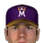
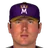

American Baseball League · Eastern Conference
Montreal Royeaux
24-17 .585 · 1st in Eastern Conference
Run differential +10 (208 RS, 198 RA) · Pythagorean 21-20 · L10 8-2 · Streak W6 · Home 14-6 · Road 10-11
Olympic Stadium (capacity 46,500)
BYE Division leader: playoff bye pace
High Minors: Ottawa Lynx · Low Minors:  Quebec Capitales
Quebec Capitales
Depth chart & lineupsPayrollTransactionsLeague financesStaffBallparkRecord bookThe season so far
Season So Far games over .500 by date
Recent Results
Farm System automatic farm score
13th of 20 in the ABL with a farm score of 8.2 (42 players 25 or younger with stats at the affiliates). All farm systems →
Roster (28)
| # | Player | Pos | B/T | Age |
|---|---|---|---|---|
| 34 | Rick Helling | SP | R/R | 31 |
| 32 | Derek Lowe | SP | R/R | 28 |
| 61 | Chan-ho Park | SP | R/R | 28 |
| 39 | Glendon Rusch | SP | L/L | 27 |
| 18 | Paul Wilson | SP | R/R | 29 |
| 49 | Will Cunnane | RP | R/R | 28 |
| 5 | Bobby Jones | RP | R/L | 30 |
| 29 | Armando Reynoso | RP | R/R | 36 |
| 2 | John Riedling | RP | R/R | 26 |
| 58 | Jose Santiago | RP | R/R | 27 |
| 69 |  Jeff Zimmerman | RP | R/R | 29 |
| 44 | Billy Koch | CL | R/R | 27 |
| 8 | Bobby Estalella | C | R/R | 27 |
| 26 | Marcus Jensen | C | S/R | 29 |
| 13 | 1B | R/R | 27 | |
| 10 |  Phil Hiatt | 1B | R/R | 33 |
| 11 | Frank Menechino | 2B | R/R | 31 |
| 74 | 2B | S/R | 23 | |
| 96 | Chris Sexton | 2B | R/R | 30 |
| 7 | 3B | R/R | 26 | |
| 3 | Eduardo Perez | 3B | R/R | 32 |
| 4 | Craig Counsell | SS | L/R | 31 |
| 99 | SS | S/R | 29 | |
| 99 | SS | S/R | 29 | |
| 25 | Rafael Palmeiro | LF | L/L | 37 |
| 23 | Greg Vaughn | LF | R/R | 36 |
| 15 | CF | R/R | 26 | |
| 20 | Jeromy Burnitz | RF | L/R | 33 |
2002 Batting
| Player | G | PA | AB | R | H | 2B | 3B | HR | RBI | BB | K | SB | AVG | OBP | SLG | OPS |
|---|---|---|---|---|---|---|---|---|---|---|---|---|---|---|---|---|
| Greg Vaughn | 39 | 183 | 161 | 24 | 31 | 4 | 0 | 4 | 17 | 22 | 43 | 9 | .193 | .290 | .292 | .582 |
| Craig Counsell | 37 | 175 | 149 | 31 | 58 | 10 | 1 | 4 | 20 | 21 | 11 | 10 | .389 | .465 | .550 | 1.015 |
| Rafael Palmeiro | 39 | 170 | 145 | 27 | 55 | 8 | 1 | 11 | 30 | 23 | 13 | 0 | .379 | .471 | .676 | 1.146 |
| Eduardo Perez | 40 | 167 | 151 | 22 | 41 | 6 | 1 | 5 | 20 | 13 | 31 | 5 | .272 | .325 | .424 | .749 |
| Richard Hidalgo | 38 | 164 | 146 | 14 | 44 | 9 | 1 | 5 | 22 | 14 | 26 | 4 | .301 | .360 | .479 | .839 |
| Frank Menechino | 38 | 160 | 136 | 20 | 43 | 9 | 2 | 3 | 18 | 22 | 26 | 6 | .316 | .419 | .478 | .897 |
| Jeromy Burnitz | 38 | 157 | 138 | 20 | 32 | 3 | 0 | 7 | 21 | 13 | 35 | 1 | .232 | .318 | .406 | .724 |
| Bobby Estalella | 33 | 133 | 119 | 14 | 27 | 6 | 0 | 8 | 22 | 13 | 30 | 0 | .227 | .308 | .479 | .787 |
| Phil Hiatt | 28 | 103 | 92 | 10 | 20 | 5 | 1 | 1 | 4 | 11 | 26 | 1 | .217 | .301 | .326 | .627 |
| Chris Sexton | 21 | 82 | 70 | 12 | 20 | 3 | 1 | 0 | 4 | 11 | 8 | 0 | .286 | .383 | .357 | .740 |
| Marcus Jensen | 9 | 34 | 30 | 5 | 10 | 3 | 0 | 0 | 6 | 4 | 7 | 0 | .333 | .412 | .433 | .845 |
| Mike Bell | 11 | 29 | 26 | 4 | 9 | 2 | 0 | 1 | 4 | 2 | 6 | 2 | .346 | .414 | .538 | .952 |
| Giomar Guevara | 7 | 26 | 26 | 2 | 7 | 0 | 0 | 0 | 2 | 0 | 4 | 0 | .269 | .269 | .269 | .538 |
| Jeff Guiel | 7 | 16 | 15 | 0 | 2 | 0 | 0 | 0 | 1 | 1 | 4 | 0 | .133 | .188 | .133 | .321 |
| Ronnie Merrill | 3 | 11 | 11 | 2 | 2 | 0 | 0 | 2 | 3 | 0 | 1 | 0 | .182 | .182 | .727 | .909 |
| Mike Frank | 5 | 6 | 5 | 1 | 1 | 0 | 0 | 1 | 2 | 1 | 1 | 1 | .200 | .333 | .800 | 1.133 |
| Luis Rafael Garcia | 4 | 4 | 4 | 0 | 1 | 0 | 0 | 0 | 2 | 0 | 1 | 0 | .250 | .250 | .250 | .500 |
| Team | 41 | 1620 | 1424 | 208 | 403 | 68 | 8 | 52 | 198 | 171 | 273 | 39 | .283 | .363 | .452 | .815 |
2002 Batting, Advanced
| Player | PA | AVG | OBP | SLG | OPS+ | ISO | BABIP | BB% | K% | WPA | UBR | WAR |
|---|---|---|---|---|---|---|---|---|---|---|---|---|
| Greg Vaughn | 183 | .193 | .290 | .292 | 45 | .099 | .237 | 12.0% | 23.5% | -1.01 | -0.1 | -0.9 |
| Craig Counsell | 175 | .389 | .465 | .550 | 151 | .161 | .403 | 12.0% | 6.3% | 1.94 | -0.6 | 2.5 |
| Rafael Palmeiro | 170 | .379 | .471 | .676 | 180 | .297 | .364 | 13.5% | 7.6% | 1.22 | -3.1 | 1.9 |
| Eduardo Perez | 167 | .272 | .325 | .424 | 84 | .152 | .308 | 7.8% | 18.6% | 0.90 | -2.8 | 0.0 |
| Richard Hidalgo | 164 | .301 | .360 | .479 | 106 | .178 | .331 | 8.5% | 15.9% | 0.49 | -2.0 | 0.9 |
| Frank Menechino | 160 | .316 | .419 | .478 | 122 | .162 | .374 | 13.8% | 16.2% | 0.93 | -2.3 | 0.8 |
| Jeromy Burnitz | 157 | .232 | .318 | .406 | 78 | .174 | .258 | 8.3% | 22.3% | -0.13 | -1.8 | -0.4 |
| Bobby Estalella | 133 | .227 | .308 | .479 | 92 | .252 | .235 | 9.8% | 22.6% | -0.35 | -0.7 | 0.3 |
| Phil Hiatt | 103 | .217 | .301 | .326 | 56 | .109 | .292 | 10.7% | 25.2% | -0.71 | -0.6 | -0.6 |
| Chris Sexton | 82 | .286 | .383 | .357 | 85 | .071 | .323 | 13.4% | 9.8% | -0.09 | 0.1 | 0.1 |
| Marcus Jensen | 34 | .333 | .412 | .433 | 110 | .100 | .435 | 11.8% | 20.6% | 0.37 | -0.8 | 0.1 |
| Mike Bell | 29 | .346 | .414 | .538 | 134 | .192 | .421 | 6.9% | 20.7% | -0.25 | -0.3 | 0.2 |
| Giomar Guevara | 26 | .269 | .269 | .269 | 34 | .000 | .318 | 0.0% | 15.4% | -0.30 | -0.3 | -0.2 |
| Jeff Guiel | 16 | .133 | .188 | .133 | -18 | .000 | .182 | 6.2% | 25.0% | -0.21 | 0.0 | -0.3 |
| Ronnie Merrill | 11 | .182 | .182 | .727 | 112 | .545 | .000 | 0.0% | 9.1% | 0.01 | 0.0 | 0.0 |
| Mike Frank | 6 | .200 | .333 | .800 | 170 | .600 | .000 | 16.7% | 16.7% | 0.03 | -0.5 | 0.0 |
| Luis Rafael Garcia | 4 | .250 | .250 | .250 | 25 | .000 | .333 | 0.0% | 25.0% | -0.03 | 0.0 | 0.0 |
| Team | 1620 | .283 | .363 | .452 | 101 | .169 | .318 | 10.6% | 16.9% | 2.80 | -15.7 | 4.4 |
2002 Pitching
| Pitcher | G | GS | W | L | SV | IP | H | R | ER | BB | K | HR | ERA | WHIP |
|---|---|---|---|---|---|---|---|---|---|---|---|---|---|---|
| Derek Lowe | 9 | 9 | 5 | 2 | 0 | 65.2 | 57 | 20 | 18 | 18 | 35 | 2 | 2.47 | 1.14 |
| Glendon Rusch | 9 | 9 | 3 | 2 | 0 | 55.1 | 66 | 31 | 30 | 20 | 45 | 5 | 4.88 | 1.55 |
| Rick Helling | 8 | 8 | 4 | 3 | 0 | 54.1 | 52 | 30 | 23 | 12 | 25 | 8 | 3.81 | 1.18 |
| Chan-ho Park | 8 | 8 | 5 | 2 | 0 | 52.2 | 52 | 26 | 26 | 26 | 50 | 4 | 4.44 | 1.48 |
| Paul Wilson | 7 | 7 | 2 | 4 | 0 | 39.1 | 55 | 33 | 29 | 19 | 24 | 5 | 6.64 | 1.88 |
| Will Cunnane | 16 | 0 | 2 | 2 | 2 | 16.1 | 14 | 3 | 2 | 3 | 10 | 0 | 1.10 | 1.04 |
| Billy Koch | 15 | 0 | 0 | 1 | 11 | 16.0 | 17 | 9 | 8 | 6 | 19 | 1 | 4.50 | 1.44 |
| John Riedling | 8 | 0 | 1 | 1 | 1 | 15.2 | 13 | 4 | 4 | 8 | 13 | 1 | 2.30 | 1.34 |
| Armando Reynoso | 7 | 0 | 0 | 0 | 0 | 15.2 | 24 | 15 | 15 | 5 | 6 | 2 | 8.62 | 1.85 |
| Jose Santiago | 8 | 0 | 1 | 0 | 0 | 14.1 | 17 | 10 | 9 | 8 | 11 | 1 | 5.65 | 1.74 |
| Bobby Jones | 8 | 0 | 1 | 0 | 0 | 12.1 | 20 | 15 | 15 | 16 | 13 | 1 | 10.95 | 2.92 |
| Jeff Zimmerman | 7 | 0 | 0 | 0 | 0 | 8.0 | 6 | 2 | 2 | 5 | 8 | 1 | 2.25 | 1.38 |
| Team | 41 | 41 | 24 | 17 | 14 | 365.2 | 393 | 198 | 181 | 146 | 259 | 31 | 4.45 | 1.47 |
2002 Pitching, Advanced
| Pitcher | IP | ERA | WHIP | K/9 | BB/9 | HR/9 | K% | BB% | K-BB% | FIP | ERA+ | GB% | WPA | WAR |
|---|---|---|---|---|---|---|---|---|---|---|---|---|---|---|
| Derek Lowe | 65.2 | 2.47 | 1.14 | 4.8 | 2.5 | 0.3 | 13.5% | 6.9% | 6.5% | 3.88 | 208 | 57.1% | 1.21 | 1.7 |
| Glendon Rusch | 55.1 | 4.88 | 1.55 | 7.3 | 3.3 | 0.8 | 18.2% | 8.1% | 10.1% | 4.32 | 105 | 41.6% | 0.14 | 1.2 |
| Rick Helling | 54.1 | 3.81 | 1.18 | 4.1 | 2.0 | 1.3 | 11.1% | 5.3% | 5.8% | 5.40 | 135 | 43.1% | -0.35 | 0.5 |
| Chan-ho Park | 52.2 | 4.44 | 1.48 | 8.5 | 4.4 | 0.7 | 21.5% | 11.2% | 10.3% | 4.60 | 116 | 55.6% | 0.47 | 0.9 |
| Paul Wilson | 39.1 | 6.64 | 1.88 | 5.5 | 4.3 | 1.1 | 13.0% | 10.3% | 2.7% | 5.72 | 77 | 58.0% | -1.72 | 0.2 |
| Will Cunnane | 16.1 | 1.10 | 1.04 | 5.5 | 1.7 | 0.0 | 15.4% | 4.6% | 10.8% | 3.01 | 466 | 54.1% | 0.43 | 0.8 |
| Billy Koch | 16.0 | 4.50 | 1.44 | 10.7 | 3.4 | 0.6 | 26.0% | 8.2% | 17.8% | 3.25 | 114 | 65.5% | 0.05 | 0.8 |
| John Riedling | 15.2 | 2.30 | 1.34 | 7.5 | 4.6 | 0.6 | 20.3% | 12.5% | 7.8% | 4.39 | 223 | 55.2% | 0.24 | 0.2 |
| Armando Reynoso | 15.2 | 8.62 | 1.85 | 3.4 | 2.9 | 1.1 | 8.0% | 6.7% | 1.3% | 5.54 | 60 | 53.8% | -0.15 | 0.0 |
| Jose Santiago | 14.1 | 5.65 | 1.74 | 6.9 | 5.0 | 0.6 | 15.7% | 11.4% | 4.3% | 4.94 | 91 | 62.5% | 0.15 | 0.1 |
| Bobby Jones | 12.1 | 10.95 | 2.92 | 9.5 | 11.7 | 0.7 | 17.8% | 21.9% | -4.1% | 6.77 | 47 | 60.9% | -0.13 | -0.2 |
| Jeff Zimmerman | 8.0 | 2.25 | 1.38 | 9.0 | 5.6 | 1.1 | 22.2% | 13.9% | 8.3% | 5.56 | 228 | 25.0% | -0.03 | 0.0 |
| Team | 365.2 | 4.45 | 1.47 | 6.4 | 3.6 | 0.8 | 16.1% | 9.1% | 7.0% | 4.68 | 115 | 52.0% | 0.30 | 6.2 |
2002 Fielding
| Player | Pos | G | GS | Inn | TC | PO | A | E | DP | FPct | ZR | Arm | Framing |
|---|---|---|---|---|---|---|---|---|---|---|---|---|---|
| Steve Rogers | P | 40 | 40 | 301.2 | 90 | 20 | 63 | 7 | 5 | .922 | 0.0 | - | - |
| Bill Stoneman | P | 39 | 38 | 295.0 | 58 | 18 | 39 | 1 | 2 | .983 | 0.0 | - | - |
| Carl Morton | P | 43 | 37 | 285.0 | 73 | 29 | 42 | 2 | 2 | .973 | 0.0 | - | - |
| Steve Rogers | P | 37 | 37 | 281.0 | 61 | 21 | 37 | 3 | 3 | .951 | 0.0 | - | - |
| Steve Rogers | P | 35 | 35 | 277.0 | 60 | 18 | 41 | 1 | 3 | .983 | 0.0 | - | - |
| Steve Renko | P | 40 | 37 | 276.0 | 56 | 17 | 36 | 3 | 2 | .946 | 0.0 | - | - |
| Steve Rogers | P | 36 | 36 | 273.0 | 56 | 28 | 28 | 0 | 1 | 1.000 | 0.0 | - | - |
| Ross Grimsley | P | 36 | 36 | 263.0 | 64 | 9 | 53 | 2 | 3 | .969 | 0.0 | - | - |
| Steve Rogers | P | 38 | 38 | 253.2 | 71 | 30 | 40 | 1 | 4 | .986 | 0.0 | - | - |
| Steve Rogers | P | 35 | 35 | 251.2 | 66 | 18 | 41 | 7 | 2 | .894 | 0.0 | - | - |
| Bill Stoneman | P | 36 | 35 | 251.0 | 55 | 20 | 32 | 3 | 2 | .945 | 0.0 | - | - |
| Steve Renko | P | 36 | 34 | 249.2 | 42 | 13 | 28 | 1 | 0 | .976 | 0.0 | - | - |
| Steve Rogers | P | 37 | 37 | 248.2 | 63 | 14 | 46 | 3 | 7 | .952 | 0.0 | - | - |
| Mike Torrez | P | 34 | 33 | 243.0 | 64 | 15 | 48 | 1 | 2 | .984 | 0.0 | - | - |
| Bill Gullickson | P | 34 | 34 | 242.1 | 53 | 27 | 25 | 1 | 3 | .981 | 0.0 | - | - |
| Pedro Martinez | P | 31 | 31 | 241.1 | 39 | 7 | 31 | 1 | 1 | .974 | 0.0 | - | - |
| Bill Gullickson | P | 34 | 34 | 236.2 | 37 | 16 | 18 | 3 | 1 | .919 | 0.0 | - | - |
| Bill Stoneman | P | 42 | 36 | 235.2 | 49 | 22 | 26 | 1 | 3 | .980 | 0.0 | - | - |
| Dennis Martinez | P | 34 | 34 | 235.1 | 64 | 19 | 39 | 6 | 3 | .906 | 0.0 | - | - |
| Dennis Martinez | P | 34 | 33 | 232.0 | 63 | 11 | 50 | 2 | 6 | .968 | 0.0 | - | - |
| Jeff Fassero | P | 34 | 34 | 231.2 | 57 | 12 | 44 | 1 | 2 | .982 | 0.0 | - | - |
| Steve Rogers | P | 33 | 32 | 230.0 | 79 | 26 | 50 | 3 | 3 | .962 | 0.0 | - | - |
| Steve Renko | P | 37 | 35 | 227.2 | 68 | 20 | 46 | 2 | 2 | .971 | 0.0 | - | - |
| Bill Gullickson | P | 32 | 32 | 226.2 | 37 | 14 | 19 | 4 | 2 | .892 | 0.0 | - | - |
| Dennis Martinez | P | 32 | 32 | 226.0 | 52 | 16 | 35 | 1 | 2 | .981 | 0.0 | - | - |
| Dennis Martinez | P | 32 | 32 | 226.1 | 69 | 20 | 45 | 4 | 3 | .942 | 0.0 | - | - |
| Charlie Lea | P | 30 | 30 | 224.1 | 53 | 19 | 33 | 1 | 1 | .981 | 0.0 | - | - |
| Scott Sanderson | P | 32 | 32 | 224.0 | 30 | 13 | 16 | 1 | 1 | .967 | 0.0 | - | - |
| Dennis Martinez | P | 35 | 34 | 224.2 | 64 | 17 | 46 | 1 | 1 | .984 | 0.0 | - | - |
| Javier Vazquez | P | 32 | 32 | 223.2 | 56 | 24 | 32 | 0 | 10 | 1.000 | 0.0 | - | - |
| Steve Renko | P | 41 | 33 | 223.0 | 55 | 17 | 31 | 7 | 3 | .873 | 0.0 | - | - |
| Charlie Lea | P | 33 | 33 | 222.0 | 48 | 19 | 27 | 2 | 0 | .958 | 0.0 | - | - |
| Bill Lee | P | 33 | 33 | 222.0 | 53 | 11 | 41 | 1 | 2 | .981 | 0.0 | - | - |
| Bryn Smith | P | 32 | 32 | 222.1 | 56 | 24 | 27 | 5 | 2 | .911 | 0.0 | - | - |
| Dennis Martinez | P | 31 | 31 | 222.0 | 73 | 21 | 48 | 4 | 5 | .945 | 0.0 | - | - |
| Steve Rogers | P | 30 | 29 | 219.0 | 55 | 16 | 38 | 1 | 1 | .982 | 0.0 | - | - |
| Floyd Youmans | P | 33 | 32 | 219.0 | 30 | 11 | 16 | 3 | 1 | .900 | 0.0 | - | - |
| Ken Hill | P | 33 | 33 | 218.0 | 61 | 21 | 36 | 4 | 3 | .934 | 0.0 | - | - |
| Javier Vazquez | P | 33 | 33 | 217.2 | 44 | 10 | 32 | 2 | 2 | .955 | 0.0 | - | - |
| Pedro Martinez | P | 33 | 33 | 216.2 | 31 | 11 | 17 | 3 | 1 | .903 | 0.0 | - | - |
| Woodie Fryman | P | 34 | 32 | 216.1 | 39 | 9 | 30 | 0 | 2 | 1.000 | 0.0 | - | - |
| Dustin Hermanson | P | 34 | 34 | 216.1 | 41 | 20 | 21 | 0 | 1 | 1.000 | 0.0 | - | - |
| Bryn Smith | P | 33 | 32 | 215.2 | 59 | 16 | 42 | 1 | 2 | .983 | 0.0 | - | - |
| Carl Morton | P | 36 | 35 | 214.0 | 67 | 28 | 37 | 2 | 4 | .970 | 0.0 | - | - |
| Scott Sanderson | P | 33 | 33 | 211.1 | 36 | 14 | 21 | 1 | 0 | .972 | 0.0 | - | - |
| Bill Stoneman | P | 40 | 30 | 208.0 | 32 | 10 | 22 | 0 | 1 | 1.000 | 0.0 | - | - |
| Mike Torrez | P | 35 | 34 | 208.0 | 56 | 13 | 41 | 2 | 1 | .964 | 0.0 | - | - |
| Carlos Perez | P | 33 | 32 | 206.2 | 59 | 19 | 37 | 3 | 4 | .949 | 0.0 | - | - |
| Kevin Gross | P | 31 | 31 | 201.1 | 42 | 15 | 25 | 2 | 1 | .952 | 0.0 | - | - |
| Dustin Hermanson | P | 38 | 30 | 198.0 | 40 | 10 | 27 | 3 | 2 | .925 | 0.0 | - | - |
| Pascual Perez | P | 33 | 28 | 198.1 | 45 | 17 | 26 | 2 | 1 | .956 | 0.0 | - | - |
| Bryn Smith | P | 32 | 32 | 198.0 | 35 | 7 | 26 | 2 | 1 | .943 | 0.0 | - | - |
| Tony Armas | P | 34 | 34 | 196.2 | 38 | 14 | 21 | 3 | 1 | .921 | 0.0 | - | - |
| Chris Nabholz | P | 32 | 32 | 195.0 | 57 | 14 | 41 | 2 | 3 | .965 | 0.0 | - | - |
| Pedro Martinez | P | 30 | 30 | 194.2 | 39 | 14 | 23 | 2 | 0 | .949 | 0.0 | - | - |
| Neal Heaton | P | 32 | 32 | 193.1 | 36 | 5 | 28 | 3 | 1 | .917 | 0.0 | - | - |
| Jay Tibbs | P | 35 | 31 | 190.1 | 38 | 14 | 24 | 0 | 2 | 1.000 | 0.0 | - | - |
| Oil Can Boyd | P | 31 | 31 | 190.2 | 34 | 7 | 24 | 3 | 1 | .912 | 0.0 | - | - |
| Jeff Fassero | P | 30 | 30 | 189.0 | 46 | 7 | 35 | 4 | 1 | .913 | 0.0 | - | - |
| Pascual Perez | P | 27 | 27 | 188.0 | 51 | 13 | 38 | 0 | 2 | 1.000 | 0.0 | - | - |
| Dustin Hermanson | P | 32 | 30 | 187.0 | 47 | 18 | 25 | 4 | 3 | .915 | 0.0 | - | - |
| Bryn Smith | P | 30 | 30 | 187.1 | 57 | 11 | 44 | 2 | 5 | .965 | 0.0 | - | - |
| Mike Torrez | P | 32 | 30 | 186.1 | 69 | 19 | 48 | 2 | 4 | .971 | 0.0 | - | - |
| Jackie Brown | P | 42 | 25 | 185.2 | 32 | 9 | 21 | 2 | 2 | .938 | 0.0 | - | - |
| Don Stanhouse | P | 34 | 26 | 184.0 | 58 | 24 | 33 | 1 | 4 | .983 | 0.0 | - | - |
| Ken Hill | P | 28 | 28 | 183.2 | 63 | 24 | 38 | 1 | 2 | .984 | 0.0 | - | - |
| Bill Gullickson | P | 29 | 29 | 181.1 | 37 | 10 | 26 | 1 | 0 | .973 | 0.0 | - | - |
| Jerry Robertson | P | 38 | 27 | 179.2 | 25 | 8 | 16 | 1 | 0 | .960 | 0.0 | - | - |
| Bryn Smith | P | 28 | 28 | 179.0 | 57 | 25 | 28 | 4 | 3 | .930 | 0.0 | - | - |
| Mike Marshall | P | 92 | 0 | 179.0 | 52 | 14 | 37 | 1 | 2 | .981 | 0.0 | - | - |
| Mark Gardner | P | 33 | 30 | 179.2 | 38 | 14 | 22 | 2 | 0 | .947 | 0.0 | - | - |
| Ernie McAnally | P | 31 | 25 | 178.0 | 46 | 12 | 28 | 6 | 2 | .870 | 0.0 | - | - |
| Charlie Lea | P | 27 | 27 | 177.2 | 29 | 6 | 22 | 1 | 1 | .966 | 0.0 | - | - |
| Bob Sebra | P | 36 | 27 | 177.1 | 34 | 11 | 21 | 2 | 0 | .941 | 0.0 | - | - |
| Balor Moore | P | 35 | 32 | 176.1 | 34 | 11 | 19 | 4 | 2 | .882 | 0.0 | - | - |
| Mark Langston | P | 24 | 24 | 176.2 | 32 | 8 | 22 | 2 | 1 | .938 | 0.0 | - | - |
| Javier Vazquez | P | 33 | 32 | 172.1 | 36 | 12 | 24 | 0 | 3 | 1.000 | 0.0 | - | - |
| Carl Morton | P | 27 | 27 | 172.0 | 50 | 24 | 25 | 1 | 0 | .980 | 0.0 | - | - |
| Ernie McAnally | P | 29 | 27 | 170.0 | 53 | 9 | 40 | 4 | 1 | .925 | 0.0 | - | - |
| Steve Renko | P | 31 | 25 | 170.1 | 40 | 13 | 24 | 3 | 0 | .925 | 0.0 | - | - |
| Steve Rogers | P | 31 | 28 | 169.1 | 45 | 17 | 25 | 3 | 5 | .933 | 0.0 | - | - |
| John Dopson | P | 26 | 26 | 168.2 | 27 | 10 | 15 | 2 | 1 | .926 | 0.0 | - | - |
| Scott Sanderson | P | 34 | 24 | 168.0 | 23 | 9 | 13 | 1 | 1 | .957 | 0.0 | - | - |
| Mark Gardner | P | 27 | 27 | 168.1 | 28 | 12 | 15 | 1 | 1 | .964 | 0.0 | - | - |
| Dan Warthen | P | 40 | 18 | 167.2 | 33 | 6 | 26 | 1 | 3 | .970 | 0.0 | - | - |
| Mike Wegener | P | 32 | 26 | 165.2 | 43 | 11 | 31 | 1 | 1 | .977 | 0.0 | - | - |
| Hindman Blair | P | 30 | 27 | 163.1 | 30 | 8 | 21 | 1 | 2 | .967 | 0.0 | - | - |
| Kevin Gross | P | 31 | 26 | 163.1 | 20 | 6 | 13 | 1 | 0 | .950 | 0.0 | - | - |
| Carlos Perez | P | 23 | 23 | 163.1 | 36 | 6 | 30 | 0 | 1 | 1.000 | 0.0 | - | - |
| Dan Schatzeder | P | 32 | 21 | 162.0 | 22 | 5 | 13 | 4 | 0 | .818 | 0.0 | - | - |
| McDonnell Barnes | P | 28 | 27 | 160.0 | 40 | 7 | 31 | 2 | 1 | .950 | 0.0 | - | - |
| Steve Rogers | P | 22 | 22 | 160.2 | 30 | 10 | 20 | 0 | 1 | 1.000 | 0.0 | - | - |
| Rheal Cormier | P | 33 | 27 | 159.2 | 52 | 15 | 35 | 2 | 1 | .962 | 0.0 | - | - |
| Dustin Hermanson | P | 32 | 28 | 158.1 | 32 | 10 | 20 | 2 | 2 | .938 | 0.0 | - | - |
| Don Stanhouse | P | 47 | 16 | 158.1 | 30 | 7 | 21 | 2 | 1 | .933 | 0.0 | - | - |
| Woodie Fryman | P | 38 | 20 | 157.0 | 32 | 6 | 26 | 0 | 4 | 1.000 | 0.0 | - | - |
| Bill Gullickson | P | 22 | 22 | 157.1 | 29 | 12 | 16 | 1 | 2 | .966 | 0.0 | - | - |
| Jim Bullinger | P | 36 | 25 | 155.1 | 42 | 12 | 30 | 0 | 2 | 1.000 | 0.0 | - | - |
| Joe Hesketh | P | 25 | 25 | 155.1 | 25 | 3 | 22 | 0 | 0 | 1.000 | 0.0 | - | - |
| Bryn Smith | P | 49 | 12 | 155.1 | 32 | 10 | 22 | 0 | 3 | 1.000 | 0.0 | - | - |
| Javier Vazquez | P | 26 | 26 | 154.2 | 42 | 9 | 33 | 0 | 1 | 1.000 | 0.0 | - | - |
| Ray Burris | P | 40 | 17 | 154.0 | 35 | 12 | 23 | 0 | 1 | 1.000 | 0.0 | - | - |
| Ken Hill | P | 23 | 23 | 154.2 | 50 | 15 | 33 | 2 | 2 | .960 | 0.0 | - | - |
| Chris Nabholz | P | 24 | 24 | 153.2 | 38 | 9 | 28 | 1 | 2 | .974 | 0.0 | - | - |
| Mark Gardner | P | 27 | 26 | 152.2 | 34 | 9 | 25 | 0 | 4 | 1.000 | 0.0 | - | - |
| Ross Grimsley | P | 32 | 27 | 151.1 | 33 | 3 | 27 | 3 | 0 | .909 | 0.0 | - | - |
| Bryn Smith | P | 26 | 26 | 150.1 | 32 | 10 | 21 | 1 | 2 | .969 | 0.0 | - | - |
| Jeff Fassero | P | 56 | 15 | 149.2 | 30 | 5 | 22 | 3 | 0 | .900 | 0.0 | - | - |
| Balor Moore | P | 22 | 22 | 148.0 | 28 | 4 | 21 | 3 | 0 | .893 | 0.0 | - | - |
| Ernie McAnally | P | 27 | 24 | 147.0 | 36 | 4 | 25 | 7 | 4 | .806 | 0.0 | - | - |
| Mike Thurman | P | 28 | 26 | 147.0 | 29 | 10 | 18 | 1 | 1 | .966 | 0.0 | - | - |
| Hindman Blair | P | 22 | 22 | 146.0 | 48 | 10 | 34 | 4 | 3 | .917 | 0.0 | - | - |
| Mike Thurman | P | 29 | 27 | 146.2 | 22 | 9 | 12 | 1 | 0 | .955 | 0.0 | - | - |
| Pedro Martinez | P | 24 | 23 | 144.2 | 28 | 9 | 15 | 4 | 0 | .857 | 0.0 | - | - |
| Rudy May | P | 27 | 23 | 144.0 | 23 | 5 | 15 | 3 | 2 | .870 | 0.0 | - | - |
| Dennis Martinez | P | 22 | 22 | 144.2 | 34 | 10 | 23 | 1 | 3 | .971 | 0.0 | - | - |
| Dan Schatzeder | P | 29 | 18 | 143.2 | 23 | 4 | 17 | 2 | 0 | .913 | 0.0 | - | - |
| Andy McGaffigan | P | 48 | 14 | 142.2 | 28 | 6 | 17 | 5 | 1 | .821 | 0.0 | - | - |
| Bill Gullickson | P | 24 | 19 | 141.0 | 26 | 4 | 21 | 1 | 2 | .962 | 0.0 | - | - |
| Carlos Perez | P | 28 | 23 | 141.1 | 31 | 6 | 23 | 2 | 1 | .935 | 0.0 | - | - |
| Don Carrithers | P | 34 | 19 | 140.1 | 37 | 13 | 23 | 1 | 5 | .973 | 0.0 | - | - |
| Zane Smith | P | 22 | 21 | 139.1 | 34 | 4 | 27 | 3 | 3 | .912 | 0.0 | - | - |
| Wayne Twitchell | P | 22 | 22 | 139.0 | 23 | 7 | 16 | 0 | 2 | 1.000 | 0.0 | - | - |
| Jeff Fassero | P | 21 | 21 | 138.2 | 42 | 9 | 33 | 0 | 1 | 1.000 | 0.0 | - | - |
| Scott Sanderson | P | 22 | 22 | 137.1 | 20 | 6 | 14 | 0 | 0 | 1.000 | 0.0 | - | - |
| Dan Schatzeder | P | 36 | 14 | 136.0 | 22 | 9 | 8 | 5 | 0 | .773 | 0.0 | - | - |
| Miguel Batista | P | 56 | 13 | 135.0 | 32 | 10 | 21 | 1 | 1 | .969 | 0.0 | - | - |
| Ray Burris | P | 22 | 21 | 135.2 | 28 | 8 | 17 | 3 | 2 | .893 | 0.0 | - | - |
| David Palmer | P | 24 | 23 | 135.2 | 39 | 17 | 21 | 1 | 3 | .974 | 0.0 | - | - |
| Miguel Batista | P | 39 | 17 | 134.2 | 27 | 5 | 20 | 2 | 1 | .926 | 0.0 | - | - |
| Steve Rogers | P | 17 | 17 | 134.0 | 37 | 14 | 22 | 1 | 2 | .973 | 0.0 | - | - |
| Carl Pavano | P | 24 | 23 | 134.2 | 30 | 15 | 13 | 2 | 1 | .933 | 0.0 | - | - |
| Dan McGinn | P | 74 | 1 | 132.1 | 39 | 3 | 30 | 6 | 0 | .846 | 0.0 | - | - |
| Dan McGinn | P | 52 | 19 | 131.0 | 38 | 6 | 29 | 3 | 1 | .921 | 0.0 | - | - |
| Jeff Juden | P | 22 | 22 | 130.0 | 21 | 5 | 13 | 3 | 0 | .857 | 0.0 | - | - |
| David Palmer | P | 24 | 19 | 129.2 | 37 | 9 | 26 | 2 | 0 | .946 | 0.0 | - | - |
| Ernie McAnally | P | 25 | 21 | 128.2 | 30 | 5 | 24 | 1 | 1 | .967 | 0.0 | - | - |
| Stan Bahnsen | P | 23 | 22 | 127.1 | 33 | 12 | 18 | 3 | 0 | .909 | 0.0 | - | - |
| Butch Henry | P | 21 | 21 | 126.2 | 36 | 11 | 25 | 0 | 3 | 1.000 | 0.0 | - | - |
| Ray Burris | P | 37 | 15 | 123.2 | 29 | 11 | 16 | 2 | 1 | .931 | 0.0 | - | - |
| David Palmer | P | 36 | 11 | 122.2 | 25 | 7 | 17 | 1 | 0 | .960 | 0.0 | - | - |
| Tim Burke | P | 78 | 0 | 120.1 | 27 | 5 | 21 | 1 | 2 | .963 | 0.0 | - | - |
| Andy McGaffigan | P | 69 | 0 | 120.1 | 26 | 5 | 17 | 4 | 2 | .846 | 0.0 | - | - |
| Oil Can Boyd | P | 19 | 19 | 120.1 | 18 | 7 | 11 | 0 | 0 | 1.000 | 0.0 | - | - |
| Gil Heredia | P | 40 | 18 | 119.0 | 30 | 9 | 21 | 0 | 0 | 1.000 | 0.0 | - | - |
| Bill Lee | P | 24 | 18 | 118.0 | 26 | 7 | 19 | 0 | 2 | 1.000 | 0.0 | - | - |
| Chris Nabholz | P | 26 | 21 | 116.2 | 23 | 6 | 17 | 0 | 1 | 1.000 | 0.0 | - | - |
| Floyd Youmans | P | 23 | 23 | 116.1 | 26 | 16 | 10 | 0 | 1 | 1.000 | 0.0 | - | - |
| Mike Marshall | P | 65 | 0 | 116.0 | 23 | 5 | 17 | 1 | 0 | .957 | 0.0 | - | - |
| John Strohmayer | P | 27 | 15 | 114.0 | 25 | 12 | 12 | 1 | 0 | .960 | 0.0 | - | - |
| Ugueth Urbina | P | 33 | 17 | 114.0 | 17 | 6 | 10 | 1 | 2 | .941 | 0.0 | - | - |
| Goldfield Murray | P | 81 | 0 | 113.1 | 47 | 8 | 38 | 1 | 3 | .979 | 0.0 | - | - |
| Masato Yoshii | P | 42 | 11 | 113.0 | 26 | 5 | 18 | 3 | 1 | .885 | 0.0 | - | - |
| Wayne Twitchell | P | 33 | 15 | 112.0 | 20 | 2 | 15 | 3 | 1 | .850 | 0.0 | - | - |
| Goldfield Murray | P | 63 | 0 | 111.1 | 42 | 9 | 30 | 3 | 1 | .929 | 0.0 | - | - |
| Mike Marshall | P | 66 | 0 | 111.0 | 38 | 6 | 30 | 2 | 2 | .947 | 0.0 | - | - |
| Jeff Reardon | P | 75 | 0 | 109.0 | 16 | 6 | 9 | 1 | 0 | .938 | 0.0 | - | - |
| Gary Waslewski | P | 30 | 14 | 109.1 | 28 | 9 | 18 | 1 | 3 | .964 | 0.0 | - | - |
| Schroder Taylor | P | 61 | 0 | 107.2 | 24 | 8 | 15 | 1 | 2 | .958 | 0.0 | - | - |
| Butch Henry | P | 24 | 15 | 107.1 | 21 | 8 | 13 | 0 | 3 | 1.000 | 0.0 | - | - |
| Howie Reed | P | 31 | 15 | 106.0 | 37 | 10 | 27 | 0 | 0 | 1.000 | 0.0 | - | - |
| David Palmer | P | 20 | 19 | 105.1 | 34 | 20 | 13 | 1 | 1 | .971 | 0.0 | - | - |
| Charlie Lea | P | 21 | 19 | 104.0 | 14 | 4 | 10 | 0 | 0 | 1.000 | 0.0 | - | - |
| Dan Schatzeder | P | 24 | 15 | 104.1 | 27 | 3 | 20 | 4 | 1 | .852 | 0.0 | - | - |
| Mike Wegener | P | 25 | 16 | 104.0 | 21 | 7 | 14 | 0 | 0 | 1.000 | 0.0 | - | - |
| Carl Pavano | P | 19 | 18 | 104.0 | 34 | 10 | 24 | 0 | 0 | 1.000 | 0.0 | - | - |
| Steve Renko | P | 18 | 15 | 103.1 | 21 | 7 | 13 | 1 | 0 | .952 | 0.0 | - | - |
| Tim Burke | P | 68 | 2 | 101.2 | 27 | 4 | 22 | 1 | 1 | .963 | 0.0 | - | - |
| Don Carrithers | P | 19 | 14 | 101.0 | 31 | 7 | 24 | 0 | 2 | 1.000 | 0.0 | - | - |
| Felipe Lira | P | 53 | 7 | 101.2 | 21 | 4 | 17 | 0 | 3 | 1.000 | 0.0 | - | - |
| Mike Johnson | P | 41 | 13 | 101.1 | 17 | 4 | 12 | 1 | 1 | .941 | 0.0 | - | - |
| Santo Alcala | P | 31 | 10 | 101.2 | 16 | 8 | 8 | 0 | 0 | 1.000 | 0.0 | - | - |
| McDonnell Barnes | P | 21 | 17 | 100.0 | 23 | 5 | 18 | 0 | 0 | 1.000 | 0.0 | - | - |
| McDonnell Barnes | P | 52 | 8 | 100.0 | 18 | 3 | 15 | 0 | 1 | 1.000 | 0.0 | - | - |
| Brian Holman | P | 18 | 16 | 100.1 | 16 | 4 | 11 | 1 | 0 | .938 | 0.0 | - | - |
| Mel Rojas | P | 68 | 0 | 100.2 | 23 | 9 | 12 | 2 | 1 | .913 | 0.0 | - | - |
| Hal Dues | P | 25 | 12 | 99.0 | 23 | 5 | 16 | 2 | 0 | .913 | 0.0 | - | - |
| Fred Norman | P | 48 | 8 | 98.0 | 13 | 1 | 11 | 1 | 0 | .923 | 0.0 | - | - |
| Dennis Martinez | P | 19 | 15 | 98.0 | 27 | 3 | 23 | 1 | 0 | .963 | 0.0 | - | - |
| Guevara High Minors | P | 60 | 0 | 97.2 | 5 | 1 | 3 | 1 | 0 | .800 | 0.0 | - | - |
| Jeremy Powell | P | 17 | 17 | 97.0 | 23 | 9 | 13 | 1 | 0 | .957 | 0.0 | - | - |
| Neal Heaton | P | 32 | 11 | 97.1 | 21 | 6 | 14 | 1 | 2 | .952 | 0.0 | - | - |
| Steve Renko | P | 30 | 12 | 97.0 | 22 | 4 | 17 | 1 | 1 | .955 | 0.0 | - | - |
| Carl Pavano | P | 15 | 15 | 97.0 | 22 | 7 | 13 | 2 | 1 | .909 | 0.0 | - | - |
| Elias Sosa | P | 62 | 0 | 96.2 | 18 | 8 | 8 | 2 | 0 | .889 | 0.0 | - | - |
| Anthony Telford | P | 79 | 0 | 96.0 | 29 | 10 | 15 | 4 | 0 | .862 | 0.0 | - | - |
| Bob James | P | 62 | 0 | 96.0 | 16 | 5 | 7 | 4 | 0 | .750 | 0.0 | - | - |
| Bill Stoneman | P | 29 | 17 | 96.2 | 22 | 5 | 16 | 1 | 0 | .955 | 0.0 | - | - |
| Jeff Shaw | P | 55 | 8 | 95.2 | 24 | 8 | 16 | 0 | 1 | 1.000 | 0.0 | - | - |
| Marc Valdes | P | 48 | 7 | 95.0 | 20 | 9 | 10 | 1 | 1 | .950 | 0.0 | - | - |
| Britt Reames | P | 41 | 13 | 95.0 | 24 | 1 | 23 | 0 | 1 | 1.000 | 0.0 | - | - |
| Tony Armas | P | 17 | 17 | 95.0 | 20 | 7 | 13 | 0 | 1 | 1.000 | 0.0 | - | - |
| Woodie Fryman | P | 19 | 17 | 94.2 | 17 | 3 | 14 | 0 | 0 | 1.000 | 0.0 | - | - |
| Stan Bahnsen | P | 55 | 0 | 94.1 | 19 | 4 | 13 | 2 | 0 | .895 | 0.0 | - | - |
| Rudy May | P | 33 | 7 | 93.2 | 21 | 6 | 15 | 0 | 0 | 1.000 | 0.0 | - | - |
| Elias Sosa | P | 67 | 0 | 93.2 | 18 | 4 | 13 | 1 | 0 | .944 | 0.0 | - | - |
| Kirk Rueter | P | 20 | 20 | 92.1 | 22 | 4 | 17 | 1 | 0 | .955 | 0.0 | - | - |
| Jeff Reardon | P | 66 | 0 | 92.0 | 9 | 3 | 4 | 2 | 0 | .778 | 0.0 | - | - |
| Bill Sampen | P | 43 | 8 | 92.1 | 13 | 3 | 9 | 1 | 0 | .923 | 0.0 | - | - |
| Motooka Walker | P | 54 | 0 | 91.2 | 18 | 5 | 12 | 1 | 0 | .944 | 0.0 | - | - |
| Motooka Walker | P | 33 | 8 | 91.2 | 14 | 5 | 9 | 0 | 1 | 1.000 | 0.0 | - | - |
| Tim Burke | P | 55 | 0 | 91.0 | 23 | 6 | 17 | 0 | 0 | 1.000 | 0.0 | - | - |
| Andy McGaffigan | P | 63 | 0 | 91.1 | 16 | 7 | 8 | 1 | 0 | .938 | 0.0 | - | - |
| Jeff Parrett | P | 61 | 0 | 91.2 | 17 | 7 | 9 | 1 | 0 | .941 | 0.0 | - | - |
| Anthony Telford | P | 77 | 0 | 91.0 | 24 | 5 | 18 | 1 | 1 | .958 | 0.0 | - | - |
| Bob Sebra | P | 17 | 13 | 91.1 | 16 | 8 | 8 | 0 | 2 | 1.000 | 0.0 | - | - |
| Shayne Bennett | P | 62 | 0 | 91.2 | 18 | 4 | 14 | 0 | 1 | 1.000 | 0.0 | - | - |
| Stan Bahnsen | P | 57 | 0 | 91.1 | 18 | 6 | 12 | 0 | 1 | 1.000 | 0.0 | - | - |
| Steve Dunning | P | 32 | 7 | 91.1 | 23 | 8 | 13 | 2 | 0 | .913 | 0.0 | - | - |
| Dan Warthen | P | 23 | 16 | 90.0 | 16 | 3 | 13 | 0 | 0 | 1.000 | 0.0 | - | - |
| Bill Sampen | P | 59 | 4 | 90.1 | 14 | 5 | 9 | 0 | 0 | 1.000 | 0.0 | - | - |
| Jeff Reardon | P | 62 | 0 | 89.0 | 18 | 8 | 10 | 0 | 1 | 1.000 | 0.0 | - | - |
| Howie Reed | P | 57 | 1 | 89.0 | 20 | 7 | 13 | 0 | 2 | 1.000 | 0.0 | - | - |
| Dan Smith | P | 20 | 17 | 89.2 | 13 | 4 | 7 | 2 | 0 | .846 | 0.0 | - | - |
| Anthony Telford | P | 65 | 0 | 89.0 | 31 | 7 | 23 | 1 | 1 | .968 | 0.0 | - | - |
| Joe Kerrigan | P | 66 | 0 | 89.1 | 24 | 6 | 16 | 2 | 3 | .917 | 0.0 | - | - |
| Barry Jones | P | 77 | 0 | 88.2 | 27 | 5 | 19 | 3 | 1 | .889 | 0.0 | - | - |
| Bill Lee | P | 31 | 7 | 88.2 | 39 | 12 | 27 | 0 | 1 | 1.000 | 0.0 | - | - |
| Mel Rojas | P | 66 | 0 | 88.1 | 16 | 7 | 9 | 0 | 1 | 1.000 | 0.0 | - | - |
| Mike Thurman | P | 17 | 17 | 88.1 | 15 | 0 | 12 | 3 | 0 | .800 | 0.0 | - | - |
| Omar Daal | P | 64 | 6 | 87.1 | 21 | 4 | 16 | 1 | 0 | .952 | 0.0 | - | - |
| Jeff Reardon | P | 68 | 0 | 87.0 | 8 | 2 | 5 | 1 | 0 | .875 | 0.0 | - | - |
| Jeff Reardon | P | 63 | 0 | 87.2 | 17 | 9 | 8 | 0 | 0 | 1.000 | 0.0 | - | - |
| Dan Schatzeder | P | 58 | 2 | 87.0 | 18 | 9 | 8 | 1 | 0 | .944 | 0.0 | - | - |
| Will McEnaney | P | 69 | 0 | 86.2 | 17 | 5 | 12 | 0 | 1 | 1.000 | 0.0 | - | - |
| Barry Manuel | P | 53 | 0 | 86.0 | 12 | 1 | 11 | 0 | 1 | 1.000 | 0.0 | - | - |
| Jeff Fassero | P | 70 | 0 | 85.2 | 16 | 1 | 15 | 0 | 0 | 1.000 | 0.0 | - | - |
| Kirk Rueter | P | 14 | 14 | 85.2 | 27 | 7 | 19 | 1 | 4 | .963 | 0.0 | - | - |
| John Wetteland | P | 70 | 0 | 85.1 | 9 | 1 | 5 | 3 | 0 | .667 | 0.0 | - | - |
| Tim Burke | P | 68 | 0 | 84.2 | 20 | 4 | 16 | 0 | 0 | 1.000 | 0.0 | - | - |
| Chris Haney | P | 16 | 16 | 84.2 | 26 | 6 | 18 | 2 | 1 | .923 | 0.0 | - | - |
| Mel Rojas | P | 58 | 0 | 84.0 | 18 | 8 | 10 | 0 | 1 | 1.000 | 0.0 | - | - |
| Floyd Youmans | P | 14 | 13 | 84.0 | 18 | 7 | 10 | 1 | 0 | .944 | 0.0 | - | - |
| Thomas Bottenfield | P | 23 | 11 | 83.0 | 19 | 8 | 10 | 1 | 4 | .947 | 0.0 | - | - |
| Hurtado Atkinson | P | 55 | 0 | 83.1 | 25 | 6 | 18 | 1 | 0 | .960 | 0.0 | - | - |
| Jay Tibbs | P | 19 | 12 | 83.0 | 15 | 7 | 8 | 0 | 1 | 1.000 | 0.0 | - | - |
| John Wetteland | P | 67 | 0 | 83.1 | 14 | 7 | 6 | 1 | 0 | .929 | 0.0 | - | - |
| Claude Raymond | P | 59 | 0 | 83.0 | 17 | 6 | 7 | 4 | 0 | .765 | 0.0 | - | - |
| Millan Montague | P | 46 | 1 | 82.2 | 14 | 6 | 5 | 3 | 1 | .786 | 0.0 | - | - |
| Tim Burke | P | 61 | 0 | 82.0 | 22 | 8 | 14 | 0 | 0 | 1.000 | 0.0 | - | - |
| Steve Kline | P | 83 | 0 | 82.1 | 15 | 4 | 10 | 1 | 1 | .933 | 0.0 | - | - |
| Joe Hesketh | P | 15 | 15 | 82.2 | 11 | 2 | 8 | 1 | 0 | .909 | 0.0 | - | - |
| Scott Strickland | P | 77 | 0 | 81.1 | 14 | 3 | 9 | 2 | 2 | .857 | 0.0 | - | - |
| Scott Sanderson | P | 18 | 16 | 81.1 | 12 | 4 | 6 | 2 | 0 | .833 | 0.0 | - | - |
| Mel Rojas | P | 74 | 0 | 81.0 | 18 | 4 | 13 | 1 | 0 | .944 | 0.0 | - | - |
| Woodie Fryman | P | 61 | 0 | 80.0 | 12 | 1 | 10 | 1 | 1 | .917 | 0.0 | - | - |
| Bryn Smith | P | 47 | 1 | 79.1 | 18 | 2 | 15 | 1 | 0 | .944 | 0.0 | - | - |
| Clay Kirby | P | 22 | 15 | 78.2 | 10 | 1 | 9 | 0 | 1 | 1.000 | 0.0 | - | - |
| Kirk Rueter | P | 16 | 16 | 78.2 | 30 | 7 | 23 | 0 | 2 | 1.000 | 0.0 | - | - |
| Anthony Telford | P | 64 | 0 | 78.1 | 14 | 5 | 9 | 0 | 1 | 1.000 | 0.0 | - | - |
| Larry Jaster | P | 24 | 11 | 77.0 | 19 | 7 | 6 | 6 | 0 | .684 | 0.0 | - | - |
| Dave McNally | P | 12 | 12 | 77.1 | 18 | 3 | 12 | 3 | 0 | .833 | 0.0 | - | - |
| John Strohmayer | P | 48 | 0 | 77.0 | 17 | 1 | 16 | 0 | 2 | 1.000 | 0.0 | - | - |
| Dave Veres | P | 68 | 0 | 77.2 | 14 | 3 | 9 | 2 | 0 | .857 | 0.0 | - | - |
| Floyd Youmans | P | 14 | 12 | 77.0 | 7 | 6 | 1 | 0 | 0 | 1.000 | 0.0 | - | - |
| John Strohmayer | P | 42 | 0 | 76.0 | 14 | 7 | 7 | 0 | 0 | 1.000 | 0.0 | - | - |
| Motooka Walker | P | 46 | 0 | 75.0 | 19 | 6 | 10 | 3 | 1 | .842 | 0.0 | - | - |
| Tim Burke | P | 58 | 0 | 75.0 | 23 | 3 | 20 | 0 | 1 | 1.000 | 0.0 | - | - |
| Gil Heredia | P | 39 | 3 | 75.1 | 18 | 5 | 12 | 1 | 0 | .944 | 0.0 | - | - |
| Andy McGaffigan | P | 57 | 0 | 75.0 | 13 | 3 | 8 | 2 | 0 | .846 | 0.0 | - | - |
| Ugueth Urbina | P | 71 | 0 | 75.2 | 7 | 5 | 2 | 0 | 0 | 1.000 | 0.0 | - | - |
| Mike Dyer | P | 70 | 1 | 75.2 | 21 | 7 | 14 | 0 | 2 | 1.000 | 0.0 | - | - |
| Stan Bahnsen | P | 44 | 1 | 75.0 | 18 | 6 | 10 | 2 | 0 | .889 | 0.0 | - | - |
| Schroder Taylor | P | 54 | 0 | 74.0 | 17 | 6 | 11 | 0 | 0 | 1.000 | 0.0 | - | - |
| David Palmer | P | 13 | 13 | 73.2 | 18 | 7 | 10 | 1 | 1 | .944 | 0.0 | - | - |
| Darold Knowles | P | 60 | 0 | 72.0 | 23 | 2 | 20 | 1 | 2 | .957 | 0.0 | - | - |
| Joe Hesketh | P | 60 | 0 | 72.2 | 20 | 6 | 14 | 0 | 2 | 1.000 | 0.0 | - | - |
| Dan McGinn | P | 28 | 6 | 71.0 | 20 | 4 | 15 | 1 | 3 | .950 | 0.0 | - | - |
| Steve Kline | P | 78 | 0 | 71.2 | 14 | 3 | 10 | 1 | 0 | .929 | 0.0 | - | - |
| Graeme Lloyd | P | 84 | 0 | 70.1 | 21 | 7 | 13 | 1 | 3 | .952 | 0.0 | - | - |
| Chris Nabholz | P | 11 | 11 | 70.0 | 14 | 3 | 10 | 1 | 0 | .929 | 0.0 | - | - |
| Pascual Perez | P | 10 | 10 | 70.1 | 26 | 6 | 17 | 3 | 0 | .885 | 0.0 | - | - |
| Kessick Leiter | P | 12 | 12 | 69.2 | 18 | 5 | 13 | 0 | 1 | 1.000 | 0.0 | - | - |
| Goldfield Murray | P | 32 | 0 | 69.2 | 18 | 3 | 13 | 2 | 0 | .889 | 0.0 | - | - |
| Woodie Fryman | P | 60 | 0 | 69.2 | 23 | 6 | 16 | 1 | 2 | .957 | 0.0 | - | - |
| Steve Kline | P | 82 | 0 | 69.2 | 23 | 5 | 17 | 1 | 2 | .957 | 0.0 | - | - |
| Ugueth Urbina | P | 64 | 0 | 69.1 | 5 | 2 | 3 | 0 | 0 | 1.000 | 0.0 | - | - |
| Bert Roberge | P | 42 | 0 | 68.0 | 17 | 5 | 12 | 0 | 0 | 1.000 | 0.0 | - | - |
| Randy St. Claire | P | 42 | 0 | 68.2 | 17 | 4 | 13 | 0 | 2 | 1.000 | 0.0 | - | - |
| Mel Rojas | P | 59 | 0 | 67.2 | 11 | 4 | 7 | 0 | 1 | 1.000 | 0.0 | - | - |
| Jeff Shaw | P | 46 | 0 | 67.1 | 21 | 8 | 13 | 0 | 0 | 1.000 | 0.0 | - | - |
| Randy St. Claire | P | 44 | 0 | 67.0 | 10 | 1 | 9 | 0 | 2 | 1.000 | 0.0 | - | - |
| Gary Lucas | P | 49 | 0 | 67.2 | 13 | 2 | 11 | 0 | 1 | 1.000 | 0.0 | - | - |
| Mike Thurman | P | 14 | 13 | 67.0 | 13 | 1 | 12 | 0 | 0 | 1.000 | 0.0 | - | - |
| Bobby Ayala | P | 53 | 0 | 66.0 | 21 | 7 | 10 | 4 | 1 | .810 | 0.0 | - | - |
| Julio Santana | P | 36 | 4 | 66.2 | 13 | 3 | 10 | 0 | 1 | 1.000 | 0.0 | - | - |
| Derek Lowe | P | 9 | 9 | 65.2 | 9 | 1 | 7 | 1 | 0 | .889 | 0.7 | - | - |
| Don Shaw | P | 35 | 1 | 65.2 | 18 | 2 | 15 | 1 | 0 | .944 | 0.0 | - | - |
| Mike Marshall | P | 24 | 5 | 65.0 | 20 | 4 | 16 | 0 | 2 | 1.000 | 0.0 | - | - |
| Charlie Lea | P | 16 | 11 | 64.1 | 13 | 5 | 8 | 0 | 2 | 1.000 | 0.0 | - | - |
| Ugueth Urbina | P | 63 | 0 | 64.1 | 12 | 3 | 8 | 1 | 0 | .917 | 0.0 | - | - |
| Scott Ruskin | P | 64 | 0 | 63.2 | 12 | 1 | 10 | 1 | 1 | .917 | 0.0 | - | - |
| Tim Scott | P | 62 | 0 | 63.1 | 7 | 3 | 4 | 0 | 1 | 1.000 | 0.0 | - | - |
| Bill Sampen | P | 44 | 1 | 63.1 | 21 | 9 | 12 | 0 | 1 | 1.000 | 0.0 | - | - |
| John Wetteland | P | 52 | 0 | 63.2 | 8 | 3 | 4 | 1 | 0 | .875 | 0.0 | - | - |
| Jeff Parrett | P | 45 | 0 | 62.0 | 14 | 3 | 9 | 2 | 1 | .857 | 0.0 | - | - |
| Dave Veres | P | 53 | 0 | 62.0 | 12 | 5 | 6 | 1 | 0 | .917 | 0.0 | - | - |
| Jeff Shaw | P | 50 | 0 | 62.1 | 17 | 6 | 11 | 0 | 0 | 1.000 | 0.0 | - | - |
| Bob McClure | P | 52 | 0 | 62.1 | 13 | 1 | 11 | 1 | 1 | .923 | 0.0 | - | - |
| Chip Lang | P | 29 | 2 | 62.1 | 17 | 6 | 10 | 1 | 1 | .941 | 0.0 | - | - |
| Scott Sanderson | P | 10 | 9 | 61.0 | 9 | 2 | 6 | 1 | 0 | .889 | 0.0 | - | - |
| Mike Garman | P | 47 | 0 | 61.1 | 13 | 3 | 9 | 1 | 1 | .923 | 0.0 | - | - |
| Trey Moore | P | 13 | 11 | 61.0 | 16 | 6 | 10 | 0 | 0 | 1.000 | 0.0 | - | - |
| Don Carrithers | P | 22 | 3 | 60.0 | 20 | 4 | 14 | 2 | 0 | .900 | 0.0 | - | - |
| Dan Schatzeder | P | 30 | 1 | 59.0 | 7 | 1 | 6 | 0 | 0 | 1.000 | 0.0 | - | - |
| Roy Face | P | 44 | 0 | 59.1 | 10 | 3 | 7 | 0 | 0 | 1.000 | 0.0 | - | - |
| Woodie Fryman | P | 44 | 0 | 58.0 | 14 | 3 | 11 | 0 | 1 | 1.000 | 0.0 | - | - |
| Drew Hall | P | 42 | 0 | 58.1 | 14 | 2 | 11 | 1 | 1 | .929 | 0.0 | - | - |
| Guevara High Minors | P | 25 | 1 | 57.2 | 7 | 2 | 5 | 0 | 1 | 1.000 | 0.0 | - | - |
| Gil Heredia | P | 20 | 9 | 57.1 | 15 | 4 | 11 | 0 | 1 | 1.000 | 0.0 | - | - |
| Howie Reed | P | 43 | 0 | 57.0 | 12 | 3 | 9 | 0 | 2 | 1.000 | 0.0 | - | - |
| Joe Kerrigan | P | 38 | 0 | 56.2 | 17 | 7 | 9 | 1 | 2 | .941 | 0.0 | - | - |
| Glendon Rusch | P | 9 | 9 | 55.1 | 6 | 1 | 3 | 2 | 0 | .667 | 1.5 | - | - |
| Steve Frey | P | 51 | 0 | 55.2 | 12 | 4 | 7 | 1 | 0 | .917 | 0.0 | - | - |
| Jeff Fassero | P | 51 | 0 | 55.1 | 15 | 3 | 11 | 1 | 1 | .933 | 0.0 | - | - |
| Guillermo Mota | P | 51 | 0 | 55.1 | 14 | 4 | 10 | 0 | 1 | 1.000 | 0.0 | - | - |
| Mike Maddux | P | 51 | 0 | 55.2 | 13 | 3 | 10 | 0 | 0 | 1.000 | 0.0 | - | - |
| Tomo Ohka | P | 10 | 10 | 54.2 | 12 | 4 | 8 | 0 | 0 | 1.000 | 0.0 | - | - |
| Hideki Irabu | P | 11 | 11 | 54.2 | 8 | 2 | 6 | 0 | 0 | 1.000 | 0.0 | - | - |
| Rick Helling | P | 8 | 8 | 54.1 | 9 | 5 | 3 | 1 | 2 | .889 | 0.0 | - | - |
| Claude Raymond | P | 37 | 0 | 54.0 | 17 | 4 | 13 | 0 | 0 | 1.000 | 0.0 | - | - |
| Dale Mohorcic | P | 34 | 0 | 53.0 | 11 | 2 | 9 | 0 | 2 | 1.000 | 0.0 | - | - |
| Tim Scott | P | 40 | 0 | 53.1 | 2 | 2 | 0 | 0 | 0 | 1.000 | 0.0 | - | - |
| Gary Lucas | P | 55 | 0 | 53.0 | 17 | 2 | 15 | 0 | 1 | 1.000 | 0.0 | - | - |
| Chan-ho Park | P | 8 | 8 | 52.2 | 10 | 0 | 10 | 0 | 0 | 1.000 | 2.1 | - | - |
| J.D. Smart | P | 29 | 0 | 52.0 | 10 | 2 | 8 | 0 | 0 | 1.000 | 0.0 | - | - |
| Bob McClure | P | 52 | 0 | 52.1 | 11 | 3 | 8 | 0 | 0 | 1.000 | 0.0 | - | - |
| Jose Paniagua | P | 13 | 11 | 51.0 | 13 | 3 | 10 | 0 | 0 | 1.000 | 0.0 | - | - |
| Bob James | P | 27 | 0 | 50.0 | 18 | 4 | 12 | 2 | 1 | .889 | 0.0 | - | - |
| Mudcat Grant | P | 11 | 10 | 50.2 | 15 | 2 | 12 | 1 | 0 | .933 | 0.0 | - | - |
| Mike Johnson | P | 11 | 11 | 50.0 | 12 | 2 | 9 | 1 | 0 | .917 | 0.0 | - | - |
| Guillermo Mota | P | 53 | 0 | 49.2 | 12 | 1 | 10 | 1 | 3 | .917 | 0.0 | - | - |
| Stan Bahnsen | P | 25 | 3 | 49.0 | 5 | 2 | 2 | 1 | 0 | .800 | 0.0 | - | - |
| Scott Strickland | P | 49 | 0 | 48.0 | 10 | 2 | 7 | 1 | 0 | .900 | 0.0 | - | - |
| Greg Harris | P | 45 | 0 | 48.1 | 10 | 3 | 5 | 2 | 0 | .800 | 0.0 | - | - |
| Mickey Mahler | P | 9 | 7 | 48.1 | 6 | 1 | 4 | 1 | 2 | .833 | 0.0 | - | - |
| Mel Rojas | P | 37 | 0 | 48.0 | 7 | 2 | 5 | 0 | 0 | 1.000 | 0.0 | - | - |
| Zane Smith | P | 31 | 0 | 48.0 | 16 | 3 | 12 | 1 | 0 | .938 | 0.0 | - | - |
| Joe Hesketh | P | 43 | 0 | 48.1 | 13 | 3 | 9 | 1 | 3 | .923 | 0.0 | - | - |
| Dave Schmidt | P | 34 | 0 | 48.0 | 14 | 2 | 10 | 2 | 0 | .857 | 0.0 | - | - |
| Kirk Rueter | P | 9 | 9 | 47.1 | 17 | 8 | 9 | 0 | 1 | 1.000 | 0.0 | - | - |
| Scott Stewart | P | 62 | 0 | 47.2 | 12 | 0 | 11 | 1 | 1 | .917 | 0.0 | - | - |
| Lary Sorensen | P | 23 | 5 | 47.2 | 9 | 3 | 5 | 1 | 0 | .889 | 0.0 | - | - |
| Tim Burke | P | 37 | 0 | 46.0 | 11 | 1 | 9 | 1 | 0 | .909 | 0.0 | - | - |
| Andy McGaffigan | P | 21 | 3 | 46.0 | 8 | 3 | 5 | 0 | 1 | 1.000 | 0.0 | - | - |
| Tim Scott | P | 45 | 0 | 46.1 | 5 | 3 | 2 | 0 | 0 | 1.000 | 0.0 | - | - |
| Ugueth Urbina | P | 45 | 0 | 46.2 | 5 | 0 | 5 | 0 | 0 | 1.000 | 0.0 | - | - |
| Rich Nye | P | 8 | 6 | 46.0 | 10 | 4 | 6 | 0 | 1 | 1.000 | 0.0 | - | - |
| Jim Britton | P | 16 | 6 | 46.0 | 6 | 2 | 4 | 0 | 0 | 1.000 | 0.0 | - | - |
| Hurtado Atkinson | P | 29 | 0 | 45.1 | 13 | 2 | 9 | 2 | 1 | .846 | 0.0 | - | - |
| Troy Mattes | P | 8 | 8 | 45.0 | 8 | 2 | 5 | 1 | 0 | .875 | 0.0 | - | - |
| Joe Hesketh | P | 11 | 5 | 45.0 | 9 | 2 | 6 | 1 | 1 | .889 | 0.0 | - | - |
| Chris Welsh | P | 16 | 5 | 44.2 | 15 | 2 | 13 | 0 | 2 | 1.000 | 0.0 | - | - |
| Woodie Fryman | P | 35 | 0 | 43.0 | 10 | 2 | 8 | 0 | 1 | 1.000 | 0.0 | - | - |
| Fred Holdsworth | P | 14 | 6 | 42.1 | 10 | 5 | 5 | 0 | 2 | 1.000 | 0.0 | - | - |
| Bobby Munoz | P | 15 | 7 | 42.0 | 13 | 3 | 9 | 1 | 3 | .923 | 0.0 | - | - |
| Carl Pavano | P | 8 | 8 | 42.2 | 4 | 1 | 3 | 0 | 0 | 1.000 | 0.0 | - | - |
| Ross Grimsley | P | 11 | 7 | 41.1 | 9 | 1 | 8 | 0 | 0 | 1.000 | 0.0 | - | - |
| Jeff Reardon | P | 25 | 0 | 41.2 | 3 | 1 | 2 | 0 | 0 | 1.000 | 0.0 | - | - |
| Schroder Taylor | P | 31 | 0 | 40.0 | 7 | 2 | 5 | 0 | 1 | 1.000 | 0.0 | - | - |
| Mel Rojas | P | 23 | 0 | 40.0 | 7 | 2 | 4 | 1 | 0 | .857 | 0.0 | - | - |
| Fred Scherman | P | 31 | 0 | 40.0 | 6 | 2 | 4 | 0 | 0 | 1.000 | 0.0 | - | - |
| Steve Frey | P | 31 | 0 | 39.2 | 5 | 1 | 4 | 0 | 0 | 1.000 | 0.0 | - | - |
| Jimmy Jones | P | 12 | 6 | 39.2 | 8 | 4 | 4 | 0 | 1 | 1.000 | 0.0 | - | - |
| Elias Sosa | P | 32 | 0 | 39.1 | 11 | 3 | 8 | 0 | 0 | 1.000 | 0.0 | - | - |
| Paul Wilson | P | 7 | 7 | 39.1 | 3 | 3 | 0 | 0 | 0 | 1.000 | 0.2 | - | - |
| Pat Jarvis | P | 28 | 0 | 39.1 | 11 | 4 | 5 | 2 | 0 | .818 | 0.0 | - | - |
| Chris Haney | P | 9 | 6 | 38.0 | 6 | 1 | 5 | 0 | 0 | 1.000 | 0.0 | - | - |
| Randy Lerch | P | 19 | 5 | 38.2 | 6 | 1 | 5 | 0 | 0 | 1.000 | 0.0 | - | - |
| Steve Rogers | P | 8 | 7 | 38.0 | 17 | 5 | 11 | 1 | 0 | .941 | 0.0 | - | - |
| Mike Gardiner | P | 24 | 2 | 38.0 | 6 | 1 | 5 | 0 | 0 | 1.000 | 0.0 | - | - |
| Salas Aquino | P | 29 | 0 | 37.1 | 5 | 1 | 4 | 0 | 1 | 1.000 | 0.0 | - | - |
| Rick Mahler | P | 10 | 6 | 37.1 | 12 | 3 | 9 | 0 | 0 | 1.000 | 0.0 | - | - |
| Sergio Valdez | P | 27 | 0 | 37.1 | 12 | 9 | 3 | 0 | 0 | 1.000 | 0.0 | - | - |
| Gerry Hannahs | P | 8 | 7 | 37.0 | 9 | 1 | 6 | 2 | 0 | .778 | 0.0 | - | - |
| Tavo Alvarez | P | 8 | 8 | 37.1 | 8 | 3 | 4 | 1 | 1 | .875 | 0.0 | - | - |
| Dan Schatzeder | P | 26 | 1 | 36.0 | 7 | 2 | 4 | 1 | 2 | .857 | 0.0 | - | - |
| Marc Valdes | P | 20 | 4 | 36.1 | 9 | 3 | 6 | 0 | 0 | 1.000 | 0.0 | - | - |
| Dan Warthen | P | 12 | 6 | 35.0 | 8 | 1 | 7 | 0 | 2 | 1.000 | 0.0 | - | - |
| Trey Moore | P | 8 | 8 | 35.1 | 5 | 2 | 2 | 1 | 0 | .800 | 0.0 | - | - |
| Tim Scott | P | 32 | 0 | 34.0 | 4 | 2 | 2 | 0 | 1 | 1.000 | 0.0 | - | - |
| John Strohmayer | P | 17 | 3 | 34.2 | 5 | 0 | 5 | 0 | 0 | 1.000 | 0.0 | - | - |
| Bill Laskey | P | 11 | 7 | 34.1 | 11 | 4 | 7 | 0 | 0 | 1.000 | 0.0 | - | - |
| Doug Piatt | P | 21 | 0 | 34.2 | 6 | 2 | 4 | 0 | 1 | 1.000 | 0.0 | - | - |
| Dick Radatz | P | 22 | 0 | 34.2 | 4 | 1 | 3 | 0 | 0 | 1.000 | 0.0 | - | - |
| Rich Thompson | P | 19 | 1 | 33.0 | 4 | 0 | 4 | 0 | 0 | 1.000 | 0.0 | - | - |
| Carroll Sembera | P | 23 | 0 | 33.0 | 7 | 0 | 6 | 1 | 1 | .857 | 0.0 | - | - |
| Joe Gilbert | P | 22 | 0 | 33.0 | 3 | 0 | 3 | 0 | 0 | 1.000 | 0.0 | - | - |
| Thomas Bottenfield | P | 10 | 4 | 32.1 | 4 | 2 | 2 | 0 | 0 | 1.000 | 0.0 | - | - |
| Wayne Granger | P | 27 | 0 | 32.0 | 7 | 1 | 5 | 1 | 0 | .857 | 0.0 | - | - |
| Scott Forster | P | 42 | 0 | 32.0 | 8 | 3 | 5 | 0 | 0 | 1.000 | 0.0 | - | - |
| Jeff Juden | P | 22 | 0 | 32.2 | 4 | 0 | 3 | 1 | 1 | .750 | 0.0 | - | - |
| Brian Holman | P | 10 | 3 | 31.2 | 6 | 2 | 3 | 1 | 0 | .833 | 0.0 | - | - |
| Chris Peters | P | 13 | 6 | 31.0 | 6 | 0 | 6 | 0 | 0 | 1.000 | 0.0 | - | - |
| Bill Dillman | P | 18 | 0 | 31.0 | 9 | 3 | 6 | 0 | 0 | 1.000 | 0.0 | - | - |
| Omar Daal | P | 33 | 0 | 30.1 | 16 | 7 | 7 | 2 | 0 | .875 | 0.0 | - | - |
| Guillermo Mota | P | 29 | 0 | 30.0 | 4 | 1 | 3 | 0 | 1 | 1.000 | 0.0 | - | - |
| Randy Johnson | P | 7 | 6 | 29.2 | 8 | 1 | 5 | 2 | 0 | .750 | 0.0 | - | - |
| Goldfield Murray | P | 16 | 0 | 29.1 | 6 | 4 | 1 | 1 | 0 | .833 | 0.0 | - | - |
| Rick DeHart | P | 23 | 0 | 29.1 | 6 | 1 | 5 | 0 | 0 | 1.000 | 0.0 | - | - |
| Carl Morton | P | 8 | 5 | 29.1 | 10 | 3 | 7 | 0 | 0 | 1.000 | 0.0 | - | - |
| Joey Eischen | P | 24 | 0 | 29.2 | 7 | 3 | 4 | 0 | 0 | 1.000 | 0.0 | - | - |
| Joe Gilbert | P | 21 | 0 | 29.0 | 6 | 1 | 5 | 0 | 0 | 1.000 | 0.0 | - | - |
| Joe Sparma | P | 9 | 6 | 29.0 | 7 | 2 | 3 | 2 | 0 | .714 | 0.0 | - | - |
| Haynes Boucher | P | 5 | 5 | 28.1 | 5 | 1 | 4 | 0 | 0 | 1.000 | 0.0 | - | - |
| McDonnell Barnes | P | 4 | 4 | 28.0 | 8 | 4 | 3 | 1 | 0 | .875 | 0.0 | - | - |
| Rick DeHart | P | 26 | 0 | 28.0 | 13 | 7 | 6 | 0 | 0 | 1.000 | 0.0 | - | - |
| Bert Roberge | P | 21 | 0 | 28.2 | 6 | 3 | 3 | 0 | 0 | 1.000 | 0.0 | - | - |
| Joe Hesketh | P | 18 | 0 | 28.2 | 3 | 1 | 1 | 1 | 0 | .667 | 0.0 | - | - |
| Scott Ruskin | P | 23 | 0 | 27.2 | 6 | 0 | 6 | 0 | 1 | 1.000 | 0.0 | - | - |
| Randy Johnson | P | 4 | 4 | 26.0 | 1 | 0 | 0 | 1 | 0 | .000 | 0.0 | - | - |
| Jeremy Powell | P | 11 | 4 | 26.0 | 5 | 2 | 3 | 0 | 0 | 1.000 | 0.0 | - | - |
| Steve Kline | P | 26 | 0 | 26.1 | 5 | 1 | 4 | 0 | 0 | 1.000 | 0.0 | - | - |
| Darwin Cubillan | P | 29 | 0 | 26.1 | 2 | 0 | 1 | 1 | 0 | .500 | 0.0 | - | - |
| Bob Scanlan | P | 18 | 0 | 26.1 | 9 | 4 | 4 | 1 | 0 | .889 | 0.0 | - | - |
| Mark Gardner | P | 7 | 4 | 26.1 | 4 | 1 | 3 | 0 | 0 | 1.000 | 0.0 | - | - |
| Jeremy Powell | P | 7 | 6 | 25.0 | 5 | 2 | 3 | 0 | 0 | 1.000 | 0.0 | - | - |
| Gerry Pirtle | P | 19 | 0 | 25.2 | 7 | 2 | 4 | 1 | 0 | .857 | 0.0 | - | - |
| Gabe White | P | 19 | 1 | 25.2 | 2 | 0 | 2 | 0 | 0 | 1.000 | 0.0 | - | - |
| Sergio Valdez | P | 5 | 5 | 25.0 | 5 | 3 | 1 | 1 | 1 | .800 | 0.0 | - | - |
| Gary Waslewski | P | 6 | 4 | 25.0 | 7 | 2 | 5 | 0 | 1 | 1.000 | 0.0 | - | - |
| Willie Fraser | P | 22 | 0 | 25.2 | 5 | 1 | 4 | 0 | 0 | 1.000 | 0.0 | - | - |
| Mickey Scott | P | 22 | 0 | 24.0 | 6 | 2 | 4 | 0 | 0 | 1.000 | 0.0 | - | - |
| Ted Lilly | P | 9 | 3 | 23.2 | 3 | 0 | 3 | 0 | 0 | 1.000 | 0.0 | - | - |
| Howard Farmer | P | 6 | 4 | 23.0 | 8 | 1 | 7 | 0 | 1 | 1.000 | 0.0 | - | - |
| Hal Dues | P | 6 | 4 | 23.0 | 7 | 2 | 5 | 0 | 0 | 1.000 | 0.0 | - | - |
| Randy Lerch | P | 6 | 4 | 23.2 | 5 | 1 | 4 | 0 | 0 | 1.000 | 0.0 | - | - |
| Jack O'Connor | P | 20 | 1 | 23.2 | 1 | 0 | 1 | 0 | 1 | 1.000 | 0.0 | - | - |
| Gabe White | P | 7 | 5 | 23.2 | 2 | 0 | 2 | 0 | 0 | 1.000 | 0.0 | - | - |
| Ugueth Urbina | P | 7 | 4 | 23.1 | 9 | 5 | 4 | 0 | 0 | 1.000 | 0.0 | - | - |
| Rick Grapenthin | P | 13 | 1 | 23.0 | 6 | 2 | 4 | 0 | 0 | 1.000 | 0.0 | - | - |
| Matt Blank | P | 5 | 4 | 22.2 | 8 | 1 | 7 | 0 | 0 | 1.000 | 0.0 | - | - |
| Dave Leiper | P | 26 | 0 | 22.0 | 6 | 0 | 6 | 0 | 0 | 1.000 | 0.0 | - | - |
| John O'Donoghue | P | 9 | 3 | 22.1 | 4 | 0 | 4 | 0 | 1 | 1.000 | 0.0 | - | - |
| Salomon Torres | P | 12 | 0 | 22.1 | 8 | 3 | 5 | 0 | 0 | 1.000 | 0.0 | - | - |
| Shayne Bennett | P | 16 | 0 | 22.2 | 2 | 1 | 1 | 0 | 0 | 1.000 | 0.0 | - | - |
| Claude Raymond | P | 15 | 0 | 22.0 | 11 | 5 | 5 | 1 | 1 | .909 | 0.0 | - | - |
| Bryan Eversgerd | P | 25 | 0 | 21.0 | 5 | 2 | 2 | 1 | 0 | .800 | 0.0 | - | - |
| Steve Frey | P | 20 | 0 | 21.1 | 3 | 1 | 2 | 0 | 0 | 1.000 | 0.0 | - | - |
| Dan Schatzeder | P | 6 | 3 | 21.2 | 4 | 1 | 3 | 0 | 0 | 1.000 | 0.0 | - | - |
| Tavo Alvarez | P | 11 | 5 | 21.0 | 5 | 2 | 3 | 0 | 1 | 1.000 | 0.0 | - | - |
| Lee Smith | P | 25 | 0 | 21.2 | 5 | 1 | 4 | 0 | 0 | 1.000 | 0.0 | - | - |
| Schroder Taylor | P | 8 | 0 | 20.1 | 7 | 1 | 6 | 0 | 1 | 1.000 | 0.0 | - | - |
| Montilla Terpko | P | 13 | 0 | 20.2 | 4 | 0 | 2 | 2 | 1 | .500 | 0.0 | - | - |
| Reilly Bargar | P | 8 | 3 | 20.0 | 2 | 1 | 1 | 0 | 0 | 1.000 | 0.0 | - | - |
| John D'Acquisto | P | 11 | 0 | 20.2 | 3 | 0 | 3 | 0 | 1 | 1.000 | 0.0 | - | - |
| Jeff Parrett | P | 12 | 0 | 20.1 | 3 | 1 | 2 | 0 | 1 | 1.000 | 0.0 | - | - |
| Gene Harris | P | 11 | 0 | 20.0 | 11 | 0 | 11 | 0 | 0 | 1.000 | 0.0 | - | - |
| Pete Young | P | 13 | 0 | 20.1 | 4 | 3 | 1 | 0 | 0 | 1.000 | 0.0 | - | - |
| Bill Landrum | P | 18 | 0 | 20.0 | 4 | 2 | 2 | 0 | 0 | 1.000 | 0.0 | - | - |
| Denny Lemaster | P | 13 | 0 | 20.0 | 1 | 0 | 1 | 0 | 0 | 1.000 | 0.0 | - | - |
| Motooka Walker | P | 11 | 0 | 19.0 | 3 | 1 | 2 | 0 | 0 | 1.000 | 0.0 | - | - |
| Randy St. Claire | P | 11 | 0 | 19.0 | 6 | 1 | 5 | 0 | 0 | 1.000 | 0.0 | - | - |
| Bob McClure | P | 19 | 0 | 19.0 | 4 | 0 | 4 | 0 | 0 | 1.000 | 0.0 | - | - |
| Scott Strickland | P | 17 | 0 | 18.0 | 4 | 0 | 4 | 0 | 0 | 1.000 | 0.0 | - | - |
| Elliott Anderson | P | 4 | 3 | 18.0 | 2 | 0 | 2 | 0 | 0 | 1.000 | 0.0 | - | - |
| Haynes Boucher | P | 10 | 2 | 18.2 | 4 | 1 | 3 | 0 | 0 | 1.000 | 0.0 | - | - |
| Jose Paniagua | P | 9 | 3 | 18.0 | 4 | 3 | 1 | 0 | 0 | 1.000 | 0.0 | - | - |
| Butch Henry | P | 10 | 1 | 18.1 | 1 | 0 | 1 | 0 | 0 | 1.000 | 0.0 | - | - |
| Millan Montague | P | 12 | 0 | 17.2 | 4 | 0 | 3 | 1 | 0 | .750 | 0.0 | - | - |
| Steadham Boskie | P | 5 | 5 | 17.2 | 5 | 0 | 4 | 1 | 0 | .800 | 0.0 | - | - |
| Ron Darling | P | 3 | 3 | 17.0 | 5 | 3 | 1 | 1 | 1 | .800 | 0.0 | - | - |
| Greg Harris | P | 15 | 0 | 17.2 | 4 | 1 | 3 | 0 | 0 | 1.000 | 0.0 | - | - |
| Steve Ratzer | P | 12 | 0 | 17.1 | 7 | 1 | 6 | 0 | 0 | 1.000 | 0.0 | - | - |
| John O'Donoghue | P | 13 | 0 | 17.1 | 4 | 2 | 2 | 0 | 0 | 1.000 | 0.0 | - | - |
| Bill Krueger | P | 9 | 2 | 17.1 | 2 | 0 | 2 | 0 | 0 | 1.000 | 0.0 | - | - |
| Will Cunnane | P | 16 | 0 | 16.1 | 1 | 1 | 0 | 0 | 0 | 1.000 | 0.4 | - | - |
| Jonathan Hurst | P | 3 | 3 | 16.1 | 4 | 2 | 2 | 0 | 0 | 1.000 | 0.0 | - | - |
| Hideki Irabu | P | 3 | 3 | 16.2 | 5 | 0 | 5 | 0 | 0 | 1.000 | 0.0 | - | - |
| Gerry Hannahs | P | 3 | 3 | 16.0 | 2 | 0 | 2 | 0 | 0 | 1.000 | 0.0 | - | - |
| Billy Koch | P | 15 | 0 | 16.0 | 1 | 0 | 1 | 0 | 0 | 1.000 | 0.1 | - | - |
| John Candelaria | P | 12 | 0 | 16.1 | 3 | 1 | 1 | 1 | 0 | .667 | 0.0 | - | - |
| Hindman Blair | P | 5 | 4 | 15.2 | 3 | 1 | 2 | 0 | 0 | 1.000 | 0.0 | - | - |
| Tom Gorman | P | 9 | 0 | 15.0 | 6 | 0 | 6 | 0 | 0 | 1.000 | 0.0 | - | - |
| John Riedling | P | 8 | 0 | 15.2 | 2 | 0 | 2 | 0 | 0 | 1.000 | 0.1 | - | - |
| Steve Shea | P | 10 | 0 | 15.2 | 3 | 1 | 2 | 0 | 1 | 1.000 | 0.0 | - | - |
| Bob Owchinko | P | 3 | 3 | 15.0 | 2 | 0 | 2 | 0 | 0 | 1.000 | 0.0 | - | - |
| Armando Reynoso | P | 7 | 0 | 15.2 | 2 | 0 | 2 | 0 | 0 | 1.000 | 0.1 | - | - |
| Matt Blank | P | 13 | 0 | 14.0 | 2 | 1 | 1 | 0 | 0 | 1.000 | 0.0 | - | - |
| Craig Caskey | P | 9 | 1 | 14.1 | 5 | 1 | 3 | 1 | 0 | .800 | 0.0 | - | - |
| Gil Heredia | P | 7 | 1 | 14.2 | 4 | 0 | 4 | 0 | 0 | 1.000 | 0.0 | - | - |
| Jose Santiago | P | 8 | 0 | 14.1 | 5 | 0 | 5 | 0 | 0 | 1.000 | 0.3 | - | - |
| Goldfield Murray | P | 9 | 0 | 13.1 | 0 | 0 | 0 | 0 | 0 | - | 0.0 | - | - |
| Hurtado Atkinson | P | 10 | 0 | 13.2 | 1 | 1 | 0 | 0 | 0 | 1.000 | 0.0 | - | - |
| Jeff Fischer | P | 4 | 2 | 13.2 | 3 | 1 | 2 | 0 | 0 | 1.000 | 0.0 | - | - |
| John Dopson | P | 4 | 3 | 13.0 | 2 | 0 | 2 | 0 | 0 | 1.000 | 0.0 | - | - |
| Balor Moore | P | 8 | 2 | 13.2 | 2 | 0 | 1 | 1 | 0 | .500 | 0.0 | - | - |
| Don Stanhouse | P | 4 | 3 | 13.0 | 3 | 2 | 1 | 0 | 0 | 1.000 | 0.0 | - | - |
| Ugueth Urbina | P | 13 | 0 | 13.1 | 1 | 1 | 0 | 0 | 0 | 1.000 | 0.0 | - | - |
| Steve Renko | P | 5 | 1 | 13.0 | 0 | 0 | 0 | 0 | 0 | - | 0.0 | - | - |
| Bryn Smith | P | 7 | 0 | 13.0 | 2 | 0 | 1 | 1 | 0 | .500 | 0.0 | - | - |
| Santana Brown | P | 6 | 0 | 12.0 | 5 | 1 | 3 | 1 | 0 | .800 | 0.0 | - | - |
| Hal Dues | P | 6 | 1 | 12.1 | 4 | 0 | 4 | 0 | 0 | 1.000 | 0.0 | - | - |
| Bobby Jones | P | 8 | 0 | 12.1 | 0 | 0 | 0 | 0 | 0 | - | -0.1 | - | - |
| Bill Lee | P | 7 | 0 | 12.1 | 3 | 0 | 3 | 0 | 0 | 1.000 | 0.0 | - | - |
| Mike Thurman | P | 5 | 2 | 11.2 | 4 | 0 | 4 | 0 | 0 | 1.000 | 0.0 | - | - |
| Mike Johnson | P | 10 | 0 | 11.1 | 0 | 0 | 0 | 0 | 0 | - | 0.0 | - | - |
| Shayne Bennett | P | 5 | 1 | 11.1 | 0 | 0 | 0 | 0 | 0 | - | 0.0 | - | - |
| Larry Landreth | P | 3 | 3 | 11.0 | 1 | 0 | 1 | 0 | 0 | 1.000 | 0.0 | - | - |
| Bolander Campbell | P | 7 | 0 | 10.0 | 2 | 0 | 2 | 0 | 0 | 1.000 | 0.0 | - | - |
| Grant Jackson | P | 10 | 0 | 10.2 | 3 | 1 | 2 | 0 | 0 | 1.000 | 0.0 | - | - |
| Ubaldo Heredia | P | 2 | 2 | 10.0 | 2 | 0 | 2 | 0 | 1 | 1.000 | 0.0 | - | - |
| Balor Moore | P | 6 | 2 | 10.0 | 4 | 1 | 2 | 1 | 1 | .750 | 0.0 | - | - |
| Curt Schmidt | P | 11 | 0 | 10.1 | 1 | 0 | 1 | 0 | 0 | 1.000 | 0.0 | - | - |
| Dave Tomlin | P | 7 | 0 | 10.1 | 4 | 0 | 4 | 0 | 0 | 1.000 | 0.0 | - | - |
| Belicic Barrett | P | 4 | 0 | 9.1 | 5 | 3 | 1 | 1 | 1 | .800 | 0.0 | - | - |
| Reid Cornelius | P | 8 | 0 | 9.0 | 3 | 3 | 0 | 0 | 0 | 1.000 | 0.0 | - | - |
| Bob James | P | 7 | 0 | 9.0 | 1 | 1 | 0 | 0 | 0 | 1.000 | 0.0 | - | - |
| David Palmer | P | 5 | 1 | 9.2 | 6 | 0 | 5 | 1 | 0 | .833 | 0.0 | - | - |
| Larry Landreth | P | 4 | 1 | 9.1 | 0 | 0 | 0 | 0 | 0 | - | 0.0 | - | - |
| Miguel Batista | P | 4 | 0 | 8.1 | 1 | 1 | 0 | 0 | 0 | 1.000 | 0.0 | - | - |
| Jeff Zimmerman | P | 7 | 0 | 8.0 | 0 | 0 | 0 | 0 | 0 | - | 0.0 | - | - |
| Reilly Bargar | P | 3 | 1 | 8.0 | 4 | 1 | 2 | 1 | 0 | .750 | 0.0 | - | - |
| Steve Falteisek | P | 5 | 0 | 8.0 | 2 | 1 | 1 | 0 | 0 | 1.000 | 0.0 | - | - |
| Tom Foley | P | 1 | 0 | 8.1 | 0 | 0 | 0 | 0 | 0 | - | 0.0 | - | - |
| Fred Holdsworth | P | 6 | 0 | 8.2 | 3 | 0 | 2 | 1 | 0 | .667 | 0.0 | - | - |
| George Riley | P | 10 | 0 | 8.2 | 0 | 0 | 0 | 0 | 0 | - | 0.0 | - | - |
| Mike Smith | P | 5 | 0 | 8.2 | 1 | 0 | 1 | 0 | 0 | 1.000 | 0.0 | - | - |
| Randy St. Claire | P | 4 | 0 | 8.0 | 1 | 0 | 1 | 0 | 0 | 1.000 | 0.0 | - | - |
| Joey Eischen | P | 1 | 0 | 8.2 | 0 | 0 | 0 | 0 | 0 | - | 0.0 | - | - |
| Jose De Leon | P | 7 | 0 | 8.1 | 0 | 0 | 0 | 0 | 0 | - | 0.0 | - | - |
| Dave Martinez | P | 1 | 0 | 8.1 | 0 | 0 | 0 | 0 | 0 | - | 0.0 | - | - |
| Junior Noboa | P | 1 | 0 | 8.2 | 0 | 0 | 0 | 0 | 0 | - | 0.0 | - | - |
| Mike Johnson | P | 3 | 1 | 8.1 | 2 | 1 | 1 | 0 | 0 | 1.000 | 0.0 | - | - |
| Millan Montague | P | 4 | 0 | 7.2 | 0 | 0 | 0 | 0 | 0 | - | 0.0 | - | - |
| Santana Brown | P | 5 | 0 | 7.0 | 3 | 0 | 2 | 1 | 0 | .667 | 0.0 | - | - |
| Kirk Bullinger | P | 8 | 0 | 7.0 | 3 | 0 | 3 | 0 | 0 | 1.000 | 0.0 | - | - |
| Tom Gorman | P | 5 | 0 | 7.0 | 2 | 1 | 1 | 0 | 0 | 1.000 | 0.0 | - | - |
| Randy Miller | P | 5 | 0 | 7.0 | 3 | 0 | 2 | 1 | 0 | .667 | 0.0 | - | - |
| Carroll Sembera | P | 5 | 0 | 7.0 | 1 | 0 | 1 | 0 | 0 | 1.000 | 0.0 | - | - |
| Randy St. Claire | P | 6 | 0 | 7.1 | 2 | 1 | 1 | 0 | 0 | 1.000 | 0.0 | - | - |
| T.J. Tucker | P | 2 | 2 | 7.0 | 1 | 0 | 1 | 0 | 0 | 1.000 | 0.0 | - | - |
| Anthony Telford | P | 8 | 0 | 7.0 | 2 | 1 | 1 | 0 | 0 | 1.000 | 0.0 | - | - |
| Scott Service | P | 5 | 0 | 7.0 | 0 | 0 | 0 | 0 | 0 | - | 0.0 | - | - |
| Mike Johnson | P | 2 | 2 | 7.1 | 1 | 0 | 1 | 0 | 0 | 1.000 | 0.0 | - | - |
| Rick Grapenthin | P | 5 | 0 | 7.0 | 1 | 0 | 1 | 0 | 0 | 1.000 | 0.0 | - | - |
| Maybin Breining | P | 4 | 0 | 6.2 | 0 | 0 | 0 | 0 | 0 | - | 0.0 | - | - |
| Rod Henderson | P | 3 | 2 | 6.2 | 3 | 1 | 2 | 0 | 0 | 1.000 | 0.0 | - | - |
| Ken Johnson | P | 3 | 0 | 6.0 | 2 | 1 | 1 | 0 | 0 | 1.000 | 0.0 | - | - |
| Brian Looney | P | 3 | 1 | 6.0 | 1 | 0 | 1 | 0 | 0 | 1.000 | 0.0 | - | - |
| John Costello | P | 4 | 0 | 6.1 | 0 | 0 | 0 | 0 | 0 | - | 0.0 | - | - |
| Tim Young | P | 10 | 0 | 6.0 | 2 | 0 | 2 | 0 | 0 | 1.000 | 0.0 | - | - |
| Sean Spencer | P | 8 | 0 | 6.2 | 0 | 0 | 0 | 0 | 0 | - | 0.0 | - | - |
| Tony Armas | P | 1 | 1 | 6.0 | 1 | 1 | 0 | 0 | 0 | 1.000 | 0.0 | - | - |
| Stephenson Marentette | P | 3 | 0 | 5.1 | 2 | 2 | 0 | 0 | 0 | 1.000 | 0.0 | - | - |
| Scott Aldred | P | 3 | 0 | 5.1 | 1 | 0 | 1 | 0 | 0 | 1.000 | 0.0 | - | - |
| Hurtado Atkinson | P | 4 | 0 | 5.0 | 1 | 0 | 1 | 0 | 0 | 1.000 | 0.0 | - | - |
| Yovanny Lara | P | 6 | 0 | 5.2 | 0 | 0 | 0 | 0 | 0 | - | 0.0 | - | - |
| Brad Rigby | P | 6 | 0 | 5.1 | 0 | 0 | 0 | 0 | 0 | - | 0.0 | - | - |
| Doug Simons | P | 7 | 0 | 5.1 | 1 | 0 | 0 | 1 | 0 | .000 | 0.0 | - | - |
| Bruce Walton | P | 4 | 0 | 5.2 | 2 | 1 | 1 | 0 | 0 | 1.000 | 0.0 | - | - |
| Matt Skrmetta | P | 6 | 0 | 5.1 | 2 | 0 | 1 | 1 | 0 | .500 | 0.0 | - | - |
| Felipe Lira | P | 4 | 0 | 5.0 | 1 | 1 | 0 | 0 | 0 | 1.000 | 0.0 | - | - |
| Mike Maddux | P | 4 | 0 | 5.0 | 0 | 0 | 0 | 0 | 0 | - | 0.0 | - | - |
| Alex Pacheco | P | 5 | 0 | 5.2 | 0 | 0 | 0 | 0 | 0 | - | 0.0 | - | - |
| Bill Risley | P | 1 | 1 | 5.0 | 1 | 0 | 1 | 0 | 0 | 1.000 | 0.0 | - | - |
| Pete Young | P | 4 | 0 | 5.1 | 1 | 0 | 1 | 0 | 0 | 1.000 | 0.0 | - | - |
| Vance Law | P | 3 | 0 | 4.0 | 1 | 0 | 1 | 0 | 0 | 1.000 | 0.0 | - | - |
| Dave Leiper | P | 7 | 0 | 4.0 | 1 | 0 | 1 | 0 | 0 | 1.000 | 0.0 | - | - |
| Steve Ratzer | P | 1 | 1 | 4.0 | 3 | 1 | 2 | 0 | 0 | 1.000 | 0.0 | - | - |
| J.J. Thobe | P | 4 | 0 | 4.0 | 1 | 0 | 0 | 1 | 0 | .000 | 0.0 | - | - |
| Brett Gideon | P | 4 | 0 | 4.2 | 0 | 0 | 0 | 0 | 0 | - | 0.0 | - | - |
| Bob James | P | 4 | 1 | 4.0 | 1 | 0 | 1 | 0 | 0 | 1.000 | 0.0 | - | - |
| Joe Keener | P | 2 | 2 | 4.1 | 1 | 0 | 1 | 0 | 0 | 1.000 | 0.0 | - | - |
| Urbano Lugo | P | 3 | 0 | 4.0 | 1 | 1 | 0 | 0 | 0 | 1.000 | 0.0 | - | - |
| Dave Schmidt | P | 4 | 0 | 4.1 | 1 | 0 | 1 | 0 | 0 | 1.000 | 0.0 | - | - |
| Rick Grapenthin | P | 1 | 0 | 4.0 | 1 | 0 | 1 | 0 | 0 | 1.000 | 0.0 | - | - |
| Scott Downs | P | 1 | 1 | 3.0 | 0 | 0 | 0 | 0 | 0 | - | 0.0 | - | - |
| Woodie Fryman | P | 6 | 0 | 3.0 | 2 | 0 | 2 | 0 | 0 | 1.000 | 0.0 | - | - |
| Heath Haynes | P | 4 | 0 | 3.2 | 0 | 0 | 0 | 0 | 0 | - | 0.0 | - | - |
| Vance Law | P | 3 | 0 | 3.1 | 1 | 0 | 1 | 0 | 0 | 1.000 | 0.0 | - | - |
| Rich Sauveur | P | 4 | 0 | 3.0 | 1 | 0 | 1 | 0 | 0 | 1.000 | 0.0 | - | - |
| Fred Scherman | P | 34 | 7 | 3.0 | 18 | 4 | 14 | 0 | 2 | 1.000 | 0.0 | - | - |
| Everett Stull | P | 3 | 0 | 3.1 | 0 | 0 | 0 | 0 | 0 | - | 0.0 | - | - |
| Sergio Valdez | P | 4 | 0 | 3.0 | 0 | 0 | 0 | 0 | 0 | - | 0.0 | - | - |
| Tom Dixon | P | 4 | 0 | 3.2 | 0 | 0 | 0 | 0 | 0 | - | 0.0 | - | - |
| Joe Hesketh | P | 2 | 0 | 3.0 | 1 | 1 | 0 | 0 | 0 | 1.000 | 0.0 | - | - |
| Bill Risley | P | 2 | 0 | 3.0 | 1 | 1 | 0 | 0 | 0 | 1.000 | 0.0 | - | - |
| Mike Torrez | P | 1 | 0 | 3.0 | 2 | 0 | 2 | 0 | 0 | 1.000 | 0.0 | - | - |
| Beltran High Minors | P | 1 | 0 | 2.0 | 0 | 0 | 0 | 0 | 0 | - | 0.0 | - | - |
| Derek Aucoin | P | 2 | 0 | 2.2 | 2 | 1 | 1 | 0 | 0 | 1.000 | 0.0 | - | - |
| Bob Malloy | P | 1 | 0 | 2.0 | 0 | 0 | 0 | 0 | 0 | - | 0.0 | - | - |
| Brian Looney | P | 1 | 0 | 2.0 | 0 | 0 | 0 | 0 | 0 | - | 0.0 | - | - |
| Jim Poole | P | 5 | 0 | 2.0 | 1 | 0 | 0 | 1 | 0 | .000 | 0.0 | - | - |
| Mel Rojas | P | 3 | 0 | 2.2 | 1 | 0 | 1 | 0 | 0 | 1.000 | 0.0 | - | - |
| Dave Tomlin | P | 1 | 0 | 2.0 | 0 | 0 | 0 | 0 | 0 | - | 0.0 | - | - |
| Bob Gebhard | P | 1 | 0 | 2.0 | 1 | 0 | 1 | 0 | 0 | 1.000 | 0.0 | - | - |
| Ed Glynn | P | 3 | 0 | 2.1 | 0 | 0 | 0 | 0 | 0 | - | 0.0 | - | - |
| Bob James | P | 2 | 0 | 2.0 | 0 | 0 | 0 | 0 | 0 | - | 0.0 | - | - |
| Matt Maysey | P | 2 | 0 | 2.1 | 0 | 0 | 0 | 0 | 0 | - | 0.0 | - | - |
| Dave Wainhouse | P | 2 | 0 | 2.2 | 0 | 0 | 0 | 0 | 0 | - | 0.0 | - | - |
| Bernstine Mejias | P | 1 | 0 | 1.0 | 0 | 0 | 0 | 0 | 0 | - | 0.0 | - | - |
| Blackburn Butera | P | 1 | 0 | 1.0 | 0 | 0 | 0 | 0 | 0 | - | 0.0 | - | - |
| Rick DeHart | P | 3 | 0 | 1.2 | 0 | 0 | 0 | 0 | 0 | - | 0.0 | - | - |
| Terry Enyart | P | 2 | 0 | 1.2 | 1 | 0 | 0 | 1 | 0 | .000 | 0.0 | - | - |
| Charlie Lea | P | 1 | 1 | 1.0 | 0 | 0 | 0 | 0 | 0 | - | 0.0 | - | - |
| David Moraga | P | 3 | 0 | 1.2 | 0 | 0 | 0 | 0 | 0 | - | 0.0 | - | - |
| Rich Thompson | P | 1 | 0 | 1.0 | 0 | 0 | 0 | 0 | 0 | - | 0.0 | - | - |
| Brett Gideon | P | 1 | 0 | 1.0 | 1 | 0 | 1 | 0 | 0 | 1.000 | 0.0 | - | - |
| Bill Gullickson | P | 1 | 0 | 1.0 | 0 | 0 | 0 | 0 | 0 | - | 0.0 | - | - |
| Tom Hutton | P | 1 | 0 | 1.0 | 0 | 0 | 0 | 0 | 0 | - | 0.0 | - | - |
| Chip Lang | P | 1 | 1 | 1.2 | 0 | 0 | 0 | 0 | 0 | - | 0.0 | - | - |
| Bill Long | P | 3 | 0 | 1.2 | 0 | 0 | 0 | 0 | 0 | - | 0.0 | - | - |
| Bob Reynolds | P | 1 | 1 | 1.1 | 0 | 0 | 0 | 0 | 0 | - | 0.0 | - | - |
| Razor Shines | P | 1 | 0 | 1.0 | 0 | 0 | 0 | 0 | 0 | - | 0.0 | - | - |
| Hector Torres | P | 1 | 0 | 1.0 | 0 | 0 | 0 | 0 | 0 | - | 0.0 | - | - |
| Tim Wallach | P | 1 | 0 | 1.0 | 0 | 0 | 0 | 0 | 0 | - | 0.0 | - | - |
| Tim Wallach | P | 1 | 0 | 1.0 | 0 | 0 | 0 | 0 | 0 | - | 0.0 | - | - |
| Rheal Cormier | P | 1 | 1 | 1.1 | 0 | 0 | 0 | 0 | 0 | - | 0.0 | - | - |
| Gary Carter | C | 153 | 151 | 1353.2 | 1068 | 954 | 104 | 10 | 6 | .991 | 1.0 | 0.0 | 0.0 |
| Gary Carter | C | 152 | 147 | 1304.0 | 874 | 781 | 83 | 10 | 9 | .989 | 2.2 | 0.0 | 0.0 |
| Gary Carter | C | 149 | 146 | 1304.1 | 937 | 822 | 108 | 7 | 8 | .993 | 1.7 | 0.0 | 0.0 |
| Gary Carter | C | 146 | 143 | 1271.1 | 921 | 811 | 101 | 9 | 14 | .990 | 0.1 | 0.0 | 0.0 |
| Gary Carter | C | 144 | 141 | 1261.1 | 959 | 847 | 107 | 5 | 14 | .995 | 0.9 | 0.0 | 0.0 |
| Gary Carter | C | 138 | 135 | 1214.1 | 848 | 751 | 88 | 9 | 12 | .989 | 1.5 | 0.0 | 0.0 |
| Gary Carter | C | 143 | 134 | 1200.0 | 843 | 772 | 65 | 6 | 6 | .993 | 0.5 | 0.0 | 0.0 |
| Patterson American Baseball League | C | 137 | 136 | 1181.0 | 901 | 824 | 62 | 15 | 19 | .983 | 0.0 | 0.0 | 0.0 |
| Patterson American Baseball League | C | 137 | 133 | 1139.0 | 794 | 726 | 56 | 12 | 12 | .985 | 0.1 | 0.0 | 0.0 |
| Michael Barrett | C | 131 | 129 | 1126.0 | 938 | 881 | 50 | 7 | 6 | .993 | 0.1 | 0.0 | 0.0 |
| Fernando Low Minors | C | 122 | 119 | 1041.1 | 735 | 640 | 83 | 12 | 12 | .984 | -0.8 | 0.0 | 0.0 |
| Chris Widger | C | 123 | 118 | 1014.0 | 828 | 752 | 62 | 14 | 12 | .983 | -1.6 | 0.0 | 0.0 |
| Caligiuri High Minors | C | 117 | 106 | 956.0 | 689 | 610 | 65 | 14 | 10 | .980 | -1.0 | 0.0 | 0.0 |
| Fernando Low Minors | C | 115 | 102 | 923.0 | 650 | 590 | 50 | 10 | 10 | .985 | -0.8 | 0.0 | 0.0 |
| Darrin Fletcher | C | 127 | 105 | 918.1 | 669 | 620 | 41 | 8 | 3 | .988 | 0.7 | 0.0 | 0.0 |
| Chris Widger | C | 117 | 105 | 887.2 | 722 | 662 | 54 | 6 | 6 | .992 | -0.3 | 0.0 | 0.0 |
| Gary Carter | C | 100 | 99 | 861.0 | 571 | 509 | 58 | 4 | 11 | .993 | 0.6 | 0.0 | 0.0 |
| Darrin Fletcher | C | 112 | 104 | 855.0 | 757 | 721 | 30 | 6 | 5 | .992 | 0.1 | 0.0 | 0.0 |
| Mike Fitzgerald | C | 108 | 93 | 836.1 | 596 | 542 | 46 | 8 | 7 | .987 | -0.7 | 0.0 | 0.0 |
| Fernando Low Minors | C | 96 | 92 | 784.0 | 541 | 476 | 59 | 6 | 13 | .989 | 0.0 | 0.0 | 0.0 |
| Mike Fitzgerald | C | 98 | 84 | 778.2 | 607 | 560 | 41 | 6 | 10 | .990 | 0.7 | 0.0 | 0.0 |
| Darrin Fletcher | C | 98 | 93 | 767.1 | 661 | 612 | 45 | 4 | 8 | .994 | 1.4 | 0.0 | 0.0 |
| Nelson Santovenia | C | 86 | 83 | 762.2 | 529 | 457 | 63 | 9 | 7 | .983 | -0.8 | 0.0 | 0.0 |
| Mike Fitzgerald | C | 104 | 87 | 761.1 | 641 | 602 | 27 | 12 | 2 | .981 | 0.4 | 0.0 | 0.0 |
| Nelson Santovenia | C | 89 | 83 | 737.2 | 639 | 561 | 66 | 12 | 7 | .981 | 0.4 | 0.0 | 0.0 |
| Chris Widger | C | 85 | 78 | 694.1 | 567 | 516 | 40 | 11 | 2 | .981 | -0.7 | 0.0 | 0.0 |
| Meza High Minors | C | 84 | 79 | 685.0 | 544 | 492 | 44 | 8 | 7 | .985 | -0.5 | 0.0 | 0.0 |
| Darrin Fletcher | C | 83 | 79 | 685.2 | 636 | 606 | 26 | 4 | 4 | .994 | 0.3 | 0.0 | 0.0 |
| Chris Widger | C | 85 | 80 | 670.2 | 549 | 503 | 38 | 8 | 4 | .985 | 0.3 | 0.0 | 0.0 |
| Gary Carter | C | 85 | 79 | 665.0 | 539 | 481 | 52 | 6 | 3 | .989 | 1.0 | 0.0 | 0.0 |
| Mike Fitzgerald | C | 77 | 67 | 625.2 | 502 | 459 | 35 | 8 | 5 | .984 | -0.3 | 0.0 | 0.0 |
| Darrin Fletcher | C | 81 | 79 | 619.0 | 501 | 479 | 20 | 2 | 4 | .996 | 1.2 | 0.0 | 0.0 |
| Ortiz Reyes | C | 80 | 63 | 568.1 | 447 | 375 | 61 | 11 | 4 | .975 | -1.4 | 0.0 | 0.0 |
| Jeff Reed | C | 74 | 61 | 546.2 | 405 | 357 | 36 | 12 | 6 | .970 | 0.0 | 0.0 | 0.0 |
| Patterson American Baseball League | C | 66 | 64 | 544.1 | 466 | 433 | 26 | 7 | 5 | .985 | -1.7 | 0.0 | 0.0 |
| Mike Fitzgerald | C | 71 | 60 | 540.0 | 453 | 415 | 35 | 3 | 5 | .993 | 0.3 | 0.0 | 0.0 |
| Carpenter Humphrey | C | 65 | 65 | 536.0 | 364 | 322 | 37 | 5 | 4 | .986 | -0.2 | 0.0 | 0.0 |
| Dann Bilardello | C | 77 | 55 | 523.2 | 437 | 391 | 38 | 8 | 3 | .982 | -0.5 | 0.0 | 0.0 |
| Gary Carter | C | 66 | 56 | 521.0 | 322 | 280 | 37 | 5 | 6 | .984 | -0.5 | 0.0 | 0.0 |
| Darrin Fletcher | C | 69 | 59 | 518.0 | 395 | 360 | 33 | 2 | 3 | .995 | 0.2 | 0.0 | 0.0 |
| Gary Carter | C | 60 | 55 | 493.2 | 349 | 311 | 36 | 2 | 7 | .994 | 0.2 | 0.0 | 0.0 |
| Caligiuri High Minors | C | 73 | 44 | 452.0 | 355 | 316 | 33 | 6 | 6 | .983 | 0.8 | 0.0 | 0.0 |
| Michael Barrett | C | 59 | 51 | 443.1 | 359 | 329 | 25 | 5 | 2 | .986 | -0.9 | 0.0 | 0.0 |
| Lenny Webster | C | 63 | 50 | 431.0 | 416 | 390 | 25 | 1 | 3 | .998 | 0.1 | 0.0 | 0.0 |
| Mike Fitzgerald | C | 54 | 47 | 421.2 | 332 | 306 | 24 | 2 | 3 | .994 | 0.3 | 0.0 | 0.0 |
| Tim Laker | C | 61 | 42 | 378.1 | 299 | 265 | 27 | 7 | 1 | .977 | -0.3 | 0.0 | 0.0 |
| Nelson Santovenia | C | 51 | 43 | 378.2 | 294 | 264 | 24 | 6 | 7 | .980 | -0.8 | 0.0 | 0.0 |
| Tim McCarver | C | 45 | 42 | 365.0 | 312 | 285 | 24 | 3 | 2 | .990 | -0.8 | 0.0 | 0.0 |
| Blackburn Butera | C | 66 | 40 | 363.1 | 251 | 227 | 20 | 4 | 5 | .984 | -0.1 | 0.0 | 0.0 |
| Mike Fitzgerald | C | 47 | 37 | 339.1 | 285 | 258 | 21 | 6 | 2 | .979 | -0.1 | 0.0 | 0.0 |
| Lenny Webster | C | 46 | 34 | 318.0 | 257 | 237 | 19 | 1 | 1 | .996 | 0.3 | 0.0 | 0.0 |
| Jeff Reed | C | 39 | 36 | 308.0 | 218 | 197 | 20 | 1 | 1 | .995 | 0.1 | 0.0 | 0.0 |
| Bobby Estalella | C | 33 | 33 | 295.2 | 260 | 229 | 30 | 1 | 1 | .996 | 1.0 | 0.0 | 0.5 |
| Whitney Low Minors | C | 38 | 32 | 286.1 | 217 | 196 | 13 | 8 | 2 | .963 | -2.5 | 0.0 | 0.0 |
| Brian Schneider | C | 43 | 32 | 282.0 | 230 | 205 | 19 | 6 | 2 | .974 | -0.7 | 0.0 | 0.0 |
| Bob Stinson | C | 35 | 30 | 276.2 | 187 | 174 | 9 | 4 | 2 | .979 | -1.5 | 0.0 | 0.0 |
| Ramos Low Minors | C | 34 | 34 | 274.1 | 187 | 172 | 13 | 2 | 1 | .989 | -0.5 | 0.0 | 0.0 |
| Bob Henley | C | 35 | 30 | 270.2 | 204 | 189 | 14 | 1 | 1 | .995 | -0.2 | 0.0 | 0.0 |
| Tim Spehr | C | 49 | 26 | 241.2 | 197 | 166 | 22 | 9 | 3 | .954 | 0.5 | 0.0 | 0.0 |
| Caligiuri High Minors | C | 37 | 21 | 231.0 | 141 | 127 | 11 | 3 | 2 | .979 | -0.6 | 0.0 | 0.0 |
| Tim Laker | C | 43 | 26 | 230.1 | 156 | 136 | 18 | 2 | 2 | .987 | -1.8 | 0.0 | 0.0 |
| Bobby Ramos | C | 31 | 26 | 222.0 | 163 | 138 | 22 | 3 | 1 | .982 | 0.2 | 0.0 | 0.0 |
| Carpenter Humphrey | C | 35 | 26 | 219.0 | 168 | 159 | 9 | 0 | 1 | 1.000 | -0.8 | 0.0 | 0.0 |
| Randy Knorr | C | 27 | 24 | 216.0 | 175 | 168 | 5 | 2 | 0 | .989 | -0.1 | 0.0 | 0.0 |
| Michael Barrett | C | 28 | 24 | 211.2 | 177 | 163 | 12 | 2 | 1 | .989 | -0.9 | 0.0 | 0.0 |
| Bob Stinson | C | 29 | 20 | 198.2 | 136 | 122 | 14 | 0 | 4 | 1.000 | 0.1 | 0.0 | 0.0 |
| Caligiuri High Minors | C | 32 | 19 | 196.2 | 156 | 137 | 19 | 0 | 0 | 1.000 | -0.9 | 0.0 | 0.0 |
| Duffy Dyer | C | 27 | 21 | 195.0 | 152 | 141 | 10 | 1 | 1 | .993 | 0.1 | 0.0 | 0.0 |
| Lenny Webster | C | 32 | 19 | 188.0 | 135 | 126 | 9 | 0 | 1 | 1.000 | -0.6 | 0.0 | 0.0 |
| Tom Nieto | C | 30 | 20 | 181.1 | 137 | 123 | 11 | 3 | 1 | .978 | -0.9 | 0.0 | 0.0 |
| Nelson Santovenia | C | 30 | 17 | 176.0 | 124 | 109 | 12 | 3 | 3 | .976 | -1.2 | 0.0 | 0.0 |
| Bobby Ramos | C | 25 | 18 | 170.2 | 127 | 111 | 14 | 2 | 0 | .984 | -0.2 | 0.0 | 0.0 |
| Randy Hunt | C | 21 | 17 | 149.0 | 149 | 135 | 8 | 6 | 2 | .960 | -0.7 | 0.0 | 0.0 |
| Rueckel High Minors | C | 28 | 12 | 143.2 | 113 | 106 | 7 | 0 | 0 | 1.000 | 0.0 | 0.0 | 0.0 |
| Tim Spehr | C | 58 | 7 | 142.1 | 130 | 121 | 7 | 2 | 0 | .985 | 0.0 | 0.0 | 0.0 |
| Steve Nicosia | C | 23 | 15 | 137.0 | 86 | 80 | 5 | 1 | 1 | .988 | 0.3 | 0.0 | 0.0 |
| Carpenter Humphrey | C | 17 | 16 | 131.0 | 101 | 85 | 15 | 1 | 4 | .990 | 0.2 | 0.0 | 0.0 |
| Tim Laker | C | 28 | 11 | 127.1 | 111 | 102 | 8 | 1 | 1 | .991 | -0.8 | 0.0 | 0.0 |
| Caligiuri High Minors | C | 24 | 14 | 124.0 | 90 | 79 | 10 | 1 | 2 | .989 | 0.2 | 0.0 | 0.0 |
| Walston Stefero | C | 17 | 14 | 122.1 | 104 | 90 | 12 | 2 | 0 | .981 | 0.2 | 0.0 | 0.0 |
| Mike Hubbard | C | 24 | 11 | 119.1 | 87 | 83 | 4 | 0 | 1 | 1.000 | 0.0 | 0.0 | 0.0 |
| Fernando Low Minors | C | 13 | 12 | 112.2 | 84 | 76 | 7 | 1 | 1 | .988 | 0.0 | 0.0 | 0.0 |
| Bobby Ramos | C | 23 | 9 | 111.0 | 77 | 70 | 5 | 2 | 2 | .974 | 0.0 | 0.0 | 0.0 |
| Tim Spehr | C | 38 | 7 | 110.0 | 105 | 92 | 12 | 1 | 3 | .990 | 0.2 | 0.0 | 0.0 |
| Tim Spehr | C | 46 | 1 | 99.2 | 108 | 102 | 6 | 0 | 1 | 1.000 | -0.3 | 0.0 | 0.0 |
| Prinz American Baseball League | C | 18 | 10 | 98.0 | 68 | 58 | 9 | 1 | 1 | .985 | -0.3 | 0.0 | 0.0 |
| Jack Hiatt | C | 12 | 10 | 94.0 | 77 | 73 | 1 | 3 | 0 | .961 | -0.3 | 0.0 | 0.0 |
| Trosper Pevey | C | 11 | 11 | 93.0 | 66 | 58 | 7 | 1 | 0 | .985 | -0.1 | 0.0 | 0.0 |
| Bobby Ramos | C | 12 | 9 | 91.0 | 56 | 47 | 7 | 2 | 0 | .964 | -0.1 | 0.0 | 0.0 |
| Brian Schneider | C | 14 | 9 | 87.0 | 84 | 77 | 7 | 0 | 1 | 1.000 | -0.3 | 0.0 | 0.0 |
| Mike O'Berry | C | 20 | 9 | 87.0 | 59 | 53 | 6 | 0 | 2 | 1.000 | -0.3 | 0.0 | 0.0 |
| Ed Herrmann | C | 12 | 9 | 79.0 | 43 | 39 | 3 | 1 | 1 | .977 | 0.1 | 0.0 | 0.0 |
| Wilfredo Tejada | C | 10 | 9 | 72.1 | 48 | 40 | 8 | 0 | 1 | 1.000 | -0.6 | 0.0 | 0.0 |
| Bayrer Williams | C | 13 | 6 | 71.0 | 45 | 40 | 5 | 0 | 4 | 1.000 | -0.1 | 0.0 | 0.0 |
| Marcus Jensen | C | 8 | 8 | 70.0 | 52 | 42 | 9 | 1 | 1 | .981 | 0.3 | 0.0 | -0.7 |
| Raul Chavez | C | 13 | 5 | 67.0 | 55 | 47 | 8 | 0 | 1 | 1.000 | -0.1 | 0.0 | 0.0 |
| Carpenter Humphrey | C | 9 | 8 | 62.0 | 54 | 50 | 3 | 1 | 0 | .981 | 0.1 | 0.0 | 0.0 |
| John Tamargo | C | 12 | 7 | 59.1 | 40 | 36 | 3 | 1 | 2 | .975 | -0.6 | 0.0 | 0.0 |
| Prinz American Baseball League | C | 14 | 5 | 58.0 | 40 | 35 | 2 | 3 | 1 | .925 | -0.4 | 0.0 | 0.0 |
| Joe Siddall | C | 15 | 6 | 57.0 | 38 | 33 | 5 | 0 | 0 | 1.000 | -0.1 | 0.0 | 0.0 |
| Jose Morales | C | 12 | 5 | 55.1 | 30 | 28 | 2 | 0 | 0 | 1.000 | -0.1 | 0.0 | 0.0 |
| Robert Machado | C | 17 | 3 | 51.2 | 36 | 33 | 3 | 0 | 0 | 1.000 | -0.2 | 0.0 | 0.0 |
| Darron Cox | C | 14 | 3 | 51.2 | 54 | 48 | 4 | 2 | 1 | .963 | 0.1 | 0.0 | 0.0 |
| Patterson American Baseball League | C | 7 | 5 | 49.0 | 29 | 28 | 1 | 0 | 0 | 1.000 | 0.1 | 0.0 | 0.0 |
| Gary Carter | C | 6 | 5 | 48.0 | 30 | 26 | 4 | 0 | 1 | 1.000 | 0.1 | 0.0 | 0.0 |
| Wilfredo Tejada | C | 7 | 5 | 46.2 | 38 | 37 | 1 | 0 | 0 | 1.000 | 0.1 | 0.0 | 0.0 |
| Thomman O'Brien | C | 9 | 5 | 44.0 | 27 | 25 | 2 | 0 | 0 | 1.000 | 0.1 | 0.0 | 0.0 |
| Meza High Minors | C | 9 | 2 | 39.0 | 32 | 30 | 1 | 1 | 0 | .969 | -0.2 | 0.0 | 0.0 |
| Jose Morales | C | 8 | 2 | 39.0 | 23 | 20 | 3 | 0 | 0 | 1.000 | 0.1 | 0.0 | 0.0 |
| Prinz American Baseball League | C | 5 | 4 | 38.0 | 31 | 28 | 1 | 2 | 0 | .935 | 0.1 | 0.0 | 0.0 |
| John Tamargo | C | 4 | 4 | 37.0 | 20 | 19 | 1 | 0 | 0 | 1.000 | 0.1 | 0.0 | 0.0 |
| Larry Johnson | C | 5 | 4 | 36.0 | 24 | 22 | 2 | 0 | 0 | 1.000 | 0.1 | 0.0 | 0.0 |
| Ned Yost | C | 5 | 4 | 33.0 | 26 | 24 | 1 | 1 | 0 | .962 | -0.4 | 0.0 | 0.0 |
| Bob Reece | C | 9 | 3 | 31.0 | 19 | 16 | 2 | 1 | 1 | .947 | -0.4 | 0.0 | 0.0 |
| Wiggins Mercado | C | 8 | 3 | 29.2 | 27 | 26 | 1 | 0 | 0 | 1.000 | 0.1 | 0.0 | 0.0 |
| Yohanny Valera | C | 7 | 2 | 28.0 | 26 | 24 | 2 | 0 | 0 | 1.000 | -0.2 | 0.0 | 0.0 |
| Jose Morales | C | 5 | 3 | 28.0 | 24 | 22 | 2 | 0 | 0 | 1.000 | -0.9 | 0.0 | 0.0 |
| Joe Siddall | C | 7 | 2 | 28.0 | 17 | 14 | 1 | 2 | 0 | .882 | -0.4 | 0.0 | 0.0 |
| Dave Engle | C | 9 | 2 | 26.0 | 22 | 21 | 1 | 0 | 0 | 1.000 | 0.0 | 0.0 | 0.0 |
| Acosta High Minors | C | 4 | 2 | 24.0 | 17 | 16 | 1 | 0 | 0 | 1.000 | 0.0 | 0.0 | 0.0 |
| Michael Barrett | C | 3 | 3 | 23.0 | 27 | 22 | 4 | 1 | 1 | .963 | 0.0 | 0.0 | 0.0 |
| Dave Engle | C | 6 | 0 | 19.0 | 12 | 11 | 1 | 0 | 0 | 1.000 | 0.0 | 0.0 | 0.0 |
| Bob Natal | C | 4 | 1 | 14.0 | 11 | 10 | 0 | 1 | 0 | .909 | 0.0 | 0.0 | 0.0 |
| Raul Chavez | C | 3 | 1 | 13.0 | 14 | 14 | 0 | 0 | 0 | 1.000 | 0.0 | 0.0 | 0.0 |
| Ortiz Reyes | C | 4 | 1 | 12.0 | 11 | 10 | 1 | 0 | 0 | 1.000 | 0.0 | 0.0 | 0.0 |
| Jose Morales | C | 2 | 1 | 10.0 | 5 | 3 | 1 | 1 | 0 | .800 | -0.2 | 0.0 | 0.0 |
| O'Toole McIntosh | C | 5 | 0 | 9.1 | 6 | 5 | 1 | 0 | 0 | 1.000 | 0.0 | 0.0 | 0.0 |
| Blackburn Butera | C | 2 | 1 | 9.0 | 9 | 9 | 0 | 0 | 0 | 1.000 | 0.0 | 0.0 | 0.0 |
| Brad Gulden | C | 2 | 1 | 9.0 | 8 | 6 | 2 | 0 | 0 | 1.000 | 0.0 | 0.0 | 0.0 |
| Larry Johnson | C | 1 | 1 | 8.0 | 5 | 4 | 1 | 0 | 0 | 1.000 | 0.0 | 0.0 | 0.0 |
| Bobby Ramos | C | 1 | 1 | 8.0 | 4 | 3 | 1 | 0 | 0 | 1.000 | 0.0 | 0.0 | 0.0 |
| Tom Wieghaus | C | 1 | 0 | 3.0 | 5 | 5 | 0 | 0 | 0 | 1.000 | 0.0 | 0.0 | 0.0 |
| Meza High Minors | C | 1 | 0 | 2.0 | 1 | 1 | 0 | 0 | 0 | 1.000 | 0.0 | 0.0 | 0.0 |
| Pagan Macha | C | 1 | 0 | 2.0 | 1 | 1 | 0 | 0 | 0 | 1.000 | 0.0 | 0.0 | 0.0 |
| Pagan Macha | C | 1 | 0 | 1.0 | 0 | 0 | 0 | 0 | 0 | - | 0.0 | 0.0 | 0.0 |
| Nelson Santovenia | C | 1 | 0 | 1.0 | 1 | 1 | 0 | 0 | 0 | 1.000 | 0.0 | 0.0 | 0.0 |
| Sandy Martinez | C | 1 | 0 | 1.1 | 2 | 2 | 0 | 0 | 0 | 1.000 | 0.0 | 0.0 | 0.0 |
| Mike Mordecai | C | 1 | 0 | 1.0 | 1 | 1 | 0 | 0 | 0 | 1.000 | 0.0 | 0.0 | 0.0 |
| Tom Wieghaus | C | 1 | 0 | 1.0 | 1 | 1 | 0 | 0 | 0 | 1.000 | 0.0 | 0.0 | 0.0 |
| Warren Cromartie | 1B | 158 | 158 | 1387.1 | 1564 | 1457 | 93 | 14 | 104 | .991 | 0.0 | - | - |
| Al Oliver | 1B | 159 | 159 | 1379.1 | 1397 | 1286 | 92 | 19 | 96 | .986 | 0.0 | - | - |
| Andres Galarraga | 1B | 156 | 151 | 1371.2 | 1582 | 1464 | 103 | 15 | 124 | .991 | 0.0 | - | - |
| Andres Galarraga | 1B | 154 | 145 | 1318.1 | 1404 | 1300 | 94 | 10 | 93 | .993 | 0.0 | - | - |
| Lee Stevens | 1B | 152 | 149 | 1304.0 | 1396 | 1285 | 92 | 19 | 113 | .986 | 0.0 | - | - |
| Al Oliver | 1B | 153 | 152 | 1301.0 | 1338 | 1207 | 118 | 13 | 93 | .990 | 0.0 | - | - |
| Tony Perez | 1B | 148 | 148 | 1290.1 | 1433 | 1312 | 110 | 11 | 88 | .992 | 0.0 | - | - |
| Andres Galarraga | 1B | 147 | 142 | 1288.2 | 1437 | 1335 | 91 | 11 | 97 | .992 | 0.0 | - | - |
| Andres Galarraga | 1B | 146 | 143 | 1275.0 | 1413 | 1300 | 103 | 10 | 96 | .993 | 0.0 | - | - |
| Tony Perez | 1B | 145 | 144 | 1174.2 | 1274 | 1181 | 82 | 11 | 116 | .991 | 0.0 | - | - |
| Tony Perez | 1B | 129 | 128 | 1112.1 | 1190 | 1114 | 65 | 11 | 81 | .991 | 0.0 | - | - |
| Brad Fullmer | 1B | 137 | 135 | 1083.0 | 1166 | 1070 | 79 | 17 | 81 | .985 | 0.0 | - | - |
| Mike Jorgensen | 1B | 133 | 112 | 1077.2 | 1248 | 1150 | 91 | 7 | 123 | .994 | 0.0 | - | - |
| David Segui | 1B | 125 | 125 | 1071.2 | 1129 | 1035 | 88 | 6 | 104 | .995 | 0.0 | - | - |
| Ron Fairly | 1B | 135 | 116 | 1067.0 | 1222 | 1108 | 104 | 10 | 110 | .992 | 0.0 | - | - |
| Lee Stevens | 1B | 123 | 121 | 1036.1 | 1168 | 1072 | 85 | 11 | 99 | .991 | 0.0 | - | - |
| David Segui | 1B | 113 | 113 | 989.0 | 1041 | 944 | 90 | 7 | 79 | .993 | 0.0 | - | - |
| Ron Fairly | 1B | 118 | 105 | 943.0 | 1039 | 944 | 90 | 5 | 112 | .995 | 0.0 | - | - |
| Mike Jorgensen | 1B | 123 | 104 | 931.0 | 1075 | 990 | 80 | 5 | 88 | .995 | 0.0 | - | - |
| Andres Galarraga | 1B | 105 | 99 | 865.1 | 976 | 887 | 80 | 9 | 68 | .991 | 0.0 | - | - |
| David Segui | 1B | 97 | 94 | 833.0 | 913 | 840 | 70 | 3 | 68 | .997 | 0.0 | - | - |
| Andres Galarraga | 1B | 102 | 79 | 774.0 | 849 | 805 | 40 | 4 | 59 | .995 | 0.0 | - | - |
| Brad Fullmer | 1B | 94 | 92 | 767.1 | 748 | 700 | 41 | 7 | 48 | .991 | 0.0 | - | - |
| Dan Driessen | 1B | 88 | 84 | 740.0 | 871 | 804 | 64 | 3 | 79 | .997 | 0.0 | - | - |
| Thompson Low Minors | 1B | 85 | 83 | 702.2 | 777 | 704 | 67 | 6 | 77 | .992 | 0.0 | - | - |
| Mike Jorgensen | 1B | 76 | 76 | 680.0 | 817 | 757 | 56 | 4 | 66 | .995 | 0.0 | - | - |
| Tim Wallach | 1B | 71 | 65 | 594.2 | 699 | 633 | 60 | 6 | 42 | .991 | 0.0 | - | - |
| Cliff Floyd | 1B | 77 | 63 | 563.2 | 573 | 527 | 41 | 5 | 43 | .991 | 0.0 | - | - |
| Mike Jorgensen | 1B | 81 | 59 | 547.2 | 663 | 599 | 57 | 7 | 59 | .989 | 0.0 | - | - |
| Ron Fairly | 1B | 67 | 64 | 528.2 | 621 | 572 | 42 | 7 | 41 | .989 | 0.0 | - | - |
| Mike Jorgensen | 1B | 91 | 47 | 527.1 | 658 | 606 | 51 | 1 | 47 | .998 | 0.0 | - | - |
| Warren Cromartie | 1B | 62 | 58 | 514.0 | 524 | 488 | 32 | 4 | 38 | .992 | 0.0 | - | - |
| Ron Fairly | 1B | 68 | 50 | 502.0 | 563 | 521 | 38 | 4 | 37 | .993 | 0.0 | - | - |
| Medlock Breeden | 1B | 66 | 56 | 497.1 | 565 | 515 | 45 | 5 | 50 | .991 | 0.0 | - | - |
| Henry Rodriguez | 1B | 51 | 48 | 433.1 | 459 | 426 | 28 | 5 | 28 | .989 | 0.0 | - | - |
| Terry Francona | 1B | 50 | 49 | 432.2 | 479 | 427 | 49 | 3 | 43 | .994 | 0.0 | - | - |
| Ron Fairly | 1B | 52 | 47 | 420.2 | 449 | 409 | 36 | 4 | 53 | .991 | 0.0 | - | - |
| Archi Cianfrocco | 1B | 56 | 41 | 386.2 | 417 | 375 | 39 | 3 | 25 | .993 | 0.0 | - | - |
| Dan Driessen | 1B | 45 | 42 | 384.0 | 388 | 363 | 23 | 2 | 38 | .995 | 0.0 | - | - |
| Medlock Breeden | 1B | 56 | 50 | 373.0 | 459 | 422 | 31 | 6 | 43 | .987 | 0.0 | - | - |
| Greg Colbrunn | 1B | 47 | 44 | 372.2 | 395 | 363 | 29 | 3 | 24 | .992 | 0.0 | - | - |
| Terry Francona | 1B | 57 | 37 | 370.1 | 422 | 382 | 35 | 5 | 32 | .988 | 0.0 | - | - |
| Greg Colbrunn | 1B | 61 | 33 | 356.1 | 401 | 372 | 27 | 2 | 31 | .995 | 0.0 | - | - |
| Bayrer Williams | 1B | 47 | 44 | 356.1 | 426 | 377 | 41 | 8 | 37 | .981 | 0.0 | - | - |
| Larry Walker | 1B | 39 | 39 | 337.1 | 347 | 313 | 30 | 4 | 28 | .988 | 0.0 | - | - |
| Andre Thornton | 1B | 43 | 38 | 329.0 | 354 | 326 | 26 | 2 | 43 | .994 | 0.0 | - | - |
| Pete Rose | 1B | 40 | 38 | 308.0 | 344 | 298 | 42 | 4 | 22 | .988 | 0.0 | - | - |
| Rendel Bolick | 1B | 51 | 39 | 305.1 | 369 | 333 | 33 | 3 | 28 | .992 | 0.0 | - | - |
| Larry Walker | 1B | 35 | 35 | 297.1 | 312 | 283 | 24 | 5 | 20 | .984 | 0.0 | - | - |
| Wayne Krenchicki | 1B | 41 | 39 | 294.2 | 332 | 305 | 24 | 3 | 22 | .991 | 0.0 | - | - |
| Ryan McGuire | 1B | 78 | 21 | 290.2 | 306 | 275 | 25 | 6 | 18 | .980 | 0.0 | - | - |
| Ryan McGuire | 1B | 58 | 26 | 281.1 | 305 | 267 | 37 | 1 | 19 | .997 | 0.0 | - | - |
| Caligiuri High Minors | 1B | 33 | 25 | 221.0 | 269 | 234 | 33 | 2 | 25 | .993 | 0.0 | - | - |
| John Vander Wal | 1B | 42 | 31 | 218.1 | 253 | 237 | 13 | 3 | 17 | .988 | 0.0 | - | - |
| Caligiuri High Minors | 1B | 37 | 28 | 217.0 | 230 | 207 | 22 | 1 | 26 | .996 | 0.0 | - | - |
| Robinson Marrero | 1B | 32 | 21 | 201.1 | 211 | 194 | 15 | 2 | 21 | .991 | 0.0 | - | - |
| Gary Carter | 1B | 25 | 23 | 196.0 | 232 | 218 | 13 | 1 | 19 | .996 | 0.0 | - | - |
| Wallace Johnson | 1B | 27 | 21 | 194.1 | 223 | 204 | 17 | 2 | 15 | .991 | 0.0 | - | - |
| Kelly High Minors | 1B | 24 | 21 | 189.2 | 237 | 214 | 20 | 3 | 22 | .987 | 0.0 | - | - |
| Phil Hiatt | 1B | 23 | 21 | 188.1 | 202 | 188 | 12 | 2 | 17 | .990 | 0.1 | - | - |
| Jose Morales | 1B | 27 | 27 | 184.0 | 231 | 201 | 26 | 4 | 19 | .983 | 0.0 | - | - |
| Shane Andrews | 1B | 29 | 19 | 175.0 | 175 | 160 | 11 | 4 | 11 | .977 | 0.0 | - | - |
| Ryan McGuire | 1B | 30 | 17 | 175.0 | 173 | 157 | 16 | 0 | 20 | 1.000 | 0.0 | - | - |
| Fernando Seguignol | 1B | 23 | 21 | 174.2 | 185 | 172 | 11 | 2 | 20 | .989 | 0.0 | - | - |
| Randy Milligan | 1B | 33 | 16 | 168.1 | 180 | 157 | 19 | 4 | 16 | .978 | 0.0 | - | - |
| Takahashi Unser | 1B | 64 | 9 | 166.0 | 173 | 162 | 10 | 1 | 16 | .994 | 0.0 | - | - |
| Andres Galarraga | 1B | 23 | 19 | 166.0 | 196 | 173 | 22 | 1 | 14 | .995 | 0.0 | - | - |
| Rusty Staub | 1B | 22 | 22 | 166.0 | 163 | 155 | 7 | 1 | 11 | .994 | 0.0 | - | - |
| Songster Milner | 1B | 21 | 21 | 165.2 | 185 | 165 | 16 | 4 | 14 | .978 | 0.0 | - | - |
| Andy Tracy | 1B | 27 | 19 | 163.0 | 188 | 177 | 11 | 0 | 15 | 1.000 | 0.0 | - | - |
| Eduardo Perez | 1B | 18 | 18 | 159.2 | 160 | 152 | 8 | 0 | 10 | 1.000 | 1.3 | - | - |
| Fernando Seguignol | 1B | 30 | 19 | 157.2 | 157 | 144 | 11 | 2 | 16 | .987 | 0.0 | - | - |
| Medlock Breeden | 1B | 26 | 23 | 152.0 | 170 | 159 | 10 | 1 | 12 | .994 | 0.0 | - | - |
| Ardoin American Baseball League | 1B | 22 | 15 | 147.1 | 162 | 151 | 9 | 2 | 18 | .988 | 0.0 | - | - |
| Takahashi Unser | 1B | 27 | 12 | 147.0 | 171 | 160 | 11 | 0 | 15 | 1.000 | 0.0 | - | - |
| Jim Gosger | 1B | 19 | 16 | 137.0 | 138 | 128 | 7 | 3 | 14 | .978 | 0.0 | - | - |
| Tom Foley | 1B | 31 | 13 | 134.2 | 158 | 148 | 9 | 1 | 8 | .994 | 0.0 | - | - |
| Cliff Floyd | 1B | 18 | 15 | 132.2 | 157 | 143 | 12 | 2 | 13 | .987 | 0.0 | - | - |
| Vance Law | 1B | 20 | 15 | 129.1 | 149 | 136 | 12 | 1 | 10 | .993 | 0.0 | - | - |
| Tim Wallach | 1B | 16 | 14 | 126.0 | 145 | 140 | 5 | 0 | 7 | 1.000 | 0.0 | - | - |
| Jose Morales | 1B | 21 | 12 | 119.0 | 131 | 109 | 19 | 3 | 9 | .977 | 0.0 | - | - |
| Shane Andrews | 1B | 18 | 14 | 118.0 | 131 | 122 | 7 | 2 | 12 | .985 | 0.0 | - | - |
| Derrick White | 1B | 17 | 13 | 114.0 | 138 | 129 | 8 | 1 | 16 | .993 | 0.0 | - | - |
| Willie Montanez | 1B | 16 | 12 | 113.1 | 130 | 117 | 12 | 1 | 8 | .992 | 0.0 | - | - |
| Wallace Johnson | 1B | 18 | 13 | 112.2 | 141 | 130 | 7 | 4 | 8 | .972 | 0.0 | - | - |
| Joe Orsulak | 1B | 15 | 11 | 112.2 | 123 | 112 | 10 | 1 | 4 | .992 | 0.0 | - | - |
| Ty Cline | 1B | 17 | 10 | 108.0 | 106 | 99 | 6 | 1 | 6 | .991 | 0.0 | - | - |
| Mike Aldrete | 1B | 18 | 11 | 103.1 | 117 | 109 | 8 | 0 | 16 | 1.000 | 0.0 | - | - |
| Vance Law | 1B | 17 | 10 | 101.0 | 99 | 89 | 9 | 1 | 5 | .990 | 0.0 | - | - |
| Jason Thompson | 1B | 15 | 14 | 99.0 | 130 | 121 | 4 | 5 | 7 | .962 | 0.0 | - | - |
| Thompson Low Minors | 1B | 18 | 12 | 97.0 | 112 | 98 | 13 | 1 | 12 | .991 | 0.0 | - | - |
| Terry Francona | 1B | 47 | 3 | 97.0 | 96 | 88 | 7 | 1 | 9 | .990 | 0.0 | - | - |
| Carbonara Ready | 1B | 13 | 10 | 91.1 | 99 | 87 | 8 | 4 | 5 | .960 | 0.0 | - | - |
| Tom Hutton | 1B | 17 | 8 | 89.2 | 104 | 101 | 3 | 0 | 7 | 1.000 | 0.0 | - | - |
| Vance Law | 1B | 20 | 7 | 85.1 | 104 | 94 | 9 | 1 | 8 | .990 | 0.0 | - | - |
| Geoff Blum | 1B | 14 | 9 | 84.0 | 84 | 74 | 9 | 1 | 9 | .988 | 0.0 | - | - |
| Tony Solaita | 1B | 13 | 8 | 84.0 | 90 | 83 | 6 | 1 | 7 | .989 | 0.0 | - | - |
| Wallace Johnson | 1B | 13 | 8 | 80.0 | 89 | 80 | 8 | 1 | 3 | .989 | 0.0 | - | - |
| Henry Rodriguez | 1B | 10 | 9 | 78.0 | 89 | 82 | 7 | 0 | 8 | 1.000 | 0.0 | - | - |
| Tom Hutton | 1B | 25 | 2 | 76.0 | 89 | 78 | 11 | 0 | 4 | 1.000 | 0.0 | - | - |
| Medlock Breeden | 1B | 12 | 8 | 70.0 | 89 | 84 | 4 | 1 | 5 | .989 | 0.0 | - | - |
| Cliff Floyd | 1B | 10 | 7 | 68.0 | 83 | 79 | 4 | 0 | 5 | 1.000 | 0.0 | - | - |
| Jose Vidro | 1B | 14 | 7 | 67.1 | 66 | 59 | 5 | 2 | 7 | .970 | 0.0 | - | - |
| Mike Aldrete | 1B | 10 | 7 | 65.0 | 69 | 62 | 7 | 0 | 8 | 1.000 | 0.0 | - | - |
| Caligiuri High Minors | 1B | 7 | 7 | 61.0 | 56 | 51 | 5 | 0 | 6 | 1.000 | 0.0 | - | - |
| Vasquez McDonald | 1B | 8 | 7 | 58.0 | 58 | 53 | 4 | 1 | 9 | .983 | 0.0 | - | - |
| Brad Fullmer | 1B | 8 | 6 | 58.2 | 57 | 49 | 7 | 1 | 6 | .982 | 0.0 | - | - |
| Wallace Johnson | 1B | 9 | 7 | 52.0 | 72 | 68 | 2 | 2 | 4 | .972 | 0.0 | - | - |
| Thompson Low Minors | 1B | 9 | 6 | 51.0 | 55 | 50 | 3 | 2 | 2 | .964 | 0.0 | - | - |
| Ardoin American Baseball League | 1B | 6 | 5 | 51.0 | 64 | 58 | 4 | 2 | 2 | .969 | 0.0 | - | - |
| Mike Stenhouse | 1B | 14 | 3 | 49.1 | 53 | 51 | 1 | 1 | 6 | .981 | 0.0 | - | - |
| Jim Gosger | 1B | 6 | 5 | 41.0 | 44 | 40 | 4 | 0 | 2 | 1.000 | 0.0 | - | - |
| Fernando Seguignol | 1B | 7 | 5 | 40.1 | 49 | 44 | 5 | 0 | 3 | 1.000 | 0.0 | - | - |
| Archi Cianfrocco | 1B | 11 | 3 | 40.0 | 47 | 45 | 2 | 0 | 6 | 1.000 | 0.0 | - | - |
| Nelson Santovenia | 1B | 7 | 3 | 35.0 | 35 | 31 | 4 | 0 | 4 | 1.000 | 0.0 | - | - |
| Wallace Johnson | 1B | 7 | 3 | 33.1 | 39 | 39 | 0 | 0 | 7 | 1.000 | 0.0 | - | - |
| Fred Whitfield | 1B | 4 | 4 | 33.0 | 42 | 34 | 7 | 1 | 3 | .976 | 0.0 | - | - |
| Mike Stenhouse | 1B | 5 | 4 | 33.2 | 31 | 29 | 2 | 0 | 3 | 1.000 | 0.0 | - | - |
| Larry Walker | 1B | 4 | 4 | 32.0 | 46 | 43 | 3 | 0 | 2 | 1.000 | 0.0 | - | - |
| Geoff Blum | 1B | 11 | 3 | 31.2 | 35 | 33 | 2 | 0 | 2 | 1.000 | 0.0 | - | - |
| Tom Foley | 1B | 12 | 2 | 31.2 | 27 | 24 | 2 | 1 | 4 | .963 | 0.0 | - | - |
| Willie Montanez | 1B | 4 | 3 | 31.0 | 31 | 29 | 2 | 0 | 0 | 1.000 | 0.0 | - | - |
| Razor Shines | 1B | 5 | 4 | 30.0 | 40 | 34 | 4 | 2 | 1 | .950 | 0.0 | - | - |
| Lou Frazier | 1B | 8 | 2 | 29.0 | 33 | 27 | 5 | 1 | 1 | .970 | 0.0 | - | - |
| Talmadge Nunnari | 1B | 14 | 0 | 28.1 | 25 | 23 | 2 | 0 | 1 | 1.000 | 0.0 | - | - |
| Warren Cromartie | 1B | 9 | 1 | 28.0 | 36 | 33 | 3 | 0 | 2 | 1.000 | 0.0 | - | - |
| Wallace Johnson | 1B | 4 | 3 | 28.0 | 31 | 27 | 3 | 1 | 3 | .968 | 0.0 | - | - |
| John Vander Wal | 1B | 7 | 4 | 28.1 | 27 | 23 | 4 | 0 | 3 | 1.000 | 0.0 | - | - |
| Tom Hutton | 1B | 9 | 1 | 27.0 | 24 | 22 | 2 | 0 | 2 | 1.000 | 0.0 | - | - |
| Songster Milner | 1B | 5 | 2 | 26.0 | 25 | 23 | 2 | 0 | 4 | 1.000 | 0.0 | - | - |
| Terry Francona | 1B | 16 | 0 | 26.1 | 21 | 21 | 0 | 0 | 2 | 1.000 | 0.0 | - | - |
| Razor Shines | 1B | 3 | 3 | 26.0 | 26 | 26 | 0 | 0 | 2 | 1.000 | 0.0 | - | - |
| Fernando Seguignol | 1B | 7 | 2 | 25.1 | 25 | 20 | 3 | 2 | 3 | .920 | 0.0 | - | - |
| Jerry Willard | 1B | 5 | 3 | 25.0 | 21 | 17 | 3 | 1 | 0 | .952 | 0.0 | - | - |
| Ivan Calderon | 1B | 4 | 3 | 25.1 | 30 | 28 | 2 | 0 | 4 | 1.000 | 0.0 | - | - |
| Tavarez Nettles | 1B | 5 | 3 | 24.0 | 29 | 27 | 1 | 1 | 2 | .966 | 0.0 | - | - |
| Roger Freed | 1B | 3 | 3 | 24.0 | 25 | 24 | 1 | 0 | 1 | 1.000 | 0.0 | - | - |
| Tom Foley | 1B | 4 | 3 | 24.0 | 23 | 21 | 2 | 0 | 1 | 1.000 | 0.0 | - | - |
| Sean Berry | 1B | 3 | 3 | 24.0 | 26 | 22 | 4 | 0 | 0 | 1.000 | 0.0 | - | - |
| Jose Morales | 1B | 8 | 1 | 24.2 | 32 | 32 | 0 | 0 | 4 | 1.000 | 0.0 | - | - |
| Orlando Merced | 1B | 7 | 2 | 23.2 | 24 | 21 | 1 | 2 | 2 | .917 | 0.0 | - | - |
| Mike Fitzgerald | 1B | 3 | 3 | 23.2 | 18 | 15 | 3 | 0 | 1 | 1.000 | 0.0 | - | - |
| Ron Fairly | 1B | 5 | 2 | 22.1 | 21 | 20 | 1 | 0 | 4 | 1.000 | 0.0 | - | - |
| Gary Carter | 1B | 5 | 2 | 21.0 | 27 | 26 | 1 | 0 | 2 | 1.000 | 0.0 | - | - |
| Terry Crowley | 1B | 4 | 2 | 20.0 | 19 | 19 | 0 | 0 | 2 | 1.000 | 0.0 | - | - |
| Bill Moore | 1B | 3 | 1 | 19.0 | 23 | 22 | 1 | 0 | 1 | 1.000 | 0.0 | - | - |
| Tom Hutton | 1B | 7 | 0 | 19.1 | 20 | 19 | 1 | 0 | 3 | 1.000 | 0.0 | - | - |
| Mike Jorgensen | 1B | 5 | 1 | 18.2 | 27 | 23 | 4 | 0 | 1 | 1.000 | 0.0 | - | - |
| Whitney Low Minors | 1B | 3 | 3 | 17.1 | 19 | 19 | 0 | 0 | 1 | 1.000 | 0.0 | - | - |
| Henry Rodriguez | 1B | 3 | 2 | 17.0 | 24 | 22 | 2 | 0 | 2 | 1.000 | 0.0 | - | - |
| Schmidt Silvestri | 1B | 4 | 1 | 17.0 | 23 | 22 | 1 | 0 | 4 | 1.000 | 0.0 | - | - |
| Glessner Briggs | 1B | 3 | 1 | 15.0 | 15 | 13 | 2 | 0 | 1 | 1.000 | 0.0 | - | - |
| Cliff Floyd | 1B | 2 | 1 | 15.0 | 17 | 16 | 0 | 1 | 1 | .941 | 0.0 | - | - |
| Mike Bell | 1B | 3 | 2 | 14.2 | 16 | 16 | 0 | 0 | 1 | 1.000 | -0.6 | - | - |
| Razor Shines | 1B | 2 | 2 | 14.0 | 14 | 13 | 1 | 0 | 2 | 1.000 | 0.0 | - | - |
| Farnsworth Low Minors | 1B | 3 | 1 | 13.0 | 15 | 11 | 3 | 1 | 0 | .933 | 0.0 | - | - |
| Pagan Macha | 1B | 2 | 1 | 12.0 | 12 | 12 | 0 | 0 | 2 | 1.000 | 0.0 | - | - |
| Scott Livingstone | 1B | 3 | 1 | 12.0 | 12 | 10 | 1 | 1 | 4 | .917 | 0.0 | - | - |
| Warren Cromartie | 1B | 4 | 1 | 11.2 | 12 | 11 | 0 | 1 | 0 | .917 | 0.0 | - | - |
| Scot Thompson | 1B | 3 | 1 | 11.1 | 12 | 11 | 1 | 0 | 1 | 1.000 | 0.0 | - | - |
| Andy Tracy | 1B | 3 | 1 | 10.0 | 11 | 11 | 0 | 0 | 1 | 1.000 | 0.0 | - | - |
| Fernando Low Minors | 1B | 1 | 1 | 9.0 | 11 | 11 | 0 | 0 | 0 | 1.000 | 0.0 | - | - |
| Hensley Meulens | 1B | 3 | 1 | 9.2 | 9 | 9 | 0 | 0 | 1 | 1.000 | 0.0 | - | - |
| Caligiuri High Minors | 1B | 1 | 0 | 8.0 | 0 | 0 | 0 | 0 | 0 | - | 0.0 | - | - |
| Keylor Hostetler | 1B | 2 | 0 | 8.0 | 4 | 4 | 0 | 0 | 2 | 1.000 | 0.0 | - | - |
| Pagan Macha | 1B | 2 | 0 | 8.0 | 12 | 12 | 0 | 0 | 1 | 1.000 | 0.0 | - | - |
| Gary Carter | 1B | 1 | 1 | 8.0 | 9 | 8 | 1 | 0 | 1 | 1.000 | 0.0 | - | - |
| Steve Lyons | 1B | 1 | 1 | 8.0 | 8 | 6 | 2 | 0 | 2 | 1.000 | 0.0 | - | - |
| McAdam Benavides | 1B | 3 | 0 | 7.0 | 8 | 8 | 0 | 0 | 1 | 1.000 | 0.0 | - | - |
| Jack Hiatt | 1B | 2 | 0 | 7.0 | 6 | 6 | 0 | 0 | 0 | 1.000 | 0.0 | - | - |
| Steve Nicosia | 1B | 2 | 1 | 7.0 | 6 | 6 | 0 | 0 | 0 | 1.000 | 0.0 | - | - |
| Nelson Santovenia | 1B | 1 | 1 | 7.0 | 8 | 8 | 0 | 0 | 0 | 1.000 | 0.0 | - | - |
| Mike Mordecai | 1B | 3 | 0 | 7.2 | 8 | 6 | 1 | 1 | 3 | .875 | 0.0 | - | - |
| Mike Vail | 1B | 1 | 1 | 7.0 | 7 | 6 | 1 | 0 | 1 | 1.000 | 0.0 | - | - |
| Tim Wallach | 1B | 1 | 0 | 7.0 | 10 | 10 | 0 | 0 | 0 | 1.000 | 0.0 | - | - |
| Rosa Johnson | 1B | 2 | 0 | 6.0 | 5 | 5 | 0 | 0 | 0 | 1.000 | 0.0 | - | - |
| Roman Low Minors | 1B | 1 | 0 | 5.0 | 1 | 1 | 0 | 0 | 0 | 1.000 | 0.0 | - | - |
| Ryan Minor | 1B | 1 | 1 | 5.0 | 4 | 3 | 0 | 1 | 0 | .750 | 0.0 | - | - |
| Gary Carter | 1B | 1 | 1 | 5.0 | 6 | 6 | 0 | 0 | 1 | 1.000 | 0.0 | - | - |
| Bobby Wine | 1B | 1 | 1 | 5.0 | 6 | 6 | 0 | 0 | 2 | 1.000 | 0.0 | - | - |
| Thompson Low Minors | 1B | 3 | 0 | 4.0 | 5 | 5 | 0 | 0 | 0 | 1.000 | 0.0 | - | - |
| Schmidt Silvestri | 1B | 1 | 0 | 4.0 | 3 | 3 | 0 | 0 | 0 | 1.000 | 0.0 | - | - |
| Gary Carter | 1B | 1 | 0 | 4.0 | 6 | 6 | 0 | 0 | 0 | 1.000 | 0.0 | - | - |
| Pat Scanlon | 1B | 1 | 0 | 4.0 | 7 | 7 | 0 | 0 | 0 | 1.000 | 0.0 | - | - |
| Dave Engle | 1B | 2 | 0 | 3.0 | 3 | 3 | 0 | 0 | 0 | 1.000 | 0.0 | - | - |
| Jack Daugherty | 1B | 1 | 0 | 3.0 | 2 | 1 | 1 | 0 | 0 | 1.000 | 0.0 | - | - |
| Steve Renko | 1B | 1 | 0 | 3.0 | 5 | 5 | 0 | 0 | 0 | 1.000 | 0.0 | - | - |
| Skeeter Barnes | 1B | 1 | 0 | 3.0 | 4 | 4 | 0 | 0 | 0 | 1.000 | 0.0 | - | - |
| Gagne American Baseball League | 1B | 1 | 0 | 2.1 | 1 | 0 | 0 | 1 | 0 | .000 | 0.0 | - | - |
| Warren Cromartie | 1B | 1 | 0 | 2.0 | 1 | 1 | 0 | 0 | 0 | 1.000 | 0.0 | - | - |
| Nelson Santovenia | 1B | 1 | 0 | 2.0 | 3 | 3 | 0 | 0 | 1 | 1.000 | 0.0 | - | - |
| Mike Frank | 1B | 1 | 0 | 2.0 | 3 | 3 | 0 | 0 | 0 | 1.000 | 0.1 | - | - |
| Mike Mordecai | 1B | 1 | 0 | 2.0 | 2 | 2 | 0 | 0 | 0 | 1.000 | 0.0 | - | - |
| Mike Mordecai | 1B | 1 | 0 | 2.0 | 1 | 1 | 0 | 0 | 0 | 1.000 | 0.0 | - | - |
| Doug Strange | 1B | 1 | 0 | 2.1 | 3 | 2 | 1 | 0 | 1 | 1.000 | 0.0 | - | - |
| Service American Baseball League | 1B | 1 | 0 | 1.0 | 1 | 1 | 0 | 0 | 0 | 1.000 | 0.0 | - | - |
| Mark Smith | 1B | 1 | 0 | 1.0 | 1 | 1 | 0 | 0 | 0 | 1.000 | 0.0 | - | - |
| Francisco Candaele | 1B | 1 | 0 | 1.0 | 1 | 1 | 0 | 0 | 0 | 1.000 | 0.0 | - | - |
| Terry Francona | 1B | 1 | 0 | 1.0 | 1 | 1 | 0 | 0 | 0 | 1.000 | 0.0 | - | - |
| Tom Foley | 1B | 1 | 0 | 1.0 | 0 | 0 | 0 | 0 | 0 | - | 0.0 | - | - |
| Lou Frazier | 1B | 1 | 0 | 1.1 | 1 | 1 | 0 | 0 | 0 | 1.000 | 0.0 | - | - |
| Mike Mordecai | 1B | 1 | 0 | 1.0 | 2 | 2 | 0 | 0 | 0 | 1.000 | 0.0 | - | - |
| Junior Noboa | 1B | 1 | 0 | 1.0 | 1 | 1 | 0 | 0 | 0 | 1.000 | 0.0 | - | - |
| Pat Scanlon | 1B | 1 | 0 | 1.0 | 2 | 2 | 0 | 0 | 0 | 1.000 | 0.0 | - | - |
| Derrel Thomas | 1B | 1 | 0 | 1.0 | 0 | 0 | 0 | 0 | 0 | - | 0.0 | - | - |
| Tim Wallach | 1B | 1 | 0 | 1.0 | 0 | 0 | 0 | 0 | 0 | - | 0.0 | - | - |
| Mike Fitzgerald | 1B | 1 | 0 | 1.1 | 1 | 1 | 0 | 0 | 0 | 1.000 | 0.0 | - | - |
| Joe Siddall | 1B | 1 | 0 | 1.0 | 0 | 0 | 0 | 0 | 0 | - | 0.0 | - | - |
| Felipe Alou | 1B | 1 | 0 | 1.0 | 3 | 2 | 1 | 0 | 0 | 1.000 | 0.0 | - | - |
| Jeff Guiel | 1B | 1 | 0 | 1.0 | 1 | 1 | 0 | 0 | 0 | 1.000 | 0.0 | - | - |
| Mike Lansing | 2B | 159 | 158 | 1368.1 | 751 | 347 | 393 | 11 | 85 | .985 | 0.0 | - | - |
| Gall High Minors | 2B | 153 | 153 | 1358.2 | 797 | 343 | 443 | 11 | 73 | .986 | 0.0 | - | - |
| Gall High Minors | 2B | 159 | 159 | 1316.2 | 773 | 362 | 400 | 11 | 91 | .986 | 0.0 | - | - |
| Jose Vidro | 2B | 153 | 153 | 1300.2 | 712 | 260 | 442 | 10 | 102 | .986 | 0.0 | - | - |
| Delino DeShields | 2B | 148 | 145 | 1297.1 | 717 | 285 | 405 | 27 | 72 | .962 | 0.0 | - | - |
| Mike Lansing | 2B | 144 | 143 | 1234.0 | 683 | 279 | 395 | 9 | 95 | .987 | 0.0 | - | - |
| Delino DeShields | 2B | 134 | 133 | 1183.1 | 626 | 251 | 360 | 15 | 71 | .976 | 0.0 | - | - |
| Garcia Sutherland | 2B | 139 | 138 | 1171.2 | 720 | 318 | 381 | 21 | 110 | .971 | 0.0 | - | - |
| Chrysler Scott | 2B | 129 | 128 | 1120.0 | 679 | 287 | 380 | 12 | 73 | .982 | 0.0 | - | - |
| Delino DeShields | 2B | 128 | 120 | 1115.0 | 619 | 236 | 371 | 12 | 65 | .981 | 0.0 | - | - |
| Mike Lansing | 2B | 127 | 127 | 1105.1 | 685 | 306 | 373 | 6 | 77 | .991 | 0.0 | - | - |
| Velazquez Low Minors | 2B | 127 | 118 | 1083.1 | 735 | 300 | 410 | 25 | 100 | .966 | 0.0 | - | - |
| Delino DeShields | 2B | 123 | 123 | 1073.2 | 635 | 243 | 381 | 11 | 74 | .983 | 0.0 | - | - |
| Ron Hunt | 2B | 133 | 128 | 1064.0 | 654 | 270 | 370 | 14 | 72 | .979 | 0.0 | - | - |
| Vance Law | 2B | 126 | 120 | 1051.1 | 653 | 276 | 367 | 10 | 86 | .985 | 0.0 | - | - |
| Jose Vidro | 2B | 121 | 121 | 1035.1 | 528 | 204 | 315 | 9 | 63 | .983 | 0.0 | - | - |
| Ron Hunt | 2B | 122 | 115 | 984.0 | 621 | 257 | 353 | 11 | 61 | .982 | 0.0 | - | - |
| Chrysler Scott | 2B | 113 | 113 | 981.1 | 638 | 301 | 324 | 13 | 71 | .980 | 0.0 | - | - |
| Jose Vidro | 2B | 121 | 115 | 951.2 | 508 | 208 | 291 | 9 | 61 | .982 | 0.0 | - | - |
| Doug Flynn | 2B | 107 | 100 | 866.0 | 502 | 205 | 290 | 7 | 57 | .986 | 0.0 | - | - |
| Ron Hunt | 2B | 102 | 99 | 847.0 | 508 | 219 | 280 | 9 | 54 | .982 | 0.0 | - | - |
| Vance Law | 2B | 106 | 97 | 823.0 | 443 | 158 | 276 | 9 | 47 | .980 | 0.0 | - | - |
| Velazquez Low Minors | 2B | 100 | 95 | 801.2 | 508 | 201 | 289 | 18 | 60 | .965 | 0.0 | - | - |
| Chrysler Scott | 2B | 93 | 92 | 801.2 | 473 | 187 | 278 | 8 | 41 | .983 | 0.0 | - | - |
| Tom Foley | 2B | 108 | 91 | 795.1 | 489 | 188 | 295 | 6 | 53 | .988 | 0.0 | - | - |
| Vance Law | 2B | 94 | 87 | 755.1 | 457 | 170 | 284 | 3 | 50 | .993 | 0.0 | - | - |
| Garcia Sutherland | 2B | 97 | 78 | 724.0 | 443 | 178 | 254 | 11 | 72 | .975 | 0.0 | - | - |
| Pribble Staehle | 2B | 91 | 84 | 699.0 | 374 | 152 | 208 | 14 | 53 | .963 | 0.0 | - | - |
| Tom Foley | 2B | 89 | 72 | 682.0 | 431 | 164 | 255 | 12 | 46 | .972 | 0.0 | - | - |
| Doug Flynn | 2B | 88 | 78 | 671.0 | 379 | 148 | 223 | 8 | 47 | .979 | 0.0 | - | - |
| Mike Lansing | 2B | 82 | 75 | 653.0 | 356 | 144 | 206 | 6 | 47 | .983 | 0.0 | - | - |
| Jim Cox | 2B | 72 | 68 | 591.0 | 380 | 148 | 220 | 12 | 45 | .968 | 0.0 | - | - |
| Bryan Little | 2B | 77 | 65 | 589.0 | 340 | 137 | 197 | 6 | 44 | .982 | 0.0 | - | - |
| Larry Lintz | 2B | 67 | 56 | 507.0 | 307 | 117 | 178 | 12 | 28 | .961 | 0.0 | - | - |
| Doug Flynn | 2B | 58 | 58 | 493.2 | 297 | 135 | 157 | 5 | 40 | .983 | 0.0 | - | - |
| Wilton Guerrero | 2B | 52 | 52 | 450.1 | 239 | 103 | 130 | 6 | 25 | .975 | 0.0 | - | - |
| Wayne Garrett | 2B | 54 | 44 | 423.2 | 283 | 121 | 157 | 5 | 32 | .982 | 0.0 | - | - |
| Damaso Garcia | 2B | 62 | 46 | 407.1 | 250 | 86 | 157 | 7 | 25 | .972 | 0.0 | - | - |
| Jose Vidro | 2B | 56 | 46 | 404.2 | 203 | 77 | 121 | 5 | 25 | .975 | 0.0 | - | - |
| Hector Torres | 2B | 60 | 41 | 403.0 | 226 | 86 | 132 | 8 | 28 | .965 | 0.0 | - | - |
| Garcia Sutherland | 2B | 56 | 34 | 364.0 | 241 | 90 | 142 | 9 | 38 | .963 | 0.0 | - | - |
| Gall High Minors | 2B | 47 | 35 | 348.0 | 204 | 88 | 110 | 6 | 18 | .971 | 0.0 | - | - |
| Al Newman | 2B | 59 | 33 | 338.1 | 210 | 76 | 127 | 7 | 25 | .967 | 0.0 | - | - |
| Francisco Candaele | 2B | 68 | 29 | 337.0 | 204 | 76 | 125 | 3 | 18 | .985 | 0.0 | - | - |
| Wilton Guerrero | 2B | 54 | 36 | 335.1 | 175 | 65 | 98 | 12 | 17 | .931 | 0.0 | - | - |
| Tim Raines | 2B | 36 | 36 | 329.2 | 186 | 61 | 119 | 6 | 11 | .968 | 0.0 | - | - |
| Larry Lintz | 2B | 39 | 37 | 325.0 | 199 | 88 | 105 | 6 | 18 | .970 | 0.0 | - | - |
| Bryan Little | 2B | 51 | 32 | 324.0 | 189 | 77 | 111 | 1 | 17 | .995 | 0.0 | - | - |
| U L Washington | 2B | 43 | 34 | 310.1 | 178 | 70 | 104 | 4 | 22 | .978 | 0.0 | - | - |
| Tom Foley | 2B | 39 | 36 | 289.1 | 165 | 69 | 93 | 3 | 22 | .982 | 0.0 | - | - |
| Rex Hudler | 2B | 41 | 33 | 289.0 | 183 | 74 | 105 | 4 | 22 | .978 | 0.0 | - | - |
| Francisco Candaele | 2B | 35 | 33 | 287.0 | 166 | 62 | 102 | 2 | 17 | .988 | 0.0 | - | - |
| Peguero Low Minors | 2B | 39 | 30 | 281.0 | 170 | 63 | 103 | 4 | 18 | .976 | 0.0 | - | - |
| Mike Gates | 2B | 36 | 30 | 263.0 | 144 | 53 | 91 | 0 | 18 | 1.000 | 0.0 | - | - |
| Manny Trillo | 2B | 31 | 31 | 260.2 | 146 | 57 | 86 | 3 | 23 | .979 | 0.0 | - | - |
| Pepe Frias | 2B | 44 | 25 | 258.0 | 146 | 56 | 85 | 5 | 22 | .966 | 0.0 | - | - |
| Ron Hunt | 2B | 31 | 29 | 254.0 | 160 | 67 | 88 | 5 | 18 | .969 | 0.0 | - | - |
| F.P. Santangelo | 2B | 35 | 29 | 238.0 | 120 | 47 | 71 | 2 | 7 | .983 | 0.0 | - | - |
| Larry Lintz | 2B | 34 | 24 | 231.2 | 146 | 49 | 89 | 8 | 16 | .945 | 0.0 | - | - |
| Carbonara Ready | 2B | 28 | 25 | 222.1 | 125 | 46 | 75 | 4 | 17 | .968 | 0.0 | - | - |
| Schaub Paredes | 2B | 28 | 25 | 217.0 | 126 | 46 | 77 | 3 | 18 | .976 | 0.0 | - | - |
| Mike Mordecai | 2B | 32 | 22 | 212.1 | 105 | 46 | 58 | 1 | 13 | .990 | 0.0 | - | - |
| Junior Noboa | 2B | 31 | 24 | 211.2 | 76 | 31 | 45 | 0 | 9 | 1.000 | 0.0 | - | - |
| Orlando Cabrera | 2B | 28 | 24 | 210.0 | 135 | 59 | 72 | 4 | 16 | .970 | 0.0 | - | - |
| Francisco Candaele | 2B | 24 | 22 | 199.1 | 119 | 44 | 73 | 2 | 13 | .983 | 0.0 | - | - |
| McCurdy Low Minors | 2B | 25 | 21 | 181.0 | 110 | 38 | 71 | 1 | 15 | .991 | 0.0 | - | - |
| McAdam Benavides | 2B | 36 | 17 | 175.1 | 85 | 41 | 42 | 2 | 10 | .976 | 0.0 | - | - |
| Roman Low Minors | 2B | 26 | 17 | 167.0 | 89 | 29 | 59 | 1 | 7 | .989 | 0.0 | - | - |
| Geoff Blum | 2B | 25 | 17 | 165.2 | 87 | 39 | 47 | 1 | 5 | .989 | 0.0 | - | - |
| Craig Counsell | 2B | 18 | 18 | 163.2 | 114 | 40 | 73 | 1 | 11 | .991 | 5.6 | - | - |
| Remy Hermoso | 2B | 18 | 18 | 155.0 | 93 | 32 | 58 | 3 | 18 | .968 | 0.0 | - | - |
| Mike Lansing | 2B | 25 | 15 | 148.2 | 91 | 35 | 52 | 4 | 11 | .956 | 0.0 | - | - |
| Frank Taveras | 2B | 19 | 17 | 147.0 | 96 | 38 | 54 | 4 | 13 | .958 | 0.0 | - | - |
| Wren Manuel | 2B | 23 | 14 | 134.2 | 78 | 37 | 40 | 1 | 10 | .987 | 0.0 | - | - |
| Tom Foley | 2B | 20 | 16 | 128.2 | 50 | 18 | 29 | 3 | 4 | .940 | 0.0 | - | - |
| Pepe Frias | 2B | 35 | 13 | 126.0 | 70 | 26 | 41 | 3 | 11 | .957 | 0.0 | - | - |
| Rex Hudler | 2B | 38 | 10 | 125.0 | 72 | 27 | 42 | 3 | 9 | .958 | 0.0 | - | - |
| Andy Stankiewicz | 2B | 25 | 11 | 119.1 | 69 | 19 | 47 | 3 | 9 | .957 | 0.0 | - | - |
| Peguero Low Minors | 2B | 14 | 12 | 118.0 | 57 | 22 | 34 | 1 | 4 | .982 | 0.0 | - | - |
| Frank Menechino | 2B | 14 | 13 | 113.1 | 67 | 36 | 31 | 0 | 6 | 1.000 | 0.1 | - | - |
| Mike Mordecai | 2B | 21 | 10 | 112.0 | 50 | 17 | 32 | 1 | 7 | .980 | 0.0 | - | - |
| Mike Mordecai | 2B | 38 | 7 | 106.0 | 52 | 17 | 33 | 2 | 11 | .962 | 0.0 | - | - |
| Pepe Frias | 2B | 61 | 0 | 98.0 | 41 | 17 | 24 | 0 | 6 | 1.000 | 0.0 | - | - |
| Mark Grudzielanek | 2B | 13 | 10 | 93.2 | 54 | 26 | 26 | 2 | 5 | .963 | 0.0 | - | - |
| Roman Low Minors | 2B | 10 | 10 | 85.0 | 47 | 22 | 25 | 0 | 7 | 1.000 | 0.0 | - | - |
| Geoff Blum | 2B | 13 | 8 | 82.0 | 46 | 20 | 26 | 0 | 6 | 1.000 | 0.0 | - | - |
| Junior Noboa | 2B | 13 | 8 | 79.2 | 54 | 15 | 39 | 0 | 6 | 1.000 | 0.0 | - | - |
| Pepe Frias | 2B | 15 | 8 | 77.0 | 56 | 21 | 34 | 1 | 6 | .982 | 0.0 | - | - |
| Al Newman | 2B | 15 | 6 | 76.0 | 51 | 18 | 33 | 0 | 6 | 1.000 | 0.0 | - | - |
| Jim Cox | 2B | 11 | 9 | 75.0 | 48 | 24 | 22 | 2 | 6 | .958 | 0.0 | - | - |
| Pepe Frias | 2B | 16 | 5 | 75.0 | 46 | 17 | 28 | 1 | 7 | .978 | 0.0 | - | - |
| Derrel Thomas | 2B | 15 | 8 | 73.2 | 40 | 16 | 21 | 3 | 6 | .925 | 0.0 | - | - |
| Wallace Johnson | 2B | 13 | 10 | 69.0 | 42 | 22 | 18 | 2 | 4 | .952 | 0.0 | - | - |
| Bryan Little | 2B | 16 | 5 | 67.2 | 29 | 11 | 18 | 0 | 1 | 1.000 | 0.0 | - | - |
| Chrysler Scott | 2B | 12 | 5 | 63.0 | 35 | 17 | 17 | 1 | 3 | .971 | 0.0 | - | - |
| Garcia Huson | 2B | 9 | 7 | 61.0 | 41 | 18 | 23 | 0 | 4 | 1.000 | 0.0 | - | - |
| Wil Cordero | 2B | 9 | 8 | 61.0 | 34 | 11 | 21 | 2 | 1 | .941 | 0.0 | - | - |
| Kevin Collins | 2B | 20 | 2 | 61.0 | 28 | 13 | 15 | 0 | 2 | 1.000 | 0.0 | - | - |
| Pluta Low Minors | 2B | 9 | 7 | 60.0 | 33 | 15 | 17 | 1 | 2 | .970 | 0.0 | - | - |
| Jim Cox | 2B | 8 | 7 | 60.0 | 31 | 10 | 21 | 0 | 7 | 1.000 | 0.0 | - | - |
| Andy Stankiewicz | 2B | 19 | 3 | 55.0 | 32 | 12 | 19 | 1 | 2 | .969 | 0.0 | - | - |
| Cramblitt Ramsey | 2B | 12 | 5 | 53.1 | 21 | 10 | 10 | 1 | 3 | .952 | 0.0 | - | - |
| Tim Raines | 2B | 7 | 4 | 51.2 | 29 | 13 | 16 | 0 | 2 | 1.000 | 0.0 | - | - |
| Jeff Treadway | 2B | 11 | 5 | 49.1 | 26 | 11 | 15 | 0 | 2 | 1.000 | 0.0 | - | - |
| Velazquez Low Minors | 2B | 9 | 4 | 46.1 | 25 | 11 | 14 | 0 | 3 | 1.000 | 0.0 | - | - |
| Tom Foley | 2B | 25 | 19 | 44.0 | 116 | 44 | 71 | 1 | 9 | .991 | 0.0 | - | - |
| Junior Noboa | 2B | 6 | 5 | 43.0 | 26 | 11 | 14 | 1 | 3 | .962 | 0.0 | - | - |
| Tom Lawless | 2B | 9 | 5 | 42.0 | 21 | 9 | 12 | 0 | 2 | 1.000 | 0.0 | - | - |
| Chris Sexton | 2B | 5 | 4 | 38.0 | 21 | 11 | 10 | 0 | 2 | 1.000 | 0.4 | - | - |
| Jim Cox | 2B | 7 | 4 | 38.0 | 20 | 9 | 10 | 1 | 1 | .950 | 0.0 | - | - |
| Tom Foley | 2B | 13 | 2 | 37.2 | 26 | 13 | 13 | 0 | 2 | 1.000 | 0.0 | - | - |
| Trace Coquillette | 2B | 6 | 4 | 36.0 | 24 | 10 | 14 | 0 | 4 | 1.000 | 0.0 | - | - |
| Mike Bell | 2B | 4 | 4 | 35.2 | 29 | 14 | 15 | 0 | 3 | 1.000 | 0.2 | - | - |
| Pribble Staehle | 2B | 4 | 4 | 33.0 | 18 | 6 | 11 | 1 | 2 | .944 | 0.0 | - | - |
| Randazzo Papi | 2B | 5 | 3 | 31.1 | 17 | 9 | 8 | 0 | 2 | 1.000 | 0.0 | - | - |
| Jose Vidro | 2B | 5 | 3 | 30.0 | 16 | 5 | 10 | 1 | 1 | .938 | 0.0 | - | - |
| Orlando Cabrera | 2B | 4 | 3 | 28.0 | 19 | 10 | 9 | 0 | 2 | 1.000 | 0.0 | - | - |
| Mike Phillips | 2B | 10 | 1 | 27.2 | 15 | 6 | 9 | 0 | 1 | 1.000 | 0.0 | - | - |
| F.P. Santangelo | 2B | 7 | 1 | 22.0 | 11 | 5 | 6 | 0 | 2 | 1.000 | 0.0 | - | - |
| Mike Mordecai | 2B | 9 | 1 | 22.2 | 14 | 8 | 6 | 0 | 2 | 1.000 | 0.0 | - | - |
| Mike Phillips | 2B | 6 | 2 | 21.0 | 10 | 3 | 7 | 0 | 1 | 1.000 | 0.0 | - | - |
| Todd Haney | 2B | 5 | 2 | 19.0 | 8 | 2 | 6 | 0 | 1 | 1.000 | 0.0 | - | - |
| Schaub Paredes | 2B | 2 | 2 | 18.0 | 9 | 1 | 7 | 1 | 2 | .889 | 0.0 | - | - |
| Henry Mateo | 2B | 2 | 2 | 18.0 | 11 | 3 | 6 | 2 | 0 | .818 | 0.0 | - | - |
| F.P. Santangelo | 2B | 5 | 1 | 17.0 | 12 | 5 | 7 | 0 | 2 | 1.000 | 0.0 | - | - |
| Tim Foli | 2B | 2 | 2 | 17.0 | 6 | 3 | 3 | 0 | 1 | 1.000 | 0.0 | - | - |
| Trace Coquillette | 2B | 8 | 0 | 15.1 | 7 | 1 | 6 | 0 | 0 | 1.000 | 0.0 | - | - |
| Tom Foley | 2B | 2 | 1 | 15.0 | 14 | 6 | 8 | 0 | 3 | 1.000 | 0.0 | - | - |
| Jeff Gardner | 2B | 4 | 1 | 15.2 | 5 | 3 | 2 | 0 | 1 | 1.000 | 0.0 | - | - |
| Tim Raines | 2B | 7 | 0 | 15.1 | 9 | 7 | 2 | 0 | 0 | 1.000 | 0.0 | - | - |
| Ronnie Merrill | 2B | 2 | 2 | 15.0 | 10 | 6 | 4 | 0 | 0 | 1.000 | -0.6 | - | - |
| Chrysler Scott | 2B | 6 | 1 | 13.2 | 5 | 2 | 3 | 0 | 1 | 1.000 | 0.0 | - | - |
| Doug Strange | 2B | 3 | 1 | 13.2 | 11 | 6 | 5 | 0 | 1 | 1.000 | 0.0 | - | - |
| Tom Foley | 2B | 3 | 1 | 12.1 | 7 | 2 | 5 | 0 | 2 | 1.000 | 0.0 | - | - |
| Coco Laboy | 2B | 3 | 0 | 12.0 | 2 | 1 | 1 | 0 | 0 | 1.000 | 0.0 | - | - |
| Lou Frazier | 2B | 6 | 0 | 11.2 | 8 | 5 | 2 | 1 | 0 | .875 | 0.0 | - | - |
| Watson Manrique | 2B | 2 | 1 | 10.0 | 6 | 2 | 4 | 0 | 0 | 1.000 | 0.0 | - | - |
| F.P. Santangelo | 2B | 5 | 0 | 10.0 | 1 | 1 | 0 | 0 | 0 | 1.000 | 0.0 | - | - |
| Pepe Frias | 2B | 7 | 0 | 10.2 | 4 | 2 | 2 | 0 | 0 | 1.000 | 0.0 | - | - |
| McClain High Minors | 2B | 1 | 1 | 9.0 | 5 | 2 | 3 | 0 | 0 | 1.000 | 0.0 | - | - |
| Schmidt Silvestri | 2B | 3 | 1 | 9.0 | 5 | 3 | 2 | 0 | 0 | 1.000 | 0.0 | - | - |
| Doug Flynn | 2B | 6 | 0 | 9.0 | 5 | 3 | 2 | 0 | 0 | 1.000 | 0.0 | - | - |
| Tijerina High Minors | 2B | 1 | 1 | 8.0 | 0 | 0 | 0 | 0 | 0 | - | 0.0 | - | - |
| Randazzo Papi | 2B | 1 | 0 | 8.0 | 2 | 0 | 2 | 0 | 0 | 1.000 | 0.0 | - | - |
| Perez Parrish | 2B | 1 | 0 | 8.0 | 0 | 0 | 0 | 0 | 0 | - | 0.0 | - | - |
| Coco Laboy | 2B | 1 | 0 | 8.0 | 0 | 0 | 0 | 0 | 0 | - | 0.0 | - | - |
| Lou Frazier | 2B | 1 | 0 | 6.0 | 2 | 1 | 1 | 0 | 0 | 1.000 | 0.0 | - | - |
| Charlie Montoyo | 2B | 3 | 0 | 6.0 | 0 | 0 | 0 | 0 | 0 | - | 0.0 | - | - |
| Tim Raines | 2B | 1 | 0 | 6.0 | 4 | 2 | 2 | 0 | 0 | 1.000 | 0.0 | - | - |
| Coco Laboy | 2B | 3 | 0 | 6.0 | 8 | 2 | 6 | 0 | 1 | 1.000 | 0.0 | - | - |
| Geoff Blum | 2B | 2 | 0 | 5.1 | 2 | 0 | 2 | 0 | 0 | 1.000 | 0.0 | - | - |
| Beck Speier | 2B | 2 | 0 | 5.0 | 0 | 0 | 0 | 0 | 0 | - | 0.0 | - | - |
| Jim Qualls | 2B | 2 | 0 | 5.0 | 4 | 2 | 2 | 0 | 0 | 1.000 | 0.0 | - | - |
| Meza High Minors | 2B | 3 | 0 | 4.0 | 2 | 1 | 1 | 0 | 0 | 1.000 | 0.0 | - | - |
| Bill Almon | 2B | 1 | 0 | 4.0 | 4 | 1 | 2 | 1 | 1 | .750 | 0.0 | - | - |
| Gagne American Baseball League | 2B | 2 | 0 | 4.2 | 2 | 1 | 1 | 0 | 1 | 1.000 | 0.0 | - | - |
| Garcia Huson | 2B | 2 | 0 | 4.2 | 3 | 1 | 2 | 0 | 0 | 1.000 | 0.0 | - | - |
| Wallace Johnson | 2B | 1 | 0 | 4.0 | 3 | 1 | 2 | 0 | 1 | 1.000 | 0.0 | - | - |
| Coco Laboy | 2B | 2 | 0 | 4.0 | 4 | 3 | 1 | 0 | 0 | 1.000 | 0.0 | - | - |
| Meza High Minors | 2B | 1 | 0 | 3.0 | 0 | 0 | 0 | 0 | 0 | - | 0.0 | - | - |
| Orlando Cabrera | 2B | 1 | 0 | 3.0 | 0 | 0 | 0 | 0 | 0 | - | 0.0 | - | - |
| Jose Herrera | 2B | 2 | 0 | 3.1 | 0 | 0 | 0 | 0 | 0 | - | 0.0 | - | - |
| Mike Hubbard | 2B | 1 | 0 | 3.0 | 0 | 0 | 0 | 0 | 0 | - | 0.0 | - | - |
| German High Minors | 2B | 2 | 0 | 2.0 | 0 | 0 | 0 | 0 | 0 | - | 0.0 | - | - |
| Maury Wills | 2B | 1 | 0 | 2.0 | 0 | 0 | 0 | 0 | 0 | - | 0.0 | - | - |
| Mike Gates | 2B | 1 | 0 | 2.0 | 1 | 0 | 1 | 0 | 0 | 1.000 | 0.0 | - | - |
| Lou Frazier | 2B | 1 | 0 | 2.0 | 1 | 0 | 1 | 0 | 0 | 1.000 | 0.0 | - | - |
| Tim Wallach | 2B | 1 | 0 | 2.0 | 2 | 1 | 1 | 0 | 1 | 1.000 | 0.0 | - | - |
| Bobby Wine | 2B | 1 | 0 | 2.0 | 1 | 0 | 1 | 0 | 0 | 1.000 | 0.0 | - | - |
| Tim Raines | 2B | 2 | 0 | 2.0 | 1 | 0 | 0 | 1 | 0 | .000 | 0.0 | - | - |
| Wilton Guerrero | 2B | 1 | 0 | 1.0 | 0 | 0 | 0 | 0 | 0 | - | 0.0 | - | - |
| Schmidt Silvestri | 2B | 1 | 0 | 1.0 | 0 | 0 | 0 | 0 | 0 | - | 0.0 | - | - |
| Tim Foli | 2B | 1 | 0 | 1.0 | 0 | 0 | 0 | 0 | 0 | - | 0.0 | - | - |
| Tim Foli | 2B | 1 | 0 | 1.0 | 1 | 1 | 0 | 0 | 0 | 1.000 | 0.0 | - | - |
| Wayne Krenchicki | 2B | 1 | 0 | 1.0 | 1 | 0 | 1 | 0 | 0 | 1.000 | 0.0 | - | - |
| Wallace Johnson | 2B | 1 | 0 | 1.0 | 1 | 0 | 1 | 0 | 0 | 1.000 | 0.0 | - | - |
| Wayne Garrett | 2B | 1 | 0 | 1.0 | 0 | 0 | 0 | 0 | 0 | - | 0.0 | - | - |
| Chris Smith | 2B | 1 | 0 | 1.0 | 1 | 0 | 1 | 0 | 0 | 1.000 | 0.0 | - | - |
| Mike Fitzgerald | 2B | 1 | 0 | 1.0 | 0 | 0 | 0 | 0 | 0 | - | 0.0 | - | - |
| Remy Hermoso | 2B | 1 | 0 | 1.0 | 1 | 0 | 1 | 0 | 0 | 1.000 | 0.0 | - | - |
| Tim Wallach | 3B | 161 | 161 | 1425.2 | 458 | 128 | 309 | 21 | 23 | .954 | 0.0 | - | - |
| Tim Wallach | 3B | 160 | 158 | 1396.1 | 515 | 162 | 332 | 21 | 29 | .959 | 0.0 | - | - |
| Tim Wallach | 3B | 156 | 155 | 1390.2 | 442 | 132 | 287 | 23 | 23 | .948 | 0.0 | - | - |
| Tim Wallach | 3B | 156 | 156 | 1389.0 | 435 | 151 | 265 | 19 | 25 | .956 | 0.0 | - | - |
| Tim Wallach | 3B | 153 | 152 | 1357.2 | 433 | 113 | 302 | 18 | 20 | .958 | 0.0 | - | - |
| Tim Wallach | 3B | 154 | 152 | 1348.1 | 549 | 148 | 383 | 18 | 34 | .967 | 0.0 | - | - |
| Tim Wallach | 3B | 153 | 148 | 1344.1 | 469 | 123 | 328 | 18 | 31 | .962 | 0.0 | - | - |
| Perez Parrish | 3B | 153 | 153 | 1340.1 | 432 | 119 | 290 | 23 | 25 | .947 | 0.0 | - | - |
| Tim Wallach | 3B | 150 | 150 | 1321.1 | 431 | 107 | 310 | 14 | 27 | .968 | 0.0 | - | - |
| Coco Laboy | 3B | 156 | 147 | 1307.0 | 447 | 115 | 307 | 25 | 28 | .944 | 0.0 | - | - |
| Tim Wallach | 3B | 150 | 150 | 1304.2 | 441 | 128 | 292 | 21 | 21 | .952 | 0.0 | - | - |
| Perez Parrish | 3B | 153 | 145 | 1300.2 | 457 | 122 | 310 | 25 | 35 | .945 | 0.0 | - | - |
| Perez Parrish | 3B | 143 | 135 | 1240.2 | 431 | 105 | 291 | 35 | 33 | .919 | 0.0 | - | - |
| Shane Andrews | 3B | 147 | 143 | 1234.0 | 437 | 95 | 322 | 20 | 28 | .954 | 0.0 | - | - |
| Thompson Low Minors | 3B | 146 | 140 | 1225.1 | 385 | 93 | 275 | 17 | 25 | .956 | 0.0 | - | - |
| Perez Parrish | 3B | 139 | 139 | 1224.2 | 433 | 122 | 288 | 23 | 20 | .947 | 0.0 | - | - |
| Tim Wallach | 3B | 132 | 127 | 1124.0 | 380 | 94 | 270 | 16 | 26 | .958 | 0.0 | - | - |
| Thompson Low Minors | 3B | 134 | 129 | 1122.0 | 355 | 83 | 250 | 22 | 21 | .938 | 0.0 | - | - |
| Perez Parrish | 3B | 124 | 124 | 1085.0 | 355 | 106 | 231 | 18 | 15 | .949 | 0.0 | - | - |
| Coco Laboy | 3B | 132 | 115 | 1007.0 | 316 | 105 | 194 | 17 | 19 | .946 | 0.0 | - | - |
| Perez Parrish | 3B | 115 | 108 | 974.1 | 327 | 81 | 225 | 21 | 11 | .936 | 0.0 | - | - |
| Shane Andrews | 3B | 123 | 107 | 939.1 | 335 | 64 | 256 | 15 | 13 | .955 | 0.0 | - | - |
| Thompson Low Minors | 3B | 120 | 105 | 925.0 | 274 | 69 | 194 | 11 | 14 | .960 | 0.0 | - | - |
| Perez Parrish | 3B | 95 | 94 | 840.0 | 248 | 91 | 141 | 16 | 7 | .935 | 0.0 | - | - |
| Doug Strange | 3B | 105 | 88 | 803.1 | 245 | 62 | 170 | 13 | 13 | .947 | 0.0 | - | - |
| Sean Berry | 3B | 100 | 83 | 786.2 | 227 | 66 | 147 | 14 | 10 | .938 | 0.0 | - | - |
| Tim Wallach | 3B | 85 | 80 | 700.2 | 249 | 56 | 184 | 9 | 17 | .964 | 0.0 | - | - |
| Sean Berry | 3B | 96 | 73 | 685.1 | 234 | 66 | 153 | 15 | 13 | .936 | 0.0 | - | - |
| Sean Berry | 3B | 83 | 78 | 674.2 | 228 | 54 | 162 | 12 | 19 | .947 | 0.0 | - | - |
| Ron Hunt | 3B | 75 | 73 | 617.0 | 188 | 37 | 140 | 11 | 14 | .941 | 0.0 | - | - |
| Mike Lansing | 3B | 81 | 74 | 616.2 | 225 | 50 | 162 | 13 | 19 | .942 | 0.0 | - | - |
| Shane Andrews | 3B | 82 | 60 | 576.2 | 176 | 37 | 127 | 12 | 9 | .932 | 0.0 | - | - |
| Geoff Blum | 3B | 73 | 67 | 570.0 | 175 | 49 | 120 | 6 | 12 | .966 | 0.0 | - | - |
| Thompson Low Minors | 3B | 68 | 64 | 549.0 | 158 | 34 | 117 | 7 | 7 | .956 | 0.0 | - | - |
| Roman Low Minors | 3B | 63 | 57 | 508.2 | 176 | 37 | 127 | 12 | 10 | .932 | 0.0 | - | - |
| Michael Barrett | 3B | 66 | 62 | 505.0 | 158 | 45 | 104 | 9 | 4 | .943 | 0.0 | - | - |
| Michael Barrett | 3B | 55 | 49 | 421.2 | 119 | 23 | 83 | 13 | 10 | .891 | 0.0 | - | - |
| Wayne Garrett | 3B | 49 | 44 | 399.0 | 135 | 34 | 101 | 0 | 2 | 1.000 | 0.0 | - | - |
| Geoff Blum | 3B | 55 | 46 | 386.1 | 125 | 26 | 93 | 6 | 6 | .952 | 0.0 | - | - |
| Coco Laboy | 3B | 65 | 39 | 355.0 | 111 | 37 | 67 | 7 | 4 | .937 | 0.0 | - | - |
| Schmidt Silvestri | 3B | 47 | 37 | 352.1 | 115 | 20 | 85 | 10 | 5 | .913 | 0.0 | - | - |
| Thompson Low Minors | 3B | 48 | 39 | 349.0 | 107 | 31 | 71 | 5 | 5 | .953 | 0.0 | - | - |
| Fernando Tatis | 3B | 41 | 40 | 339.2 | 81 | 18 | 54 | 9 | 2 | .889 | 0.0 | - | - |
| Shane Andrews | 3B | 51 | 38 | 334.2 | 111 | 22 | 86 | 3 | 2 | .973 | 0.0 | - | - |
| Mike Mordecai | 3B | 58 | 33 | 322.1 | 95 | 21 | 68 | 6 | 9 | .937 | 0.0 | - | - |
| Mike Mordecai | 3B | 42 | 32 | 301.0 | 75 | 21 | 52 | 2 | 2 | .973 | 0.0 | - | - |
| Jose Vidro | 3B | 36 | 31 | 255.1 | 72 | 20 | 49 | 3 | 6 | .958 | 0.0 | - | - |
| Pagan Macha | 3B | 33 | 24 | 237.0 | 67 | 18 | 43 | 6 | 3 | .910 | 0.0 | - | - |
| Mark Grudzielanek | 3B | 31 | 25 | 236.2 | 92 | 18 | 68 | 6 | 2 | .935 | 0.0 | - | - |
| F.P. Santangelo | 3B | 32 | 25 | 231.0 | 65 | 17 | 45 | 3 | 0 | .954 | 0.0 | - | - |
| Mike Mordecai | 3B | 32 | 24 | 219.1 | 64 | 15 | 48 | 1 | 4 | .984 | 0.0 | - | - |
| Frank Menechino | 3B | 24 | 24 | 211.2 | 59 | 18 | 39 | 2 | 3 | .966 | -0.7 | - | - |
| Pat Scanlon | 3B | 28 | 25 | 202.2 | 70 | 10 | 57 | 3 | 4 | .957 | 0.0 | - | - |
| Andy Tracy | 3B | 34 | 23 | 197.1 | 51 | 10 | 35 | 6 | 2 | .882 | 0.0 | - | - |
| Mike Lansing | 3B | 27 | 25 | 194.1 | 77 | 10 | 64 | 3 | 4 | .961 | 0.0 | - | - |
| Perez Parrish | 3B | 24 | 21 | 186.0 | 72 | 20 | 51 | 1 | 3 | .986 | 0.0 | - | - |
| Coco Laboy | 3B | 24 | 18 | 170.0 | 50 | 16 | 33 | 1 | 2 | .980 | 0.0 | - | - |
| Ryan Minor | 3B | 24 | 15 | 153.1 | 33 | 12 | 20 | 1 | 0 | .970 | 0.0 | - | - |
| Shane Andrews | 3B | 18 | 18 | 153.2 | 57 | 11 | 40 | 6 | 6 | .895 | 0.0 | - | - |
| Ron Hunt | 3B | 19 | 18 | 143.0 | 42 | 10 | 30 | 2 | 5 | .952 | 0.0 | - | - |
| Wayne Krenchicki | 3B | 24 | 15 | 142.2 | 57 | 20 | 34 | 3 | 4 | .947 | 0.0 | - | - |
| F.P. Santangelo | 3B | 23 | 17 | 138.1 | 50 | 14 | 34 | 2 | 2 | .960 | 0.0 | - | - |
| Gagne American Baseball League | 3B | 18 | 14 | 132.2 | 44 | 19 | 24 | 1 | 3 | .977 | 0.0 | - | - |
| Archi Cianfrocco | 3B | 19 | 13 | 128.2 | 39 | 7 | 27 | 5 | 1 | .872 | 0.0 | - | - |
| Sean Berry | 3B | 20 | 12 | 124.0 | 33 | 10 | 19 | 4 | 1 | .879 | 0.0 | - | - |
| Randazzo Papi | 3B | 15 | 12 | 120.1 | 49 | 16 | 29 | 4 | 3 | .918 | 0.0 | - | - |
| Vance Law | 3B | 22 | 11 | 117.0 | 34 | 11 | 22 | 1 | 2 | .971 | 0.0 | - | - |
| Eduardo Perez | 3B | 15 | 13 | 113.1 | 27 | 4 | 22 | 1 | 0 | .963 | 0.4 | - | - |
| Rendel Bolick | 3B | 24 | 11 | 113.2 | 40 | 5 | 30 | 5 | 3 | .875 | 0.0 | - | - |
| Kevin Collins | 3B | 16 | 15 | 112.0 | 32 | 10 | 19 | 3 | 2 | .906 | 0.0 | - | - |
| Wayne Garrett | 3B | 13 | 11 | 101.0 | 32 | 6 | 25 | 1 | 2 | .969 | 0.0 | - | - |
| Tim Wallach | 3B | 15 | 11 | 100.0 | 36 | 12 | 23 | 1 | 1 | .972 | 0.0 | - | - |
| Coco Laboy | 3B | 20 | 9 | 99.0 | 36 | 13 | 19 | 4 | 2 | .889 | 0.0 | - | - |
| Trace Coquillette | 3B | 19 | 11 | 97.0 | 24 | 2 | 21 | 1 | 2 | .958 | 0.0 | - | - |
| Scott Livingstone | 3B | 17 | 11 | 96.0 | 32 | 6 | 24 | 2 | 0 | .938 | 0.0 | - | - |
| Trace Coquillette | 3B | 11 | 10 | 86.1 | 18 | 3 | 14 | 1 | 1 | .944 | 0.0 | - | - |
| Roman Low Minors | 3B | 10 | 9 | 82.0 | 28 | 11 | 17 | 0 | 1 | 1.000 | 0.0 | - | - |
| Randazzo Papi | 3B | 10 | 8 | 80.2 | 21 | 8 | 12 | 1 | 0 | .952 | 0.0 | - | - |
| Meza High Minors | 3B | 12 | 8 | 79.0 | 27 | 6 | 18 | 3 | 0 | .889 | 0.0 | - | - |
| Pagan Macha | 3B | 13 | 5 | 75.0 | 30 | 12 | 18 | 0 | 1 | 1.000 | 0.0 | - | - |
| Gagne American Baseball League | 3B | 13 | 7 | 70.0 | 15 | 4 | 9 | 2 | 1 | .867 | 0.0 | - | - |
| Tom Foley | 3B | 16 | 6 | 68.2 | 23 | 5 | 16 | 2 | 1 | .913 | 0.0 | - | - |
| Vance Law | 3B | 11 | 6 | 68.0 | 32 | 8 | 23 | 1 | 2 | .969 | 0.0 | - | - |
| Andy Tracy | 3B | 11 | 8 | 67.1 | 17 | 5 | 12 | 0 | 0 | 1.000 | 0.0 | - | - |
| Tavarez Nettles | 3B | 12 | 9 | 63.2 | 22 | 5 | 13 | 4 | 2 | .818 | 0.0 | - | - |
| Pluta Low Minors | 3B | 8 | 7 | 61.0 | 19 | 4 | 14 | 1 | 1 | .947 | 0.0 | - | - |
| Pepe Frias | 3B | 27 | 1 | 60.0 | 20 | 3 | 17 | 0 | 1 | 1.000 | 0.0 | - | - |
| Ron Hunt | 3B | 14 | 6 | 58.1 | 29 | 6 | 21 | 2 | 2 | .931 | 0.0 | - | - |
| Beck Speier | 3B | 12 | 5 | 56.2 | 19 | 10 | 7 | 2 | 1 | .895 | 0.0 | - | - |
| Velazquez Low Minors | 3B | 8 | 6 | 55.0 | 20 | 2 | 17 | 1 | 4 | .950 | 0.0 | - | - |
| Morris O'Malley | 3B | 7 | 6 | 53.1 | 21 | 4 | 15 | 2 | 0 | .905 | 0.0 | - | - |
| Pat Scanlon | 3B | 7 | 7 | 47.0 | 19 | 4 | 12 | 3 | 0 | .842 | 0.0 | - | - |
| Jose Mayobanex Fernandez | 3B | 6 | 6 | 44.0 | 18 | 7 | 9 | 2 | 0 | .889 | 0.0 | - | - |
| Jeff Gardner | 3B | 9 | 6 | 41.1 | 7 | 3 | 2 | 2 | 0 | .714 | 0.0 | - | - |
| Jenkins Low Minors | 3B | 5 | 4 | 39.1 | 13 | 5 | 8 | 0 | 1 | 1.000 | 0.0 | - | - |
| Mike Mordecai | 3B | 11 | 2 | 38.2 | 9 | 3 | 5 | 1 | 0 | .889 | 0.0 | - | - |
| Bobby Wine | 3B | 21 | 0 | 37.0 | 15 | 8 | 7 | 0 | 0 | 1.000 | 0.0 | - | - |
| Jim Wohlford | 3B | 6 | 5 | 37.0 | 6 | 1 | 5 | 0 | 0 | 1.000 | 0.0 | - | - |
| Schmidt Silvestri | 3B | 8 | 3 | 36.2 | 16 | 2 | 13 | 1 | 0 | .938 | 0.0 | - | - |
| Ron Hunt | 3B | 5 | 4 | 36.0 | 17 | 4 | 13 | 0 | 0 | 1.000 | 0.0 | - | - |
| Gagne American Baseball League | 3B | 7 | 3 | 35.0 | 10 | 5 | 5 | 0 | 0 | 1.000 | 0.0 | - | - |
| Tim McCarver | 3B | 6 | 5 | 35.0 | 8 | 4 | 3 | 1 | 1 | .875 | 0.0 | - | - |
| Jose Vidro | 3B | 7 | 3 | 32.2 | 10 | 4 | 5 | 1 | 2 | .900 | 0.0 | - | - |
| Jim Mason | 3B | 6 | 2 | 32.0 | 13 | 4 | 9 | 0 | 1 | 1.000 | 0.0 | - | - |
| Mike Fitzgerald | 3B | 8 | 3 | 31.0 | 7 | 0 | 7 | 0 | 0 | 1.000 | 0.0 | - | - |
| Carbonara Ready | 3B | 3 | 3 | 27.0 | 11 | 2 | 9 | 0 | 0 | 1.000 | 0.0 | - | - |
| Vance Law | 3B | 13 | 1 | 26.2 | 14 | 9 | 5 | 0 | 1 | 1.000 | 0.0 | - | - |
| Michael Barrett | 3B | 3 | 3 | 25.0 | 7 | 0 | 5 | 2 | 0 | .714 | 0.0 | - | - |
| Velazquez Low Minors | 3B | 5 | 2 | 23.0 | 11 | 3 | 7 | 1 | 0 | .909 | 0.0 | - | - |
| Tom Foley | 3B | 6 | 1 | 23.0 | 7 | 1 | 5 | 1 | 0 | .857 | 0.0 | - | - |
| Skeeter Barnes | 3B | 4 | 1 | 22.0 | 10 | 4 | 6 | 0 | 1 | 1.000 | 0.0 | - | - |
| Tom Foley | 3B | 9 | 1 | 21.1 | 5 | 1 | 4 | 0 | 0 | 1.000 | 0.0 | - | - |
| Gagne American Baseball League | 3B | 3 | 2 | 19.0 | 5 | 1 | 4 | 0 | 0 | 1.000 | 0.0 | - | - |
| Beck Speier | 3B | 4 | 2 | 19.0 | 9 | 0 | 9 | 0 | 0 | 1.000 | 0.0 | - | - |
| Thompson Low Minors | 3B | 3 | 2 | 17.0 | 7 | 1 | 6 | 0 | 1 | 1.000 | 0.0 | - | - |
| Tom Foley | 3B | 7 | 0 | 17.1 | 5 | 0 | 5 | 0 | 0 | 1.000 | 0.0 | - | - |
| Chris Sexton | 3B | 2 | 2 | 17.2 | 3 | 3 | 0 | 0 | 0 | 1.000 | 0.0 | - | - |
| Pepe Frias | 3B | 11 | 0 | 17.2 | 13 | 7 | 6 | 0 | 2 | 1.000 | 0.0 | - | - |
| Tom Foley | 3B | 9 | 0 | 16.0 | 2 | 1 | 1 | 0 | 0 | 1.000 | 0.0 | - | - |
| Pepe Frias | 3B | 4 | 2 | 16.0 | 6 | 1 | 3 | 2 | 1 | .667 | 0.0 | - | - |
| Junior Noboa | 3B | 8 | 0 | 16.1 | 7 | 3 | 2 | 2 | 0 | .714 | 0.0 | - | - |
| Whitney Low Minors | 3B | 3 | 1 | 14.0 | 6 | 1 | 4 | 1 | 0 | .833 | 0.0 | - | - |
| Wil Cordero | 3B | 2 | 2 | 14.0 | 8 | 2 | 3 | 3 | 0 | .625 | 0.0 | - | - |
| Junior Noboa | 3B | 2 | 1 | 14.0 | 4 | 1 | 3 | 0 | 1 | 1.000 | 0.0 | - | - |
| Luis Rafael Garcia | 3B | 4 | 1 | 12.0 | 2 | 1 | 1 | 0 | 0 | 1.000 | 0.1 | - | - |
| Derrel Thomas | 3B | 4 | 1 | 12.0 | 4 | 1 | 3 | 0 | 0 | 1.000 | 0.0 | - | - |
| U L Washington | 3B | 3 | 1 | 11.1 | 4 | 1 | 1 | 2 | 0 | .500 | 0.0 | - | - |
| Larry Lintz | 3B | 1 | 1 | 9.0 | 3 | 1 | 2 | 0 | 0 | 1.000 | 0.0 | - | - |
| Rick Schu | 3B | 1 | 1 | 9.0 | 3 | 0 | 2 | 1 | 0 | .667 | 0.0 | - | - |
| Jeff Guiel | 3B | 1 | 1 | 9.0 | 1 | 0 | 1 | 0 | 0 | 1.000 | 0.0 | - | - |
| Fernando Low Minors | 3B | 2 | 0 | 8.1 | 2 | 0 | 2 | 0 | 0 | 1.000 | 0.0 | - | - |
| F.P. Santangelo | 3B | 1 | 0 | 8.1 | 0 | 0 | 0 | 0 | 0 | - | 0.0 | - | - |
| McAdam Benavides | 3B | 5 | 0 | 8.1 | 2 | 0 | 2 | 0 | 0 | 1.000 | 0.0 | - | - |
| Wayne Garrett | 3B | 2 | 1 | 8.0 | 2 | 1 | 1 | 0 | 0 | 1.000 | 0.0 | - | - |
| Pepe Frias | 3B | 6 | 0 | 8.0 | 6 | 2 | 4 | 0 | 1 | 1.000 | 0.0 | - | - |
| Bob Stinson | 3B | 1 | 0 | 8.0 | 0 | 0 | 0 | 0 | 0 | - | 0.0 | - | - |
| Hector Torres | 3B | 1 | 1 | 8.0 | 6 | 2 | 4 | 0 | 1 | 1.000 | 0.0 | - | - |
| Meza High Minors | 3B | 4 | 0 | 7.0 | 2 | 0 | 2 | 0 | 0 | 1.000 | 0.0 | - | - |
| Garcia Huson | 3B | 1 | 1 | 7.0 | 2 | 1 | 1 | 0 | 0 | 1.000 | 0.0 | - | - |
| Tom Foley | 3B | 15 | 9 | 7.0 | 30 | 7 | 23 | 0 | 1 | 1.000 | 0.0 | - | - |
| Pat Scanlon | 3B | 1 | 1 | 7.0 | 3 | 0 | 3 | 0 | 0 | 1.000 | 0.0 | - | - |
| McCurdy Low Minors | 3B | 3 | 0 | 6.0 | 2 | 2 | 0 | 0 | 0 | 1.000 | 0.0 | - | - |
| Francisco Candaele | 3B | 4 | 0 | 6.0 | 2 | 1 | 1 | 0 | 0 | 1.000 | 0.0 | - | - |
| Tom Foley | 3B | 4 | 0 | 6.0 | 0 | 0 | 0 | 0 | 0 | - | 0.0 | - | - |
| Reid Nichols | 3B | 3 | 0 | 6.1 | 3 | 1 | 1 | 1 | 0 | .667 | 0.0 | - | - |
| Tim Foli | 3B | 1 | 1 | 5.0 | 3 | 2 | 1 | 0 | 0 | 1.000 | 0.0 | - | - |
| Jose Herrera | 3B | 1 | 0 | 5.0 | 1 | 1 | 0 | 0 | 0 | 1.000 | 0.0 | - | - |
| Terry Francona | 3B | 1 | 0 | 4.0 | 3 | 0 | 3 | 0 | 0 | 1.000 | 0.0 | - | - |
| Pepe Frias | 3B | 1 | 0 | 4.0 | 1 | 0 | 1 | 0 | 0 | 1.000 | 0.0 | - | - |
| Mike Phillips | 3B | 2 | 0 | 4.0 | 0 | 0 | 0 | 0 | 0 | - | 0.0 | - | - |
| Watson Manrique | 3B | 1 | 1 | 3.0 | 4 | 1 | 3 | 0 | 1 | 1.000 | 0.0 | - | - |
| Garcia Huson | 3B | 1 | 0 | 3.0 | 1 | 0 | 1 | 0 | 0 | 1.000 | 0.0 | - | - |
| Jose Vidro | 3B | 2 | 0 | 3.0 | 1 | 1 | 0 | 0 | 0 | 1.000 | 0.0 | - | - |
| Andy Stankiewicz | 3B | 3 | 0 | 3.2 | 3 | 1 | 2 | 0 | 1 | 1.000 | 0.0 | - | - |
| Tijerina High Minors | 3B | 1 | 0 | 2.0 | 1 | 1 | 0 | 0 | 0 | 1.000 | 0.0 | - | - |
| Caligiuri High Minors | 3B | 2 | 0 | 2.0 | 1 | 1 | 0 | 0 | 0 | 1.000 | 0.0 | - | - |
| Caligiuri High Minors | 3B | 1 | 0 | 2.0 | 1 | 0 | 1 | 0 | 0 | 1.000 | 0.0 | - | - |
| Garcia Sutherland | 3B | 1 | 0 | 2.0 | 0 | 0 | 0 | 0 | 0 | - | 0.0 | - | - |
| Beck Speier | 3B | 1 | 0 | 2.0 | 1 | 0 | 1 | 0 | 0 | 1.000 | 0.0 | - | - |
| Andy Stankiewicz | 3B | 1 | 0 | 2.0 | 2 | 0 | 1 | 1 | 0 | .500 | 0.0 | - | - |
| Dave Engle | 3B | 1 | 0 | 2.0 | 0 | 0 | 0 | 0 | 0 | - | 0.0 | - | - |
| Junior Noboa | 3B | 1 | 0 | 2.0 | 0 | 0 | 0 | 0 | 0 | - | 0.0 | - | - |
| Mike Vail | 3B | 1 | 0 | 2.1 | 0 | 0 | 0 | 0 | 0 | - | 0.0 | - | - |
| Jim Wohlford | 3B | 2 | 0 | 2.2 | 1 | 0 | 1 | 0 | 1 | 1.000 | 0.0 | - | - |
| Damaso Garcia | 3B | 1 | 0 | 2.0 | 0 | 0 | 0 | 0 | 0 | - | 0.0 | - | - |
| Mike Bell | 3B | 1 | 0 | 1.0 | 0 | 0 | 0 | 0 | 0 | - | 0.0 | - | - |
| Caligiuri High Minors | 3B | 1 | 0 | 1.0 | 2 | 1 | 1 | 0 | 0 | 1.000 | 0.0 | - | - |
| Thompson Low Minors | 3B | 1 | 0 | 1.0 | 0 | 0 | 0 | 0 | 0 | - | 0.0 | - | - |
| Velazquez Low Minors | 3B | 1 | 0 | 1.0 | 2 | 0 | 1 | 1 | 0 | .500 | 0.0 | - | - |
| Garcia Sutherland | 3B | 2 | 0 | 1.0 | 7 | 3 | 4 | 0 | 1 | 1.000 | 0.0 | - | - |
| Craig Counsell | 3B | 1 | 0 | 1.0 | 1 | 0 | 1 | 0 | 0 | 1.000 | 0.0 | - | - |
| Tim Foli | 3B | 1 | 0 | 1.0 | 0 | 0 | 0 | 0 | 0 | - | 0.0 | - | - |
| Gary Carter | 3B | 1 | 0 | 1.0 | 0 | 0 | 0 | 0 | 0 | - | 0.0 | - | - |
| Dave Engle | 3B | 1 | 0 | 1.0 | 1 | 0 | 1 | 0 | 0 | 1.000 | 0.0 | - | - |
| Jeff Treadway | 3B | 1 | 0 | 1.0 | 1 | 0 | 1 | 0 | 0 | 1.000 | 0.0 | - | - |
| Razor Shines | 3B | 1 | 0 | 1.0 | 0 | 0 | 0 | 0 | 0 | - | 0.0 | - | - |
| Bobby Wine | 3B | 1 | 0 | 1.0 | 0 | 0 | 0 | 0 | 0 | - | 0.0 | - | - |
| Remy Hermoso | 3B | 1 | 0 | 1.0 | 1 | 1 | 0 | 0 | 0 | 1.000 | 0.0 | - | - |
| Orlando Cabrera | SS | 162 | 160 | 1406.2 | 772 | 246 | 515 | 11 | 106 | .986 | 0.0 | - | - |
| Hubie Brooks | SS | 155 | 153 | 1375.0 | 672 | 203 | 441 | 28 | 81 | .958 | 0.0 | - | - |
| Mark Grudzielanek | SS | 156 | 156 | 1368.1 | 715 | 237 | 446 | 32 | 99 | .955 | 0.0 | - | - |
| Beck Speier | SS | 155 | 152 | 1332.2 | 709 | 291 | 405 | 13 | 76 | .982 | 0.0 | - | - |
| Mark Grudzielanek | SS | 153 | 153 | 1329.0 | 660 | 180 | 453 | 27 | 78 | .959 | 0.0 | - | - |
| Bobby Wine | SS | 159 | 154 | 1309.0 | 784 | 284 | 481 | 19 | 137 | .976 | 0.0 | - | - |
| Tim Foli | SS | 151 | 140 | 1295.0 | 778 | 260 | 497 | 21 | 104 | .973 | 0.0 | - | - |
| Beck Speier | SS | 148 | 148 | 1287.0 | 730 | 245 | 467 | 18 | 93 | .975 | 0.0 | - | - |
| Tim Foli | SS | 148 | 147 | 1283.0 | 795 | 281 | 487 | 27 | 94 | .966 | 0.0 | - | - |
| Beck Speier | SS | 138 | 138 | 1233.1 | 692 | 236 | 435 | 21 | 75 | .970 | 0.0 | - | - |
| Tim Foli | SS | 146 | 139 | 1215.1 | 734 | 247 | 469 | 18 | 102 | .975 | 0.0 | - | - |
| Spike Owen | SS | 142 | 140 | 1212.1 | 633 | 232 | 388 | 13 | 65 | .979 | 0.0 | - | - |
| Spike Owen | SS | 148 | 136 | 1194.1 | 562 | 216 | 340 | 6 | 52 | .989 | 0.0 | - | - |
| Wil Cordero | SS | 134 | 129 | 1113.2 | 564 | 161 | 370 | 33 | 61 | .941 | 0.0 | - | - |
| Spike Owen | SS | 133 | 119 | 1066.0 | 573 | 189 | 376 | 8 | 64 | .986 | 0.0 | - | - |
| Tim Foli | SS | 123 | 120 | 1054.2 | 668 | 245 | 396 | 27 | 84 | .960 | 0.0 | - | - |
| Beck Speier | SS | 127 | 122 | 1053.2 | 604 | 187 | 396 | 21 | 62 | .965 | 0.0 | - | - |
| Tim Foli | SS | 120 | 118 | 1017.0 | 651 | 220 | 412 | 19 | 85 | .971 | 0.0 | - | - |
| Orlando Cabrera | SS | 124 | 118 | 987.2 | 516 | 167 | 339 | 10 | 77 | .981 | 0.0 | - | - |
| Spike Owen | SS | 116 | 112 | 972.0 | 497 | 188 | 300 | 9 | 44 | .982 | 0.0 | - | - |
| Bobby Wine | SS | 118 | 114 | 969.2 | 606 | 208 | 367 | 31 | 96 | .949 | 0.0 | - | - |
| Wil Cordero | SS | 109 | 109 | 968.2 | 462 | 124 | 316 | 22 | 56 | .952 | 0.0 | - | - |
| Beck Speier | SS | 112 | 110 | 949.0 | 566 | 194 | 355 | 17 | 52 | .970 | 0.0 | - | - |
| Wil Cordero | SS | 105 | 105 | 928.2 | 421 | 124 | 280 | 17 | 47 | .960 | 0.0 | - | - |
| Mathys Rivera | SS | 116 | 101 | 924.0 | 479 | 160 | 301 | 18 | 69 | .962 | 0.0 | - | - |
| Hubie Brooks | SS | 109 | 109 | 922.2 | 422 | 131 | 271 | 20 | 53 | .953 | 0.0 | - | - |
| Bobby Wine | SS | 119 | 108 | 918.0 | 552 | 221 | 321 | 10 | 76 | .982 | 0.0 | - | - |
| Mark Grudzielanek | SS | 105 | 105 | 891.0 | 458 | 152 | 283 | 23 | 56 | .950 | 0.0 | - | - |
| Orlando Cabrera | SS | 102 | 100 | 870.0 | 485 | 186 | 289 | 10 | 61 | .979 | 0.0 | - | - |
| Beck Speier | SS | 96 | 96 | 834.2 | 472 | 175 | 280 | 17 | 57 | .964 | 0.0 | - | - |
| Hubie Brooks | SS | 80 | 80 | 695.1 | 353 | 116 | 222 | 15 | 37 | .958 | 0.0 | - | - |
| Beck Speier | SS | 74 | 62 | 577.0 | 315 | 107 | 196 | 12 | 31 | .962 | 0.0 | - | - |
| Bryan Little | SS | 66 | 59 | 505.1 | 249 | 104 | 137 | 8 | 27 | .968 | 0.0 | - | - |
| Angel Salazar | SS | 80 | 57 | 490.2 | 253 | 88 | 155 | 10 | 35 | .960 | 0.0 | - | - |
| Mathys Rivera | SS | 55 | 46 | 411.2 | 192 | 64 | 119 | 9 | 24 | .953 | 0.0 | - | - |
| Orlando Cabrera | SS | 52 | 48 | 411.1 | 190 | 63 | 124 | 3 | 20 | .984 | 0.0 | - | - |
| Maury Wills | SS | 46 | 46 | 402.1 | 222 | 72 | 139 | 11 | 31 | .950 | 0.0 | - | - |
| Derrel Thomas | SS | 62 | 45 | 384.2 | 191 | 73 | 111 | 7 | 27 | .963 | 0.0 | - | - |
| Mike Lansing | SS | 51 | 34 | 343.0 | 180 | 51 | 122 | 7 | 23 | .961 | 0.0 | - | - |
| Garcia Sutherland | SS | 46 | 37 | 330.0 | 183 | 64 | 107 | 12 | 21 | .934 | 0.0 | - | - |
| Chrysler Scott | SS | 39 | 35 | 327.0 | 166 | 61 | 97 | 8 | 11 | .952 | 0.0 | - | - |
| Pepe Frias | SS | 46 | 35 | 323.2 | 200 | 64 | 126 | 10 | 24 | .950 | 0.0 | - | - |
| Geoff Blum | SS | 42 | 40 | 321.2 | 139 | 47 | 82 | 10 | 11 | .928 | 0.0 | - | - |
| Tom Foley | SS | 49 | 30 | 291.2 | 163 | 64 | 93 | 6 | 21 | .963 | 0.0 | - | - |
| Mark Grudzielanek | SS | 34 | 32 | 282.2 | 155 | 50 | 103 | 2 | 17 | .987 | 0.0 | - | - |
| Doug Flynn | SS | 37 | 34 | 264.0 | 133 | 44 | 85 | 4 | 20 | .970 | 0.0 | - | - |
| Tom Foley | SS | 45 | 26 | 262.1 | 153 | 62 | 89 | 2 | 22 | .987 | 0.0 | - | - |
| Wil Cordero | SS | 35 | 26 | 255.1 | 117 | 40 | 71 | 6 | 11 | .949 | 0.0 | - | - |
| Doug Flynn | SS | 34 | 29 | 250.2 | 114 | 41 | 68 | 5 | 19 | .956 | 0.0 | - | - |
| Larry Lintz | SS | 31 | 24 | 239.1 | 129 | 51 | 72 | 6 | 20 | .953 | 0.0 | - | - |
| Mike Mordecai | SS | 38 | 22 | 239.2 | 117 | 38 | 75 | 4 | 20 | .966 | 0.0 | - | - |
| Tom Foley | SS | 33 | 24 | 237.2 | 123 | 37 | 82 | 4 | 14 | .967 | 0.0 | - | - |
| Tom Foley | SS | 43 | 26 | 234.0 | 120 | 45 | 71 | 4 | 12 | .967 | 0.0 | - | - |
| Rex Hudler | SS | 27 | 26 | 231.0 | 108 | 39 | 63 | 6 | 8 | .944 | 0.0 | - | - |
| Geoff Blum | SS | 44 | 23 | 225.2 | 135 | 43 | 89 | 3 | 22 | .978 | 0.0 | - | - |
| Tom Foley | SS | 32 | 25 | 215.0 | 110 | 39 | 68 | 3 | 15 | .973 | 0.0 | - | - |
| Pepe Frias | SS | 35 | 22 | 206.1 | 132 | 54 | 72 | 6 | 16 | .955 | 0.0 | - | - |
| Chrysler Scott | SS | 21 | 21 | 179.0 | 110 | 52 | 52 | 6 | 15 | .945 | 0.0 | - | - |
| Pepe Frias | SS | 29 | 22 | 178.0 | 112 | 46 | 59 | 7 | 14 | .938 | 0.0 | - | - |
| Tomas de la Rosa | SS | 29 | 17 | 171.1 | 100 | 40 | 58 | 2 | 7 | .980 | 0.0 | - | - |
| Jim Mason | SS | 33 | 14 | 171.1 | 87 | 31 | 53 | 3 | 9 | .966 | 0.0 | - | - |
| Pepe Frias | SS | 30 | 18 | 170.2 | 106 | 38 | 64 | 4 | 11 | .962 | 0.0 | - | - |
| Craig Counsell | SS | 19 | 18 | 161.1 | 103 | 35 | 63 | 5 | 13 | .951 | 2.9 | - | - |
| Francisco Candaele | SS | 25 | 15 | 154.1 | 79 | 28 | 48 | 3 | 10 | .962 | 0.0 | - | - |
| Randazzo Papi | SS | 22 | 14 | 150.0 | 84 | 31 | 51 | 2 | 8 | .976 | 0.0 | - | - |
| Cramblitt Ramsey | SS | 26 | 17 | 144.0 | 79 | 26 | 51 | 2 | 12 | .975 | 0.0 | - | - |
| Mike Phillips | SS | 26 | 12 | 137.1 | 76 | 31 | 43 | 2 | 8 | .974 | 0.0 | - | - |
| Roman Low Minors | SS | 19 | 15 | 132.1 | 72 | 19 | 48 | 5 | 7 | .931 | 0.0 | - | - |
| Garcia Huson | SS | 20 | 13 | 130.1 | 70 | 21 | 41 | 8 | 7 | .886 | 0.0 | - | - |
| Chris Sexton | SS | 14 | 14 | 130.2 | 72 | 29 | 37 | 6 | 6 | .917 | -1.4 | - | - |
| Peguero Low Minors | SS | 22 | 11 | 125.0 | 72 | 19 | 48 | 5 | 7 | .931 | 0.0 | - | - |
| Mike Mordecai | SS | 30 | 9 | 124.2 | 64 | 16 | 45 | 3 | 6 | .953 | 0.0 | - | - |
| Tim Foli | SS | 13 | 13 | 121.1 | 75 | 33 | 42 | 0 | 6 | 1.000 | 0.0 | - | - |
| Al Newman | SS | 22 | 10 | 121.0 | 60 | 22 | 34 | 4 | 10 | .933 | 0.0 | - | - |
| Angel Salazar | SS | 34 | 8 | 118.2 | 58 | 28 | 28 | 2 | 9 | .966 | 0.0 | - | - |
| Garcia Huson | SS | 15 | 11 | 112.2 | 59 | 17 | 38 | 4 | 5 | .932 | 0.0 | - | - |
| Jenkins Low Minors | SS | 27 | 9 | 104.1 | 47 | 17 | 28 | 2 | 5 | .957 | 0.0 | - | - |
| Hector Torres | SS | 16 | 8 | 102.0 | 56 | 24 | 31 | 1 | 5 | .982 | 0.0 | - | - |
| Lopez High Minors | SS | 16 | 11 | 94.0 | 62 | 17 | 44 | 1 | 9 | .984 | 0.0 | - | - |
| Meza High Minors | SS | 22 | 6 | 92.0 | 70 | 25 | 42 | 3 | 10 | .957 | 0.0 | - | - |
| Meza High Minors | SS | 19 | 7 | 88.0 | 62 | 22 | 37 | 3 | 8 | .952 | 0.0 | - | - |
| Frank Taveras | SS | 26 | 6 | 80.1 | 38 | 20 | 16 | 2 | 5 | .947 | 0.0 | - | - |
| Bill Almon | SS | 12 | 7 | 78.0 | 45 | 17 | 24 | 4 | 1 | .911 | 0.0 | - | - |
| Andy Stankiewicz | SS | 13 | 7 | 75.0 | 28 | 4 | 23 | 1 | 4 | .964 | 0.0 | - | - |
| Mathys Rivera | SS | 15 | 7 | 73.2 | 39 | 9 | 27 | 3 | 4 | .923 | 0.0 | - | - |
| Larry Lintz | SS | 15 | 7 | 73.1 | 40 | 14 | 25 | 1 | 3 | .975 | 0.0 | - | - |
| Rex Hudler | SS | 18 | 5 | 73.0 | 37 | 16 | 17 | 4 | 4 | .892 | 0.0 | - | - |
| Schmidt Silvestri | SS | 9 | 7 | 71.0 | 28 | 8 | 20 | 0 | 1 | 1.000 | 0.0 | - | - |
| Andy Stankiewicz | SS | 14 | 6 | 65.2 | 32 | 13 | 19 | 0 | 4 | 1.000 | 0.0 | - | - |
| U L Washington | SS | 9 | 7 | 60.0 | 31 | 5 | 25 | 1 | 7 | .968 | 0.0 | - | - |
| Pepe Frias | SS | 14 | 5 | 59.0 | 31 | 10 | 21 | 0 | 2 | 1.000 | 0.0 | - | - |
| Velazquez Low Minors | SS | 8 | 5 | 58.1 | 45 | 19 | 23 | 3 | 8 | .933 | 0.0 | - | - |
| Giomar Guevara | SS | 7 | 7 | 56.2 | 23 | 9 | 14 | 0 | 4 | 1.000 | -0.1 | - | - |
| Mike Lansing | SS | 12 | 4 | 52.0 | 24 | 10 | 13 | 1 | 5 | .958 | 0.0 | - | - |
| Beck Speier | SS | 13 | 4 | 49.2 | 25 | 7 | 17 | 1 | 4 | .960 | 0.0 | - | - |
| Bryan Little | SS | 10 | 4 | 44.2 | 25 | 10 | 14 | 1 | 1 | .960 | 0.0 | - | - |
| Mike Mordecai | SS | 10 | 4 | 40.0 | 21 | 7 | 13 | 1 | 2 | .952 | 0.0 | - | - |
| Garcia Sutherland | SS | 15 | 1 | 37.0 | 15 | 4 | 10 | 1 | 1 | .933 | 0.0 | - | - |
| Jenkins Low Minors | SS | 6 | 3 | 34.0 | 13 | 2 | 11 | 0 | 2 | 1.000 | 0.0 | - | - |
| Tom Foley | SS | 14 | 2 | 32.2 | 16 | 10 | 6 | 0 | 4 | 1.000 | 0.0 | - | - |
| Garcia Sutherland | SS | 15 | 0 | 31.1 | 16 | 8 | 8 | 0 | 2 | 1.000 | 0.0 | - | - |
| Schmidt Silvestri | SS | 10 | 1 | 26.1 | 7 | 0 | 7 | 0 | 0 | 1.000 | 0.0 | - | - |
| Wren Manuel | SS | 7 | 1 | 21.0 | 17 | 5 | 11 | 1 | 0 | .941 | 0.0 | - | - |
| Junior Noboa | SS | 4 | 2 | 20.0 | 8 | 2 | 6 | 0 | 1 | 1.000 | 0.0 | - | - |
| Mike Mordecai | SS | 4 | 2 | 18.1 | 9 | 3 | 6 | 0 | 2 | 1.000 | 0.0 | - | - |
| Remy Hermoso | SS | 6 | 1 | 17.2 | 6 | 3 | 2 | 1 | 0 | .833 | 0.0 | - | - |
| Junior Noboa | SS | 7 | 0 | 16.0 | 8 | 4 | 4 | 0 | 1 | 1.000 | 0.0 | - | - |
| Chrysler Scott | SS | 3 | 1 | 15.1 | 9 | 4 | 5 | 0 | 1 | 1.000 | 0.0 | - | - |
| Bobby Wine | SS | 4 | 1 | 13.0 | 12 | 4 | 7 | 1 | 2 | .917 | 0.0 | - | - |
| Orlando Cabrera | SS | 6 | 0 | 12.0 | 8 | 1 | 6 | 1 | 1 | .875 | 0.0 | - | - |
| Watson Manrique | SS | 2 | 1 | 10.0 | 5 | 2 | 3 | 0 | 0 | 1.000 | 0.0 | - | - |
| Mike Lansing | SS | 2 | 1 | 10.0 | 4 | 2 | 2 | 0 | 1 | 1.000 | 0.0 | - | - |
| Randazzo Papi | SS | 2 | 1 | 9.0 | 4 | 2 | 1 | 1 | 0 | .750 | 0.0 | - | - |
| Pepe Frias | SS | 3 | 0 | 9.0 | 4 | 0 | 4 | 0 | 0 | 1.000 | 0.0 | - | - |
| Al Newman | SS | 2 | 0 | 9.0 | 4 | 1 | 3 | 0 | 1 | 1.000 | 0.0 | - | - |
| Ronnie Merrill | SS | 1 | 1 | 9.0 | 7 | 1 | 6 | 0 | 0 | 1.000 | -0.1 | - | - |
| McCurdy Low Minors | SS | 1 | 1 | 8.0 | 6 | 3 | 2 | 1 | 0 | .833 | 0.0 | - | - |
| McClanahan Nixon | SS | 1 | 0 | 8.2 | 1 | 0 | 1 | 0 | 1 | 1.000 | 0.0 | - | - |
| Woody Norman | SS | 1 | 1 | 8.0 | 3 | 1 | 1 | 1 | 0 | .667 | 0.0 | - | - |
| McAdam Benavides | SS | 3 | 0 | 8.0 | 6 | 3 | 3 | 0 | 2 | 1.000 | 0.0 | - | - |
| Junior Noboa | SS | 2 | 1 | 8.0 | 2 | 0 | 2 | 0 | 0 | 1.000 | 0.0 | - | - |
| Frank Menechino | SS | 1 | 1 | 8.0 | 4 | 3 | 1 | 0 | 0 | 1.000 | -0.6 | - | - |
| Geoff Blum | SS | 4 | 0 | 6.1 | 5 | 2 | 3 | 0 | 1 | 1.000 | 0.0 | - | - |
| Bryan Little | SS | 2 | 0 | 6.0 | 2 | 0 | 2 | 0 | 0 | 1.000 | 0.0 | - | - |
| Mike Phillips | SS | 3 | 0 | 6.0 | 1 | 0 | 0 | 1 | 0 | .000 | 0.0 | - | - |
| Jackson Jestadt | SS | 1 | 1 | 5.0 | 3 | 2 | 0 | 1 | 0 | .667 | 0.0 | - | - |
| Larry Lintz | SS | 2 | 0 | 5.0 | 7 | 3 | 4 | 0 | 0 | 1.000 | 0.0 | - | - |
| Pribble Staehle | SS | 1 | 0 | 4.0 | 3 | 1 | 2 | 0 | 0 | 1.000 | 0.0 | - | - |
| Roman Low Minors | SS | 1 | 0 | 3.0 | 2 | 0 | 2 | 0 | 1 | 1.000 | 0.0 | - | - |
| Michael Barrett | SS | 2 | 0 | 3.0 | 1 | 0 | 1 | 0 | 0 | 1.000 | 0.0 | - | - |
| Velazquez Low Minors | SS | 3 | 0 | 3.0 | 1 | 0 | 1 | 0 | 0 | 1.000 | 0.0 | - | - |
| Wren Manuel | SS | 2 | 0 | 3.0 | 1 | 0 | 1 | 0 | 0 | 1.000 | 0.0 | - | - |
| Tom Foley | SS | 29 | 22 | 3.1 | 86 | 30 | 53 | 3 | 8 | .965 | 0.0 | - | - |
| Doug Flynn | SS | 1 | 0 | 3.0 | 0 | 0 | 0 | 0 | 0 | - | 0.0 | - | - |
| Mike Phillips | SS | 2 | 0 | 3.0 | 3 | 2 | 1 | 0 | 0 | 1.000 | 0.0 | - | - |
| Coco Laboy | SS | 2 | 0 | 3.0 | 1 | 1 | 0 | 0 | 0 | 1.000 | 0.0 | - | - |
| O'Neal Winningham | SS | 1 | 0 | 2.0 | 0 | 0 | 0 | 0 | 0 | - | 0.0 | - | - |
| Ron Hunt | SS | 1 | 1 | 2.0 | 0 | 0 | 0 | 0 | 0 | - | 0.0 | - | - |
| Velazquez Low Minors | SS | 1 | 0 | 1.0 | 0 | 0 | 0 | 0 | 0 | - | 0.0 | - | - |
| Perez Parrish | SS | 1 | 0 | 1.0 | 0 | 0 | 0 | 0 | 0 | - | 0.0 | - | - |
| F.P. Santangelo | SS | 1 | 0 | 1.0 | 0 | 0 | 0 | 0 | 0 | - | 0.0 | - | - |
| F.P. Santangelo | SS | 1 | 0 | 1.0 | 1 | 0 | 1 | 0 | 0 | 1.000 | 0.0 | - | - |
| Mike Lansing | SS | 2 | 0 | 1.1 | 1 | 0 | 1 | 0 | 0 | 1.000 | 0.0 | - | - |
| Tim Wallach | SS | 1 | 0 | 1.0 | 0 | 0 | 0 | 0 | 0 | - | 0.0 | - | - |
| Warren Cromartie | LF | 158 | 158 | 1422.0 | 369 | 344 | 16 | 9 | 4 | .976 | 0.0 | 0.0 | - |
| Warren Cromartie | LF | 158 | 157 | 1349.1 | 372 | 342 | 22 | 8 | 5 | .978 | 0.0 | 0.0 | - |
| Tim Raines | LF | 153 | 153 | 1344.0 | 325 | 300 | 21 | 4 | 3 | .988 | 0.0 | 0.0 | - |
| Warren Cromartie | LF | 153 | 152 | 1340.1 | 330 | 313 | 9 | 8 | 1 | .976 | 0.0 | 0.0 | - |
| Tim Raines | LF | 147 | 146 | 1305.0 | 283 | 268 | 9 | 6 | 1 | .979 | 0.0 | 0.0 | - |
| Tim Raines | LF | 146 | 143 | 1291.1 | 291 | 282 | 7 | 2 | 4 | .993 | 0.0 | 0.0 | - |
| Tim Raines | LF | 139 | 139 | 1233.0 | 304 | 290 | 10 | 4 | 1 | .987 | 0.0 | 0.0 | - |
| Tim Raines | LF | 140 | 138 | 1224.1 | 263 | 255 | 7 | 1 | 0 | .996 | 0.0 | 0.0 | - |
| Ron LeFlore | LF | 130 | 130 | 1082.0 | 257 | 232 | 14 | 11 | 1 | .957 | 0.0 | 0.0 | - |
| Tim Raines | LF | 120 | 119 | 1061.0 | 242 | 233 | 7 | 2 | 1 | .992 | 0.0 | 0.0 | - |
| Tim Raines | LF | 123 | 121 | 1059.1 | 249 | 240 | 3 | 6 | 1 | .976 | 0.0 | 0.0 | - |
| Mack Jones | LF | 125 | 120 | 1057.0 | 223 | 209 | 6 | 8 | 0 | .964 | 0.0 | 0.0 | - |
| Ivan Calderon | LF | 122 | 119 | 1038.0 | 267 | 257 | 3 | 7 | 1 | .974 | 0.0 | 0.0 | - |
| Henry Rodriguez | LF | 126 | 124 | 1009.1 | 204 | 197 | 4 | 3 | 2 | .985 | 0.0 | 0.0 | - |
| Ken Singleton | LF | 112 | 112 | 988.0 | 208 | 196 | 7 | 5 | 1 | .976 | 0.0 | 0.0 | - |
| Tim Raines | LF | 108 | 108 | 964.0 | 241 | 233 | 5 | 3 | 1 | .988 | 0.0 | 0.0 | - |
| Ron Fairly | LF | 122 | 108 | 872.0 | 183 | 174 | 4 | 5 | 0 | .973 | 0.0 | 0.0 | - |
| Moises Alou | LF | 102 | 91 | 796.0 | 189 | 181 | 6 | 2 | 1 | .989 | 0.0 | 0.0 | - |
| Tim Raines | LF | 81 | 81 | 706.0 | 171 | 161 | 7 | 3 | 0 | .982 | 0.0 | 0.0 | - |
| Henry Rodriguez | LF | 89 | 88 | 702.0 | 112 | 101 | 5 | 6 | 0 | .946 | 0.0 | 0.0 | - |
| Thompson Low Minors | LF | 81 | 80 | 629.0 | 117 | 105 | 9 | 3 | 4 | .974 | 0.0 | 0.0 | - |
| Rondell White | LF | 102 | 66 | 624.1 | 158 | 148 | 3 | 7 | 1 | .956 | 0.0 | 0.0 | - |
| Mack Jones | LF | 85 | 70 | 614.0 | 124 | 117 | 3 | 4 | 1 | .968 | 0.0 | 0.0 | - |
| Rondell White | LF | 74 | 74 | 614.1 | 163 | 158 | 4 | 1 | 1 | .994 | 0.0 | 0.0 | - |
| Moises Alou | LF | 79 | 62 | 578.0 | 124 | 118 | 4 | 2 | 0 | .984 | 0.0 | 0.0 | - |
| Moises Alou | LF | 63 | 63 | 540.1 | 100 | 98 | 1 | 1 | 0 | .990 | 0.0 | 0.0 | - |
| Moises Alou | LF | 62 | 62 | 517.0 | 101 | 96 | 3 | 2 | 0 | .980 | 0.0 | 0.0 | - |
| F.P. Santangelo | LF | 72 | 53 | 472.0 | 111 | 103 | 5 | 3 | 0 | .973 | 0.0 | 0.0 | - |
| Thompson Low Minors | LF | 63 | 58 | 428.0 | 94 | 88 | 4 | 2 | 1 | .979 | 0.0 | 0.0 | - |
| Jim Fairey | LF | 57 | 48 | 397.1 | 86 | 76 | 7 | 3 | 1 | .965 | 0.0 | 0.0 | - |
| Jim Dwyer | LF | 49 | 41 | 395.0 | 91 | 79 | 8 | 4 | 1 | .956 | 0.0 | 0.0 | - |
| Mark Smith | LF | 55 | 44 | 384.1 | 90 | 88 | 2 | 0 | 1 | 1.000 | 0.0 | 0.0 | - |
| Cliff Floyd | LF | 69 | 36 | 373.0 | 75 | 70 | 2 | 3 | 0 | .960 | 0.0 | 0.0 | - |
| Ivan Calderon | LF | 46 | 45 | 371.0 | 82 | 79 | 2 | 1 | 0 | .988 | 0.0 | 0.0 | - |
| John Vander Wal | LF | 55 | 40 | 370.1 | 101 | 97 | 2 | 2 | 0 | .980 | 0.0 | 0.0 | - |
| Thompson Low Minors | LF | 51 | 45 | 333.0 | 62 | 55 | 6 | 1 | 0 | .984 | 0.0 | 0.0 | - |
| Bombo Rivera | LF | 45 | 44 | 333.1 | 86 | 75 | 6 | 5 | 2 | .942 | 0.0 | 0.0 | - |
| Jim Wohlford | LF | 44 | 39 | 332.0 | 77 | 73 | 3 | 1 | 1 | .987 | 0.0 | 0.0 | - |
| Jerry White | LF | 62 | 28 | 318.0 | 79 | 70 | 5 | 4 | 1 | .949 | 0.0 | 0.0 | - |
| Derrick May | LF | 48 | 38 | 306.1 | 61 | 57 | 3 | 1 | 1 | .984 | 0.0 | 0.0 | - |
| Brad Wilkerson | LF | 38 | 34 | 300.1 | 66 | 62 | 2 | 2 | 0 | .970 | 0.0 | 0.0 | - |
| Orlando Merced | LF | 44 | 41 | 297.0 | 80 | 74 | 3 | 3 | 0 | .963 | 0.0 | 0.0 | - |
| Miguel Dilone | LF | 41 | 35 | 296.0 | 82 | 80 | 1 | 1 | 0 | .988 | 0.0 | 0.0 | - |
| Thompson Low Minors | LF | 45 | 37 | 294.0 | 54 | 50 | 2 | 2 | 1 | .963 | 0.0 | 0.0 | - |
| Lou Frazier | LF | 52 | 28 | 288.1 | 66 | 62 | 3 | 1 | 0 | .985 | 0.0 | 0.0 | - |
| Wilton Guerrero | LF | 42 | 36 | 283.1 | 73 | 69 | 3 | 1 | 1 | .986 | 0.0 | 0.0 | - |
| Larry Biittner | LF | 35 | 31 | 281.0 | 70 | 66 | 2 | 2 | 0 | .971 | 0.0 | 0.0 | - |
| Rafael Palmeiro | LF | 30 | 30 | 264.1 | 57 | 53 | 0 | 4 | 0 | .930 | 0.9 | -1.4 | - |
| Geoff Blum | LF | 35 | 27 | 250.0 | 52 | 51 | 1 | 0 | 0 | 1.000 | 0.0 | 0.0 | - |
| Tijerina High Minors | LF | 43 | 28 | 241.1 | 72 | 66 | 4 | 2 | 0 | .972 | 0.0 | 0.0 | - |
| Pepe Mangual | LF | 34 | 24 | 238.0 | 60 | 56 | 1 | 3 | 0 | .950 | 0.0 | 0.0 | - |
| Terry Francona | LF | 30 | 27 | 229.1 | 44 | 41 | 0 | 3 | 0 | .932 | 0.0 | 0.0 | - |
| Peter Bergeron | LF | 32 | 26 | 227.0 | 46 | 45 | 1 | 0 | 0 | 1.000 | 0.0 | 0.0 | - |
| Wil Cordero | LF | 26 | 26 | 224.1 | 51 | 45 | 1 | 5 | 0 | .902 | 0.0 | 0.0 | - |
| Moises Alou | LF | 33 | 27 | 216.0 | 55 | 51 | 2 | 2 | 0 | .964 | 0.0 | 0.0 | - |
| Terry Jones | LF | 55 | 14 | 214.0 | 50 | 46 | 3 | 1 | 0 | .980 | 0.0 | 0.0 | - |
| Don Hahn | LF | 43 | 23 | 205.0 | 39 | 36 | 3 | 0 | 1 | 1.000 | 0.0 | 0.0 | - |
| Pete Rose | LF | 28 | 28 | 204.0 | 55 | 51 | 2 | 2 | 0 | .964 | 0.0 | 0.0 | - |
| Lou Frazier | LF | 31 | 21 | 203.1 | 45 | 43 | 2 | 0 | 1 | 1.000 | 0.0 | 0.0 | - |
| Mike Jorgensen | LF | 28 | 24 | 202.0 | 51 | 48 | 3 | 0 | 0 | 1.000 | 0.0 | 0.0 | - |
| Ryan McGuire | LF | 33 | 22 | 199.0 | 36 | 35 | 0 | 1 | 0 | .972 | 0.0 | 0.0 | - |
| Takahashi Unser | LF | 31 | 22 | 198.1 | 44 | 40 | 3 | 1 | 2 | .977 | 0.0 | 0.0 | - |
| Terry Francona | LF | 24 | 21 | 197.0 | 42 | 39 | 3 | 0 | 0 | 1.000 | 0.0 | 0.0 | - |
| Mike Stenhouse | LF | 30 | 27 | 194.0 | 47 | 44 | 3 | 0 | 1 | 1.000 | 0.0 | 0.0 | - |
| Jim Fairey | LF | 33 | 22 | 192.1 | 40 | 40 | 0 | 0 | 0 | 1.000 | 0.0 | 0.0 | - |
| McClanahan Nixon | LF | 25 | 21 | 190.1 | 42 | 41 | 1 | 0 | 0 | 1.000 | 0.0 | 0.0 | - |
| Santana Jones | LF | 26 | 20 | 187.0 | 36 | 34 | 2 | 0 | 0 | 1.000 | 0.0 | 0.0 | - |
| Dave Martinez | LF | 36 | 16 | 181.1 | 33 | 30 | 2 | 1 | 0 | .970 | 0.0 | 0.0 | - |
| Mike Aldrete | LF | 26 | 20 | 178.0 | 41 | 37 | 3 | 1 | 0 | .976 | 0.0 | 0.0 | - |
| Mack Jones | LF | 27 | 24 | 177.1 | 41 | 38 | 1 | 2 | 0 | .951 | 0.0 | 0.0 | - |
| Tony Scott | LF | 47 | 12 | 176.0 | 55 | 50 | 3 | 2 | 0 | .964 | 0.0 | 0.0 | - |
| Rondell White | LF | 25 | 18 | 171.0 | 32 | 29 | 1 | 2 | 0 | .938 | 0.0 | 0.0 | - |
| F.P. Santangelo | LF | 40 | 15 | 168.0 | 47 | 46 | 1 | 0 | 1 | 1.000 | 0.0 | 0.0 | - |
| Robert Perez | LF | 29 | 20 | 167.1 | 27 | 20 | 3 | 4 | 0 | .852 | 0.0 | 0.0 | - |
| Mike Jorgensen | LF | 25 | 18 | 158.0 | 34 | 33 | 0 | 1 | 0 | .971 | 0.0 | 0.0 | - |
| John Vander Wal | LF | 27 | 19 | 154.1 | 26 | 24 | 1 | 1 | 0 | .962 | 0.0 | 0.0 | - |
| Jose Herrera | LF | 20 | 18 | 153.0 | 28 | 27 | 1 | 0 | 0 | 1.000 | 0.0 | 0.0 | - |
| F.P. Santangelo | LF | 20 | 18 | 152.0 | 37 | 37 | 0 | 0 | 0 | 1.000 | 0.0 | 0.0 | - |
| Rondell White | LF | 19 | 18 | 148.0 | 31 | 30 | 1 | 0 | 0 | 1.000 | 0.0 | 0.0 | - |
| Wilton Guerrero | LF | 22 | 19 | 146.0 | 21 | 21 | 0 | 0 | 0 | 1.000 | 0.0 | 0.0 | - |
| James Mouton | LF | 32 | 11 | 140.1 | 32 | 30 | 1 | 1 | 1 | .969 | 0.0 | 0.0 | - |
| F.P. Santangelo | LF | 33 | 11 | 140.0 | 29 | 29 | 0 | 0 | 0 | 1.000 | 0.0 | 0.0 | - |
| Tim Raines | LF | 20 | 17 | 138.0 | 23 | 23 | 0 | 0 | 0 | 1.000 | 0.0 | 0.0 | - |
| Ron Woods | LF | 32 | 10 | 137.0 | 30 | 26 | 3 | 1 | 1 | .967 | 0.0 | 0.0 | - |
| Ron Woods | LF | 42 | 7 | 135.0 | 26 | 26 | 0 | 0 | 0 | 1.000 | 0.0 | 0.0 | - |
| Jerry White | LF | 28 | 11 | 135.0 | 35 | 34 | 1 | 0 | 0 | 1.000 | 0.0 | 0.0 | - |
| Ron Fairly | LF | 19 | 17 | 134.0 | 31 | 30 | 1 | 0 | 0 | 1.000 | 0.0 | 0.0 | - |
| Rondell White | LF | 15 | 15 | 132.0 | 29 | 26 | 3 | 0 | 1 | 1.000 | 0.0 | 0.0 | - |
| Curtis Pride | LF | 19 | 13 | 127.1 | 31 | 30 | 1 | 0 | 0 | 1.000 | 0.0 | 0.0 | - |
| John Vander Wal | LF | 17 | 17 | 124.0 | 29 | 29 | 0 | 0 | 0 | 1.000 | 0.0 | 0.0 | - |
| Burton Swanson | LF | 24 | 12 | 123.1 | 19 | 18 | 1 | 0 | 0 | 1.000 | 0.0 | 0.0 | - |
| Cliff Floyd | LF | 17 | 12 | 118.0 | 27 | 26 | 1 | 0 | 0 | 1.000 | 0.0 | 0.0 | - |
| Tijerina High Minors | LF | 23 | 10 | 117.1 | 23 | 22 | 1 | 0 | 0 | 1.000 | 0.0 | 0.0 | - |
| Curtis Pride | LF | 24 | 10 | 117.0 | 25 | 23 | 0 | 2 | 0 | .920 | 0.0 | 0.0 | - |
| Pepe Mangual | LF | 19 | 13 | 115.0 | 19 | 18 | 0 | 1 | 0 | .947 | 0.0 | 0.0 | - |
| Ryan McGuire | LF | 21 | 12 | 115.1 | 29 | 28 | 0 | 1 | 0 | .966 | 0.0 | 0.0 | - |
| Jim Fairey | LF | 20 | 12 | 112.0 | 24 | 24 | 0 | 0 | 0 | 1.000 | 0.0 | 0.0 | - |
| Jim Gosger | LF | 20 | 11 | 112.0 | 23 | 20 | 1 | 2 | 0 | .913 | 0.0 | 0.0 | - |
| Jim Dwyer | LF | 15 | 10 | 110.0 | 22 | 22 | 0 | 0 | 0 | 1.000 | 0.0 | 0.0 | - |
| Marquis Grissom | LF | 18 | 10 | 108.0 | 25 | 24 | 0 | 1 | 0 | .960 | 0.0 | 0.0 | - |
| Jerry White | LF | 21 | 12 | 108.1 | 20 | 20 | 0 | 0 | 0 | 1.000 | 0.0 | 0.0 | - |
| Johanning Webster | LF | 12 | 11 | 106.0 | 29 | 29 | 0 | 0 | 0 | 1.000 | 0.0 | 0.0 | - |
| Max Venable | LF | 23 | 8 | 104.0 | 20 | 20 | 0 | 0 | 0 | 1.000 | 0.0 | 0.0 | - |
| Jim Gosger | LF | 20 | 10 | 101.1 | 24 | 24 | 0 | 0 | 0 | 1.000 | 0.0 | 0.0 | - |
| Tim McCarver | LF | 14 | 13 | 99.0 | 28 | 26 | 0 | 2 | 0 | .929 | 0.0 | 0.0 | - |
| McClanahan Nixon | LF | 21 | 8 | 98.0 | 29 | 28 | 1 | 0 | 0 | 1.000 | 0.0 | 0.0 | - |
| Gregg Stovall | LF | 27 | 8 | 97.1 | 22 | 19 | 1 | 2 | 0 | .909 | 0.0 | 0.0 | - |
| Joe Orsulak | LF | 37 | 5 | 97.0 | 19 | 18 | 1 | 0 | 0 | 1.000 | 0.0 | 0.0 | - |
| Tony Scott | LF | 16 | 9 | 96.0 | 22 | 21 | 1 | 0 | 0 | 1.000 | 0.0 | 0.0 | - |
| Derrel Thomas | LF | 41 | 1 | 96.1 | 24 | 24 | 0 | 0 | 0 | 1.000 | 0.0 | 0.0 | - |
| Tony Tarasco | LF | 11 | 11 | 95.0 | 18 | 15 | 1 | 2 | 1 | .889 | 0.0 | 0.0 | - |
| Peter Bergeron | LF | 13 | 12 | 91.0 | 25 | 22 | 2 | 1 | 1 | .960 | 0.0 | 0.0 | - |
| Rex Hudler | LF | 14 | 12 | 85.0 | 9 | 9 | 0 | 0 | 0 | 1.000 | 0.0 | 0.0 | - |
| Thompson Low Minors | LF | 12 | 12 | 84.0 | 12 | 10 | 0 | 2 | 0 | .833 | 0.0 | 0.0 | - |
| Mike Aldrete | LF | 16 | 8 | 83.1 | 15 | 13 | 2 | 0 | 0 | 1.000 | 0.0 | 0.0 | - |
| Boots Day | LF | 14 | 10 | 81.0 | 17 | 17 | 0 | 0 | 0 | 1.000 | 0.0 | 0.0 | - |
| Fernando Seguignol | LF | 17 | 12 | 80.0 | 9 | 7 | 0 | 2 | 0 | .778 | 0.0 | 0.0 | - |
| Espina Powell | LF | 10 | 9 | 79.0 | 13 | 13 | 0 | 0 | 0 | 1.000 | 0.0 | 0.0 | - |
| Milton Bradley | LF | 13 | 9 | 79.0 | 17 | 16 | 0 | 1 | 0 | .941 | 0.0 | 0.0 | - |
| Terry Francona | LF | 14 | 7 | 78.0 | 14 | 13 | 1 | 0 | 0 | 1.000 | 0.0 | 0.0 | - |
| Felipe Alou | LF | 15 | 6 | 78.0 | 26 | 24 | 2 | 0 | 0 | 1.000 | 0.0 | 0.0 | - |
| Kelly High Minors | LF | 9 | 9 | 77.0 | 17 | 13 | 2 | 2 | 2 | .882 | 0.0 | 0.0 | - |
| Jim Lyttle | LF | 12 | 9 | 73.0 | 17 | 16 | 1 | 0 | 1 | 1.000 | 0.0 | 0.0 | - |
| Andre Dawson | LF | 8 | 8 | 71.0 | 14 | 13 | 1 | 0 | 1 | 1.000 | 0.0 | 0.0 | - |
| Rivera Johnson | LF | 9 | 9 | 70.0 | 17 | 16 | 0 | 1 | 0 | .941 | 0.0 | 0.0 | - |
| Quintero High Minors | LF | 9 | 9 | 69.0 | 15 | 15 | 0 | 0 | 0 | 1.000 | 0.0 | 0.0 | - |
| Rondell White | LF | 8 | 8 | 69.0 | 20 | 19 | 1 | 0 | 0 | 1.000 | 0.0 | 0.0 | - |
| Ron Woods | LF | 31 | 3 | 68.0 | 15 | 14 | 0 | 1 | 0 | .933 | 0.0 | 0.0 | - |
| Pepe Mangual | LF | 19 | 4 | 65.0 | 13 | 13 | 0 | 0 | 0 | 1.000 | 0.0 | 0.0 | - |
| Matt Stairs | LF | 10 | 8 | 65.0 | 15 | 14 | 0 | 1 | 0 | .933 | 0.0 | 0.0 | - |
| Eduardo Perez | LF | 7 | 7 | 63.0 | 6 | 6 | 0 | 0 | 0 | 1.000 | 0.4 | -0.4 | - |
| Dave Engle | LF | 9 | 8 | 63.0 | 21 | 20 | 1 | 0 | 0 | 1.000 | 0.0 | 0.0 | - |
| Jerry White | LF | 7 | 6 | 59.1 | 15 | 13 | 1 | 1 | 1 | .933 | 0.0 | 0.0 | - |
| Rob Ducey | LF | 9 | 8 | 59.0 | 20 | 19 | 1 | 0 | 0 | 1.000 | 0.0 | 0.0 | - |
| Runyon Williams | LF | 9 | 6 | 58.1 | 22 | 20 | 1 | 1 | 0 | .955 | 0.0 | 0.0 | - |
| Henley Wright | LF | 10 | 5 | 56.0 | 12 | 11 | 1 | 0 | 0 | 1.000 | 0.0 | 0.0 | - |
| Francisco Candaele | LF | 8 | 6 | 54.0 | 16 | 16 | 0 | 0 | 0 | 1.000 | 0.0 | 0.0 | - |
| Ron Fairly | LF | 10 | 6 | 53.0 | 8 | 8 | 0 | 0 | 0 | 1.000 | 0.0 | 0.0 | - |
| Miguel Dilone | LF | 8 | 5 | 53.0 | 19 | 17 | 1 | 1 | 0 | .947 | 0.0 | 0.0 | - |
| Ted Wood | LF | 8 | 5 | 53.0 | 15 | 15 | 0 | 0 | 0 | 1.000 | 0.0 | 0.0 | - |
| Jim Wohlford | LF | 10 | 6 | 53.0 | 11 | 10 | 1 | 0 | 0 | 1.000 | 0.0 | 0.0 | - |
| Terry Jones | LF | 10 | 6 | 52.0 | 12 | 11 | 0 | 1 | 0 | .917 | 0.0 | 0.0 | - |
| Fernando Seguignol | LF | 8 | 6 | 51.0 | 20 | 20 | 0 | 0 | 0 | 1.000 | 0.0 | 0.0 | - |
| Lou Frazier | LF | 10 | 4 | 51.1 | 10 | 10 | 0 | 0 | 0 | 1.000 | 0.0 | 0.0 | - |
| Bernstine Mejias | LF | 24 | 1 | 49.0 | 18 | 15 | 1 | 2 | 0 | .889 | 0.0 | 0.0 | - |
| Jim Northrup | LF | 7 | 6 | 49.1 | 7 | 7 | 0 | 0 | 0 | 1.000 | 0.0 | 0.0 | - |
| Tijerina High Minors | LF | 18 | 3 | 48.0 | 9 | 8 | 0 | 1 | 0 | .889 | 0.0 | 0.0 | - |
| Jim Wohlford | LF | 8 | 7 | 48.0 | 7 | 7 | 0 | 0 | 0 | 1.000 | 0.0 | 0.0 | - |
| Ryan McGuire | LF | 16 | 3 | 48.1 | 20 | 18 | 1 | 1 | 0 | .950 | 0.0 | 0.0 | - |
| Dan Norman | LF | 17 | 3 | 48.1 | 13 | 13 | 0 | 0 | 0 | 1.000 | 0.0 | 0.0 | - |
| Takahashi Unser | LF | 11 | 4 | 47.0 | 14 | 13 | 0 | 1 | 0 | .929 | 0.0 | 0.0 | - |
| Fernando Seguignol | LF | 6 | 6 | 46.0 | 10 | 10 | 0 | 0 | 0 | 1.000 | 0.0 | 0.0 | - |
| Warren Cromartie | LF | 6 | 6 | 45.0 | 8 | 8 | 0 | 0 | 0 | 1.000 | 0.0 | 0.0 | - |
| Hensley Meulens | LF | 8 | 5 | 43.0 | 6 | 6 | 0 | 0 | 0 | 1.000 | 0.0 | 0.0 | - |
| Gallagher Swoboda | LF | 10 | 3 | 43.0 | 10 | 9 | 1 | 0 | 0 | 1.000 | 0.0 | 0.0 | - |
| Takahashi Unser | LF | 7 | 4 | 41.0 | 14 | 14 | 0 | 0 | 0 | 1.000 | 0.0 | 0.0 | - |
| Andre Dawson | LF | 14 | 2 | 40.0 | 10 | 10 | 0 | 0 | 0 | 1.000 | 0.0 | 0.0 | - |
| Ardoin American Baseball League | LF | 7 | 6 | 39.0 | 10 | 8 | 2 | 0 | 1 | 1.000 | 0.0 | 0.0 | - |
| Mike Jorgensen | LF | 9 | 1 | 39.0 | 10 | 10 | 0 | 0 | 0 | 1.000 | 0.0 | 0.0 | - |
| Darren Reed | LF | 8 | 4 | 39.0 | 6 | 6 | 0 | 0 | 0 | 1.000 | 0.0 | 0.0 | - |
| McClanahan Nixon | LF | 13 | 1 | 38.0 | 4 | 4 | 0 | 0 | 0 | 1.000 | 0.0 | 0.0 | - |
| Johanning Webster | LF | 8 | 3 | 38.0 | 9 | 9 | 0 | 0 | 0 | 1.000 | 0.0 | 0.0 | - |
| Terry Francona | LF | 5 | 5 | 38.0 | 9 | 8 | 0 | 1 | 0 | .889 | 0.0 | 0.0 | - |
| Terry Jones | LF | 5 | 4 | 34.0 | 13 | 13 | 0 | 0 | 0 | 1.000 | 0.0 | 0.0 | - |
| Thompson Low Minors | LF | 6 | 5 | 33.1 | 9 | 8 | 1 | 0 | 0 | 1.000 | 0.0 | 0.0 | - |
| Jose Morales | LF | 6 | 3 | 32.0 | 11 | 11 | 0 | 0 | 0 | 1.000 | 0.0 | 0.0 | - |
| Farnsworth Low Minors | LF | 6 | 3 | 31.0 | 6 | 6 | 0 | 0 | 0 | 1.000 | 0.0 | 0.0 | - |
| Terry Francona | LF | 5 | 4 | 30.0 | 4 | 3 | 1 | 0 | 0 | 1.000 | 0.0 | 0.0 | - |
| Mike Fitzgerald | LF | 6 | 3 | 30.0 | 8 | 6 | 2 | 0 | 0 | 1.000 | 0.0 | 0.0 | - |
| Jerry White | LF | 7 | 2 | 29.0 | 4 | 4 | 0 | 0 | 0 | 1.000 | 0.0 | 0.0 | - |
| Fernando Seguignol | LF | 7 | 3 | 28.0 | 8 | 7 | 1 | 0 | 0 | 1.000 | 0.0 | 0.0 | - |
| Larry Biittner | LF | 4 | 3 | 28.0 | 7 | 6 | 1 | 0 | 0 | 1.000 | 0.0 | 0.0 | - |
| Jim Lyttle | LF | 18 | 0 | 27.0 | 6 | 5 | 1 | 0 | 0 | 1.000 | 0.0 | 0.0 | - |
| Warren Cromartie | LF | 5 | 3 | 26.0 | 1 | 1 | 0 | 0 | 0 | 1.000 | 0.0 | 0.0 | - |
| Larry Biittner | LF | 3 | 3 | 26.1 | 7 | 6 | 0 | 1 | 0 | .857 | 0.0 | 0.0 | - |
| Henry Rodriguez | LF | 4 | 3 | 25.0 | 1 | 1 | 0 | 0 | 0 | 1.000 | 0.0 | 0.0 | - |
| Greg Vaughn | LF | 3 | 3 | 25.0 | 6 | 6 | 0 | 0 | 0 | 1.000 | 0.2 | -0.1 | - |
| Jerry White | LF | 6 | 2 | 25.0 | 1 | 1 | 0 | 0 | 0 | 1.000 | 0.0 | 0.0 | - |
| Archi Cianfrocco | LF | 5 | 3 | 24.0 | 5 | 5 | 0 | 0 | 0 | 1.000 | 0.0 | 0.0 | - |
| Jerry White | LF | 5 | 3 | 24.0 | 5 | 5 | 0 | 0 | 0 | 1.000 | 0.0 | 0.0 | - |
| Mike Fitzgerald | LF | 3 | 2 | 20.0 | 3 | 3 | 0 | 0 | 0 | 1.000 | 0.0 | 0.0 | - |
| Boots Day | LF | 12 | 0 | 19.1 | 6 | 5 | 1 | 0 | 0 | 1.000 | 0.0 | 0.0 | - |
| Warren Cromartie | LF | 2 | 2 | 18.0 | 2 | 2 | 0 | 0 | 0 | 1.000 | 0.0 | 0.0 | - |
| Mike Jorgensen | LF | 2 | 2 | 18.0 | 3 | 3 | 0 | 0 | 0 | 1.000 | 0.0 | 0.0 | - |
| Steve Lyons | LF | 7 | 0 | 18.1 | 4 | 4 | 0 | 0 | 0 | 1.000 | 0.0 | 0.0 | - |
| Bombo Rivera | LF | 4 | 2 | 18.0 | 3 | 3 | 0 | 0 | 0 | 1.000 | 0.0 | 0.0 | - |
| Rolando Roomes | LF | 3 | 2 | 17.0 | 4 | 4 | 0 | 0 | 0 | 1.000 | 0.0 | 0.0 | - |
| Ty Cline | LF | 7 | 0 | 17.0 | 4 | 4 | 0 | 0 | 0 | 1.000 | 0.0 | 0.0 | - |
| Mike Vail | LF | 3 | 2 | 17.0 | 1 | 1 | 0 | 0 | 0 | 1.000 | 0.0 | 0.0 | - |
| Jim Wohlford | LF | 8 | 0 | 17.1 | 8 | 8 | 0 | 0 | 0 | 1.000 | 0.0 | 0.0 | - |
| Pepe Mangual | LF | 3 | 2 | 16.0 | 1 | 1 | 0 | 0 | 0 | 1.000 | 0.0 | 0.0 | - |
| Reid Nichols | LF | 7 | 0 | 16.0 | 7 | 7 | 0 | 0 | 0 | 1.000 | 0.0 | 0.0 | - |
| Ron Woods | LF | 8 | 0 | 15.1 | 7 | 7 | 0 | 0 | 0 | 1.000 | 0.0 | 0.0 | - |
| Gary Roenicke | LF | 3 | 2 | 15.0 | 6 | 5 | 1 | 0 | 0 | 1.000 | 0.0 | 0.0 | - |
| Ron Fairly | LF | 3 | 2 | 14.1 | 2 | 2 | 0 | 0 | 0 | 1.000 | 0.0 | 0.0 | - |
| Gary Carter | LF | 2 | 2 | 14.0 | 3 | 2 | 1 | 0 | 0 | 1.000 | 0.0 | 0.0 | - |
| Jerry White | LF | 7 | 1 | 14.1 | 6 | 6 | 0 | 0 | 0 | 1.000 | 0.0 | 0.0 | - |
| O'Neal Winningham | LF | 3 | 1 | 13.0 | 4 | 3 | 0 | 1 | 0 | .750 | 0.0 | 0.0 | - |
| Jim Lyttle | LF | 5 | 1 | 13.0 | 3 | 3 | 0 | 0 | 0 | 1.000 | 0.0 | 0.0 | - |
| Bernstine Mejias | LF | 4 | 1 | 12.0 | 1 | 1 | 0 | 0 | 0 | 1.000 | 0.0 | 0.0 | - |
| Ryan Minor | LF | 2 | 1 | 12.0 | 0 | 0 | 0 | 0 | 0 | - | 0.0 | 0.0 | - |
| Cliff Floyd | LF | 2 | 2 | 12.0 | 3 | 2 | 0 | 1 | 0 | .667 | 0.0 | 0.0 | - |
| Cruz Phillips | LF | 6 | 0 | 11.1 | 1 | 1 | 0 | 0 | 0 | 1.000 | 0.0 | 0.0 | - |
| Johanning Webster | LF | 4 | 0 | 11.0 | 4 | 4 | 0 | 0 | 0 | 1.000 | 0.0 | 0.0 | - |
| Pepe Mangual | LF | 4 | 3 | 11.2 | 16 | 13 | 2 | 1 | 0 | .938 | 0.0 | 0.0 | - |
| Velazquez Low Minors | LF | 3 | 1 | 10.0 | 1 | 1 | 0 | 0 | 0 | 1.000 | 0.0 | 0.0 | - |
| Hatzell Office | LF | 3 | 0 | 10.1 | 4 | 4 | 0 | 0 | 0 | 1.000 | 0.0 | 0.0 | - |
| Brad Fullmer | LF | 2 | 1 | 10.0 | 2 | 1 | 0 | 1 | 0 | .500 | 0.0 | 0.0 | - |
| Warren Cromartie | LF | 2 | 1 | 10.0 | 3 | 3 | 0 | 0 | 0 | 1.000 | 0.0 | 0.0 | - |
| Bob Pate | LF | 2 | 1 | 10.0 | 4 | 4 | 0 | 0 | 0 | 1.000 | 0.0 | 0.0 | - |
| Tim Wallach | LF | 3 | 1 | 10.0 | 2 | 2 | 0 | 0 | 0 | 1.000 | 0.0 | 0.0 | - |
| Jeromy Burnitz | LF | 1 | 1 | 9.0 | 1 | 0 | 1 | 0 | 0 | 1.000 | -0.1 | 0.5 | - |
| Bell Mota | LF | 1 | 1 | 9.0 | 0 | 0 | 0 | 0 | 0 | - | 0.0 | 0.0 | - |
| Schmidt Silvestri | LF | 3 | 0 | 9.1 | 0 | 0 | 0 | 0 | 0 | - | 0.0 | 0.0 | - |
| Dave Engle | LF | 1 | 1 | 9.0 | 2 | 2 | 0 | 0 | 0 | 1.000 | 0.0 | 0.0 | - |
| Mike Jorgensen | LF | 6 | 1 | 9.0 | 2 | 2 | 0 | 0 | 0 | 1.000 | 0.0 | 0.0 | - |
| Mike Fitzgerald | LF | 1 | 1 | 9.0 | 3 | 3 | 0 | 0 | 0 | 1.000 | 0.0 | 0.0 | - |
| Skeeter Barnes | LF | 1 | 1 | 9.0 | 4 | 4 | 0 | 0 | 0 | 1.000 | 0.0 | 0.0 | - |
| Markray Low Minors | LF | 1 | 1 | 8.0 | 2 | 2 | 0 | 0 | 0 | 1.000 | 0.0 | 0.0 | - |
| Yamil Benitez | LF | 3 | 0 | 8.0 | 2 | 2 | 0 | 0 | 0 | 1.000 | 0.0 | 0.0 | - |
| Yamil Benitez | LF | 3 | 0 | 8.0 | 1 | 1 | 0 | 0 | 0 | 1.000 | 0.0 | 0.0 | - |
| White Bosch | LF | 2 | 0 | 8.0 | 0 | 0 | 0 | 0 | 0 | - | 0.0 | 0.0 | - |
| Mike Fuentes | LF | 1 | 1 | 8.0 | 4 | 4 | 0 | 0 | 0 | 1.000 | 0.0 | 0.0 | - |
| Dave Martinez | LF | 1 | 0 | 8.1 | 0 | 0 | 0 | 0 | 0 | - | 0.0 | 0.0 | - |
| Jerry White | LF | 2 | 1 | 8.1 | 1 | 1 | 0 | 0 | 0 | 1.000 | 0.0 | 0.0 | - |
| Hector Torres | LF | 1 | 0 | 8.1 | 0 | 0 | 0 | 0 | 0 | - | 0.0 | 0.0 | - |
| Tim Wallach | LF | 1 | 0 | 8.1 | 0 | 0 | 0 | 0 | 0 | - | 0.0 | 0.0 | - |
| Tony Scott | LF | 2 | 1 | 7.1 | 2 | 2 | 0 | 0 | 0 | 1.000 | 0.0 | 0.0 | - |
| Tim Raines | LF | 1 | 0 | 7.0 | 2 | 2 | 0 | 0 | 0 | 1.000 | 0.0 | 0.0 | - |
| Marquis Grissom | LF | 3 | 0 | 6.0 | 1 | 1 | 0 | 0 | 0 | 1.000 | 0.0 | 0.0 | - |
| O'Toole McIntosh | LF | 2 | 1 | 6.1 | 1 | 1 | 0 | 0 | 0 | 1.000 | 0.0 | 0.0 | - |
| Jose Vidro | LF | 3 | 0 | 6.0 | 2 | 2 | 0 | 0 | 0 | 1.000 | 0.0 | 0.0 | - |
| Boots Day | LF | 5 | 0 | 6.0 | 0 | 0 | 0 | 0 | 0 | - | 0.0 | 0.0 | - |
| Tijerina High Minors | LF | 2 | 0 | 5.0 | 0 | 0 | 0 | 0 | 0 | - | 0.0 | 0.0 | - |
| Thompson Low Minors | LF | 2 | 1 | 5.0 | 2 | 2 | 0 | 0 | 0 | 1.000 | 0.0 | 0.0 | - |
| Glessner Briggs | LF | 1 | 0 | 5.0 | 0 | 0 | 0 | 0 | 0 | - | 0.0 | 0.0 | - |
| Ron Fairly | LF | 2 | 0 | 5.0 | 1 | 1 | 0 | 0 | 0 | 1.000 | 0.0 | 0.0 | - |
| Tom Hutton | LF | 3 | 0 | 5.0 | 0 | 0 | 0 | 0 | 0 | - | 0.0 | 0.0 | - |
| Jim Lyttle | LF | 1 | 0 | 5.0 | 1 | 0 | 1 | 0 | 0 | 1.000 | 0.0 | 0.0 | - |
| Tom Romano | LF | 3 | 0 | 5.0 | 0 | 0 | 0 | 0 | 0 | - | 0.0 | 0.0 | - |
| Matt Stairs | LF | 1 | 1 | 5.0 | 1 | 1 | 0 | 0 | 0 | 1.000 | 0.0 | 0.0 | - |
| Larry Walker | LF | 2 | 0 | 5.0 | 1 | 1 | 0 | 0 | 0 | 1.000 | 0.0 | 0.0 | - |
| Trace Coquillette | LF | 2 | 0 | 4.1 | 1 | 1 | 0 | 0 | 0 | 1.000 | 0.0 | 0.0 | - |
| Garcia Sutherland | LF | 4 | 0 | 4.0 | 1 | 1 | 0 | 0 | 0 | 1.000 | 0.0 | 0.0 | - |
| Rex Hudler | LF | 2 | 0 | 4.0 | 1 | 1 | 0 | 0 | 0 | 1.000 | 0.0 | 0.0 | - |
| Doug Frobel | LF | 1 | 0 | 4.0 | 2 | 2 | 0 | 0 | 0 | 1.000 | 0.0 | 0.0 | - |
| Meza High Minors | LF | 1 | 0 | 3.0 | 0 | 0 | 0 | 0 | 0 | - | 0.0 | 0.0 | - |
| Portobanco Wicker | LF | 2 | 0 | 3.0 | 0 | 0 | 0 | 0 | 0 | - | 0.0 | 0.0 | - |
| Mike Frank | LF | 1 | 0 | 3.1 | 1 | 1 | 0 | 0 | 0 | 1.000 | 0.0 | 0.0 | - |
| Bob Pate | LF | 1 | 0 | 3.0 | 1 | 1 | 0 | 0 | 0 | 1.000 | 0.0 | 0.0 | - |
| Mike Stenhouse | LF | 3 | 0 | 3.0 | 1 | 1 | 0 | 0 | 0 | 1.000 | 0.0 | 0.0 | - |
| Tim Spehr | LF | 2 | 0 | 3.0 | 2 | 2 | 0 | 0 | 0 | 1.000 | 0.0 | 0.0 | - |
| Ken Singleton | LF | 1 | 0 | 3.0 | 0 | 0 | 0 | 0 | 0 | - | 0.0 | 0.0 | - |
| Meza High Minors | LF | 1 | 0 | 2.0 | 0 | 0 | 0 | 0 | 0 | - | 0.0 | 0.0 | - |
| Sherman Obando | LF | 1 | 0 | 2.0 | 0 | 0 | 0 | 0 | 0 | - | 0.0 | 0.0 | - |
| Marquis Grissom | LF | 1 | 0 | 2.0 | 0 | 0 | 0 | 0 | 0 | - | 0.0 | 0.0 | - |
| David Segui | LF | 2 | 0 | 2.0 | 0 | 0 | 0 | 0 | 0 | - | 0.0 | 0.0 | - |
| Curtis Pride | LF | 2 | 0 | 2.0 | 2 | 2 | 0 | 0 | 0 | 1.000 | 0.0 | 0.0 | - |
| Hatzell Office | LF | 1 | 0 | 2.0 | 2 | 2 | 0 | 0 | 0 | 1.000 | 0.0 | 0.0 | - |
| Batista Valentine | LF | 2 | 0 | 2.0 | 0 | 0 | 0 | 0 | 0 | - | 0.0 | 0.0 | - |
| O'Neal Winningham | LF | 1 | 0 | 2.0 | 0 | 0 | 0 | 0 | 0 | - | 0.0 | 0.0 | - |
| Boots Day | LF | 2 | 0 | 2.0 | 0 | 0 | 0 | 0 | 0 | - | 0.0 | 0.0 | - |
| Tom Hutton | LF | 1 | 0 | 2.0 | 0 | 0 | 0 | 0 | 0 | - | 0.0 | 0.0 | - |
| Junior Noboa | LF | 2 | 0 | 2.0 | 1 | 1 | 0 | 0 | 0 | 1.000 | 0.0 | 0.0 | - |
| Razor Shines | LF | 1 | 0 | 2.0 | 0 | 0 | 0 | 0 | 0 | - | 0.0 | 0.0 | - |
| Joe Siddall | LF | 1 | 0 | 2.0 | 0 | 0 | 0 | 0 | 0 | - | 0.0 | 0.0 | - |
| Meza High Minors | LF | 3 | 0 | 1.0 | 2 | 2 | 0 | 0 | 0 | 1.000 | 0.0 | 0.0 | - |
| Moises Alou | LF | 1 | 0 | 1.0 | 0 | 0 | 0 | 0 | 0 | - | 0.0 | 0.0 | - |
| Velazquez Low Minors | LF | 1 | 0 | 1.0 | 0 | 0 | 0 | 0 | 0 | - | 0.0 | 0.0 | - |
| Vasquez McDonald | LF | 1 | 0 | 1.0 | 0 | 0 | 0 | 0 | 0 | - | 0.0 | 0.0 | - |
| Schmidt Silvestri | LF | 1 | 0 | 1.0 | 0 | 0 | 0 | 0 | 0 | - | 0.0 | 0.0 | - |
| Medlock Breeden | LF | 1 | 0 | 1.0 | 1 | 1 | 0 | 0 | 0 | 1.000 | 0.0 | 0.0 | - |
| Tom Foley | LF | 1 | 0 | 1.0 | 0 | 0 | 0 | 0 | 0 | - | 0.0 | 0.0 | - |
| Wayne Krenchicki | LF | 1 | 0 | 1.0 | 0 | 0 | 0 | 0 | 0 | - | 0.0 | 0.0 | - |
| Gary Carter | LF | 1 | 0 | 1.1 | 2 | 2 | 0 | 0 | 0 | 1.000 | 0.0 | 0.0 | - |
| Pepe Frias | LF | 1 | 0 | 1.0 | 0 | 0 | 0 | 0 | 0 | - | 0.0 | 0.0 | - |
| Tony Johnson | LF | 1 | 0 | 1.0 | 0 | 0 | 0 | 0 | 0 | - | 0.0 | 0.0 | - |
| Tom Hutton | LF | 1 | 0 | 1.0 | 0 | 0 | 0 | 0 | 0 | - | 0.0 | 0.0 | - |
| Junior Noboa | LF | 1 | 0 | 1.0 | 0 | 0 | 0 | 0 | 0 | - | 0.0 | 0.0 | - |
| Jim Qualls | LF | 1 | 0 | 1.0 | 0 | 0 | 0 | 0 | 0 | - | 0.0 | 0.0 | - |
| Tony Scott | LF | 1 | 1 | 1.0 | 2 | 2 | 0 | 0 | 0 | 1.000 | 0.0 | 0.0 | - |
| Jerry White | LF | 1 | 0 | 1.0 | 0 | 0 | 0 | 0 | 0 | - | 0.0 | 0.0 | - |
| Doug Strange | LF | 2 | 0 | 1.0 | 0 | 0 | 0 | 0 | 0 | - | 0.0 | 0.0 | - |
| Tim Wallach | LF | 1 | 0 | 1.0 | 0 | 0 | 0 | 0 | 0 | - | 0.0 | 0.0 | - |
| Jeff Guiel | LF | 1 | 0 | 1.0 | 0 | 0 | 0 | 0 | 0 | - | 0.0 | 0.0 | - |
| Tim Raines | CF | 160 | 158 | 1405.0 | 429 | 416 | 8 | 5 | 1 | .988 | 0.0 | 0.0 | - |
| Marquis Grissom | CF | 157 | 156 | 1402.0 | 416 | 402 | 7 | 7 | 2 | .983 | 0.0 | 0.0 | - |
| Andre Dawson | CF | 157 | 157 | 1401.0 | 452 | 438 | 6 | 8 | 2 | .982 | 0.0 | 0.0 | - |
| Andre Dawson | CF | 153 | 153 | 1366.0 | 409 | 397 | 7 | 5 | 1 | .988 | 0.0 | 0.0 | - |
| Marquis Grissom | CF | 157 | 156 | 1357.0 | 431 | 416 | 8 | 7 | 3 | .984 | 0.0 | 0.0 | - |
| Andre Dawson | CF | 153 | 151 | 1348.0 | 434 | 412 | 17 | 5 | 2 | .988 | 0.0 | 0.0 | - |
| Rondell White | CF | 151 | 151 | 1339.0 | 384 | 375 | 6 | 3 | 3 | .992 | 0.0 | 0.0 | - |
| Andre Dawson | CF | 147 | 146 | 1309.1 | 435 | 419 | 8 | 8 | 2 | .982 | 0.0 | 0.0 | - |
| Willie Davis | CF | 151 | 144 | 1276.0 | 392 | 372 | 8 | 12 | 1 | .969 | 0.0 | 0.0 | - |
| Andre Dawson | CF | 147 | 147 | 1273.1 | 422 | 403 | 13 | 6 | 3 | .986 | 0.0 | 0.0 | - |
| Marquis Grissom | CF | 130 | 127 | 1140.1 | 362 | 344 | 13 | 5 | 1 | .986 | 0.0 | 0.0 | - |
| Pepe Mangual | CF | 132 | 123 | 1127.0 | 307 | 293 | 6 | 8 | 2 | .974 | 0.0 | 0.0 | - |
| Andre Dawson | CF | 129 | 126 | 1125.1 | 354 | 342 | 8 | 4 | 1 | .989 | 0.0 | 0.0 | - |
| Marquis Grissom | CF | 109 | 109 | 979.1 | 333 | 322 | 6 | 5 | 0 | .985 | 0.0 | 0.0 | - |
| Rondell White | CF | 111 | 110 | 967.0 | 257 | 249 | 4 | 4 | 2 | .984 | 0.0 | 0.0 | - |
| Johanning Webster | CF | 118 | 114 | 963.1 | 276 | 259 | 12 | 5 | 2 | .982 | 0.0 | 0.0 | - |
| Peter Bergeron | CF | 117 | 101 | 908.1 | 278 | 258 | 15 | 5 | 3 | .982 | 0.0 | 0.0 | - |
| Andre Dawson | CF | 103 | 103 | 898.0 | 341 | 324 | 10 | 7 | 2 | .979 | 0.0 | 0.0 | - |
| Boots Day | CF | 119 | 92 | 857.0 | 286 | 272 | 9 | 5 | 1 | .983 | 0.0 | 0.0 | - |
| O'Neal Winningham | CF | 131 | 82 | 853.1 | 235 | 224 | 5 | 6 | 1 | .974 | 0.0 | 0.0 | - |
| Peter Bergeron | CF | 101 | 97 | 846.1 | 227 | 220 | 6 | 1 | 1 | .996 | 0.0 | 0.0 | - |
| Dave Martinez | CF | 103 | 94 | 788.1 | 256 | 248 | 5 | 3 | 1 | .988 | 0.0 | 0.0 | - |
| Boots Day | CF | 99 | 88 | 785.0 | 208 | 198 | 6 | 4 | 3 | .981 | 0.0 | 0.0 | - |
| O'Neal Winningham | CF | 115 | 79 | 783.1 | 241 | 231 | 6 | 4 | 2 | .983 | 0.0 | 0.0 | - |
| Dave Martinez | CF | 104 | 91 | 769.0 | 195 | 182 | 7 | 6 | 1 | .969 | 0.0 | 0.0 | - |
| Manny Martinez | CF | 126 | 77 | 761.0 | 248 | 231 | 9 | 8 | 0 | .968 | 0.0 | 0.0 | - |
| Rondell White | CF | 86 | 83 | 734.0 | 192 | 185 | 5 | 2 | 0 | .990 | 0.0 | 0.0 | - |
| Rondell White | CF | 82 | 81 | 699.0 | 239 | 234 | 4 | 1 | 2 | .996 | 0.0 | 0.0 | - |
| Ron Woods | CF | 94 | 72 | 661.1 | 201 | 190 | 7 | 4 | 1 | .980 | 0.0 | 0.0 | - |
| F.P. Santangelo | CF | 76 | 66 | 578.0 | 194 | 186 | 4 | 4 | 1 | .979 | 0.0 | 0.0 | - |
| McClanahan Nixon | CF | 92 | 51 | 520.1 | 158 | 154 | 2 | 2 | 0 | .987 | 0.0 | 0.0 | - |
| Rondell White | CF | 73 | 68 | 507.0 | 146 | 138 | 4 | 4 | 1 | .973 | 0.0 | 0.0 | - |
| Terry Jones | CF | 60 | 57 | 492.1 | 168 | 162 | 4 | 2 | 3 | .988 | 0.0 | 0.0 | - |
| Batista Valentine | CF | 56 | 55 | 488.0 | 119 | 110 | 6 | 3 | 1 | .975 | 0.0 | 0.0 | - |
| Cruz Phillips | CF | 71 | 52 | 472.0 | 131 | 128 | 1 | 2 | 0 | .985 | 0.0 | 0.0 | - |
| Jerry White | CF | 66 | 47 | 459.0 | 125 | 120 | 2 | 3 | 0 | .976 | 0.0 | 0.0 | - |
| Johanning Webster | CF | 53 | 52 | 452.0 | 122 | 119 | 2 | 1 | 0 | .992 | 0.0 | 0.0 | - |
| McClanahan Nixon | CF | 61 | 42 | 436.1 | 135 | 133 | 1 | 1 | 1 | .993 | 0.0 | 0.0 | - |
| Milton Bradley | CF | 52 | 50 | 436.0 | 143 | 137 | 5 | 1 | 1 | .993 | 0.0 | 0.0 | - |
| McClanahan Nixon | CF | 71 | 37 | 413.1 | 123 | 118 | 4 | 1 | 0 | .992 | 0.0 | 0.0 | - |
| Cruz Phillips | CF | 53 | 48 | 412.0 | 105 | 100 | 3 | 2 | 0 | .981 | 0.0 | 0.0 | - |
| Johanning Webster | CF | 52 | 49 | 403.0 | 123 | 119 | 3 | 1 | 0 | .992 | 0.0 | 0.0 | - |
| Ron Woods | CF | 58 | 45 | 387.0 | 95 | 92 | 2 | 1 | 0 | .989 | 0.0 | 0.0 | - |
| Jim Gosger | CF | 50 | 43 | 380.0 | 105 | 101 | 4 | 0 | 1 | 1.000 | 0.0 | 0.0 | - |
| Dave Martinez | CF | 44 | 43 | 355.0 | 105 | 103 | 1 | 1 | 0 | .990 | 0.0 | 0.0 | - |
| O'Neal Winningham | CF | 56 | 30 | 353.0 | 92 | 89 | 2 | 1 | 1 | .989 | 0.0 | 0.0 | - |
| Boots Day | CF | 48 | 40 | 328.0 | 79 | 79 | 0 | 0 | 0 | 1.000 | 0.0 | 0.0 | - |
| Milton Bradley | CF | 40 | 39 | 326.1 | 97 | 89 | 6 | 2 | 0 | .979 | 0.0 | 0.0 | - |
| Richard Hidalgo | CF | 35 | 34 | 306.2 | 93 | 86 | 5 | 2 | 1 | .978 | 3.6 | 0.8 | - |
| Francisco Candaele | CF | 45 | 38 | 298.0 | 90 | 87 | 2 | 1 | 0 | .989 | 0.0 | 0.0 | - |
| Reid Nichols | CF | 50 | 42 | 298.1 | 100 | 95 | 4 | 1 | 0 | .990 | 0.0 | 0.0 | - |
| Takahashi Unser | CF | 34 | 31 | 284.0 | 84 | 83 | 0 | 1 | 0 | .988 | 0.0 | 0.0 | - |
| Pepe Mangual | CF | 36 | 36 | 279.0 | 95 | 91 | 2 | 2 | 1 | .979 | 0.0 | 0.0 | - |
| Ty Cline | CF | 36 | 30 | 267.1 | 73 | 70 | 2 | 1 | 1 | .986 | 0.0 | 0.0 | - |
| Marquis Grissom | CF | 35 | 29 | 258.0 | 88 | 85 | 2 | 1 | 0 | .989 | 0.0 | 0.0 | - |
| Dave Martinez | CF | 30 | 30 | 258.0 | 69 | 67 | 0 | 2 | 0 | .971 | 0.0 | 0.0 | - |
| Jim Lyttle | CF | 34 | 30 | 257.0 | 79 | 75 | 2 | 2 | 1 | .975 | 0.0 | 0.0 | - |
| Boots Day | CF | 30 | 24 | 232.0 | 79 | 77 | 1 | 1 | 0 | .987 | 0.0 | 0.0 | - |
| Jerry White | CF | 25 | 24 | 216.1 | 78 | 75 | 1 | 2 | 1 | .974 | 0.0 | 0.0 | - |
| Roberto Kelly | CF | 24 | 24 | 210.0 | 42 | 41 | 1 | 0 | 0 | 1.000 | 0.0 | 0.0 | - |
| Mike Jorgensen | CF | 26 | 22 | 210.0 | 41 | 38 | 1 | 2 | 0 | .951 | 0.0 | 0.0 | - |
| White Bosch | CF | 29 | 21 | 199.1 | 53 | 51 | 0 | 2 | 0 | .962 | 0.0 | 0.0 | - |
| Jim Fairey | CF | 30 | 25 | 199.1 | 45 | 42 | 1 | 2 | 0 | .956 | 0.0 | 0.0 | - |
| O'Neal Winningham | CF | 29 | 19 | 192.1 | 58 | 57 | 0 | 1 | 0 | .983 | 0.0 | 0.0 | - |
| F.P. Santangelo | CF | 23 | 22 | 181.0 | 62 | 61 | 1 | 0 | 0 | 1.000 | 0.0 | 0.0 | - |
| Tijerina High Minors | CF | 29 | 20 | 178.0 | 46 | 45 | 0 | 1 | 0 | .978 | 0.0 | 0.0 | - |
| Andre Dawson | CF | 24 | 21 | 164.1 | 48 | 46 | 1 | 1 | 0 | .979 | 0.0 | 0.0 | - |
| Marquis Grissom | CF | 22 | 19 | 162.0 | 35 | 32 | 1 | 2 | 0 | .943 | 0.0 | 0.0 | - |
| Hatzell Office | CF | 27 | 14 | 159.0 | 55 | 53 | 1 | 1 | 1 | .982 | 0.0 | 0.0 | - |
| Jorge Roque | CF | 24 | 17 | 156.0 | 49 | 41 | 2 | 6 | 0 | .878 | 0.0 | 0.0 | - |
| Ron Woods | CF | 23 | 22 | 155.0 | 60 | 57 | 3 | 0 | 0 | 1.000 | 0.0 | 0.0 | - |
| Henley Wright | CF | 21 | 17 | 149.1 | 41 | 40 | 1 | 0 | 0 | 1.000 | 0.0 | 0.0 | - |
| Ron Fairly | CF | 18 | 18 | 148.0 | 32 | 30 | 1 | 1 | 0 | .969 | 0.0 | 0.0 | - |
| Bell Mota | CF | 17 | 15 | 127.1 | 34 | 30 | 0 | 4 | 0 | .882 | 0.0 | 0.0 | - |
| Terry Jones | CF | 26 | 14 | 125.0 | 48 | 45 | 1 | 2 | 0 | .958 | 0.0 | 0.0 | - |
| Ron Woods | CF | 19 | 13 | 120.0 | 48 | 48 | 0 | 0 | 0 | 1.000 | 0.0 | 0.0 | - |
| Andre Dawson | CF | 14 | 14 | 118.1 | 48 | 45 | 1 | 2 | 0 | .958 | 0.0 | 0.0 | - |
| F.P. Santangelo | CF | 13 | 11 | 104.0 | 29 | 29 | 0 | 0 | 0 | 1.000 | 0.0 | 0.0 | - |
| Gallagher Swoboda | CF | 17 | 12 | 104.0 | 31 | 28 | 2 | 1 | 0 | .968 | 0.0 | 0.0 | - |
| Terry Jones | CF | 12 | 12 | 97.0 | 36 | 34 | 2 | 0 | 0 | 1.000 | 0.0 | 0.0 | - |
| Takahashi Unser | CF | 13 | 10 | 94.1 | 24 | 24 | 0 | 0 | 0 | 1.000 | 0.0 | 0.0 | - |
| Burton Swanson | CF | 16 | 10 | 92.1 | 33 | 33 | 0 | 0 | 0 | 1.000 | 0.0 | 0.0 | - |
| Jose Herrera | CF | 13 | 13 | 92.0 | 21 | 19 | 1 | 1 | 0 | .952 | 0.0 | 0.0 | - |
| Jim Fairey | CF | 13 | 8 | 89.0 | 23 | 20 | 1 | 2 | 0 | .913 | 0.0 | 0.0 | - |
| Terry Jones | CF | 13 | 9 | 89.0 | 32 | 30 | 2 | 0 | 1 | 1.000 | 0.0 | 0.0 | - |
| Miguel Dilone | CF | 13 | 10 | 83.1 | 20 | 20 | 0 | 0 | 0 | 1.000 | 0.0 | 0.0 | - |
| Jerry White | CF | 12 | 7 | 81.0 | 26 | 26 | 0 | 0 | 0 | 1.000 | 0.0 | 0.0 | - |
| Don Hahn | CF | 16 | 11 | 79.0 | 21 | 19 | 1 | 1 | 0 | .952 | 0.0 | 0.0 | - |
| Cliff Floyd | CF | 16 | 7 | 78.0 | 21 | 20 | 0 | 1 | 0 | .952 | 0.0 | 0.0 | - |
| Takahashi Unser | CF | 12 | 9 | 77.0 | 33 | 31 | 2 | 0 | 0 | 1.000 | 0.0 | 0.0 | - |
| Jim Lyttle | CF | 8 | 8 | 73.0 | 17 | 16 | 1 | 0 | 0 | 1.000 | 0.0 | 0.0 | - |
| Bernstine Mejias | CF | 21 | 5 | 71.0 | 17 | 17 | 0 | 0 | 0 | 1.000 | 0.0 | 0.0 | - |
| Moises Alou | CF | 12 | 7 | 67.1 | 25 | 23 | 2 | 0 | 0 | 1.000 | 0.0 | 0.0 | - |
| Lou Frazier | CF | 11 | 7 | 66.0 | 23 | 22 | 0 | 1 | 0 | .957 | 0.0 | 0.0 | - |
| Wilton Guerrero | CF | 13 | 8 | 64.0 | 21 | 20 | 0 | 1 | 0 | .952 | 0.0 | 0.0 | - |
| Moises Alou | CF | 13 | 6 | 62.1 | 25 | 23 | 2 | 0 | 1 | 1.000 | 0.0 | 0.0 | - |
| Rafael Palmeiro | CF | 8 | 7 | 59.0 | 18 | 18 | 0 | 0 | 0 | 1.000 | 0.0 | -0.3 | - |
| James Mouton | CF | 16 | 5 | 59.0 | 16 | 15 | 1 | 0 | 0 | 1.000 | 0.0 | 0.0 | - |
| Tijerina High Minors | CF | 8 | 6 | 57.0 | 12 | 12 | 0 | 0 | 0 | 1.000 | 0.0 | 0.0 | - |
| Jerry White | CF | 13 | 4 | 54.0 | 14 | 13 | 1 | 0 | 0 | 1.000 | 0.0 | 0.0 | - |
| Jerry White | CF | 9 | 6 | 52.0 | 18 | 18 | 0 | 0 | 0 | 1.000 | 0.0 | 0.0 | - |
| Rivera Johnson | CF | 9 | 4 | 45.0 | 13 | 13 | 0 | 0 | 0 | 1.000 | 0.0 | 0.0 | - |
| Santana Jones | CF | 9 | 7 | 45.0 | 8 | 8 | 0 | 0 | 0 | 1.000 | 0.0 | 0.0 | - |
| Mack Jones | CF | 5 | 5 | 43.0 | 16 | 14 | 0 | 2 | 0 | .875 | 0.0 | 0.0 | - |
| Moises Alou | CF | 7 | 5 | 41.1 | 8 | 8 | 0 | 0 | 0 | 1.000 | 0.0 | 0.0 | - |
| Jim Gosger | CF | 6 | 5 | 40.1 | 15 | 15 | 0 | 0 | 0 | 1.000 | 0.0 | 0.0 | - |
| Larry Biittner | CF | 4 | 4 | 39.0 | 10 | 10 | 0 | 0 | 0 | 1.000 | 0.0 | 0.0 | - |
| Dan Norman | CF | 6 | 4 | 36.1 | 14 | 13 | 1 | 0 | 0 | 1.000 | 0.0 | 0.0 | - |
| Mark Smith | CF | 6 | 4 | 35.1 | 9 | 9 | 0 | 0 | 0 | 1.000 | 0.0 | 0.0 | - |
| Gregg Stovall | CF | 14 | 1 | 35.0 | 8 | 7 | 0 | 1 | 0 | .875 | 0.0 | 0.0 | - |
| Lou Frazier | CF | 5 | 3 | 34.0 | 12 | 12 | 0 | 0 | 0 | 1.000 | 0.0 | 0.0 | - |
| Jerry White | CF | 5 | 2 | 27.0 | 9 | 9 | 0 | 0 | 0 | 1.000 | 0.0 | 0.0 | - |
| Moises Alou | CF | 4 | 3 | 26.1 | 5 | 5 | 0 | 0 | 0 | 1.000 | 0.0 | 0.0 | - |
| Portobanco Wicker | CF | 7 | 1 | 24.1 | 6 | 6 | 0 | 0 | 0 | 1.000 | 0.0 | 0.0 | - |
| Jerry White | CF | 7 | 1 | 24.0 | 7 | 7 | 0 | 0 | 0 | 1.000 | 0.0 | 0.0 | - |
| Larry Walker | CF | 4 | 2 | 24.0 | 5 | 5 | 0 | 0 | 0 | 1.000 | 0.0 | 0.0 | - |
| Tony Scott | CF | 3 | 3 | 23.0 | 10 | 10 | 0 | 0 | 0 | 1.000 | 0.0 | 0.0 | - |
| Rondell White | CF | 4 | 2 | 23.0 | 5 | 5 | 0 | 0 | 0 | 1.000 | 0.0 | 0.0 | - |
| Pepe Mangual | CF | 3 | 3 | 22.0 | 7 | 7 | 0 | 0 | 0 | 1.000 | 0.0 | 0.0 | - |
| Rob Ducey | CF | 3 | 2 | 21.0 | 4 | 4 | 0 | 0 | 0 | 1.000 | 0.0 | 0.0 | - |
| Don Hahn | CF | 3 | 3 | 20.0 | 4 | 3 | 1 | 0 | 0 | 1.000 | 0.0 | 0.0 | - |
| Pepe Mangual | CF | 3 | 2 | 20.0 | 11 | 11 | 0 | 0 | 0 | 1.000 | 0.0 | 0.0 | - |
| Bernstine Mejias | CF | 4 | 2 | 19.0 | 7 | 7 | 0 | 0 | 0 | 1.000 | 0.0 | 0.0 | - |
| Ryan McGuire | CF | 7 | 1 | 19.0 | 8 | 8 | 0 | 0 | 0 | 1.000 | 0.0 | 0.0 | - |
| Jim Wohlford | CF | 6 | 1 | 18.0 | 5 | 5 | 0 | 0 | 0 | 1.000 | 0.0 | 0.0 | - |
| Tijerina High Minors | CF | 9 | 1 | 17.1 | 8 | 8 | 0 | 0 | 0 | 1.000 | 0.0 | 0.0 | - |
| Runyon Williams | CF | 4 | 2 | 17.0 | 5 | 5 | 0 | 0 | 0 | 1.000 | 0.0 | 0.0 | - |
| Lou Frazier | CF | 7 | 0 | 16.0 | 4 | 4 | 0 | 0 | 0 | 1.000 | 0.0 | 0.0 | - |
| Felipe Alou | CF | 3 | 1 | 16.0 | 4 | 4 | 0 | 0 | 0 | 1.000 | 0.0 | 0.0 | - |
| Hatzell Office | CF | 3 | 1 | 15.0 | 6 | 5 | 0 | 1 | 0 | .833 | 0.0 | 0.0 | - |
| Joel Youngblood | CF | 2 | 2 | 15.0 | 6 | 6 | 0 | 0 | 0 | 1.000 | 0.0 | 0.0 | - |
| Terry Francona | CF | 3 | 2 | 14.0 | 4 | 4 | 0 | 0 | 0 | 1.000 | 0.0 | 0.0 | - |
| Doug Frobel | CF | 2 | 1 | 14.0 | 6 | 6 | 0 | 0 | 0 | 1.000 | 0.0 | 0.0 | - |
| Rondell White | CF | 5 | 0 | 13.0 | 3 | 3 | 0 | 0 | 0 | 1.000 | 0.0 | 0.0 | - |
| Mike Aldrete | CF | 3 | 1 | 11.1 | 3 | 3 | 0 | 0 | 0 | 1.000 | 0.0 | 0.0 | - |
| Max Venable | CF | 3 | 1 | 10.0 | 4 | 4 | 0 | 0 | 0 | 1.000 | 0.0 | 0.0 | - |
| Tim Raines | CF | 2 | 1 | 10.0 | 3 | 3 | 0 | 0 | 0 | 1.000 | 0.0 | 0.0 | - |
| Rolando Roomes | CF | 2 | 2 | 9.0 | 2 | 2 | 0 | 0 | 0 | 1.000 | 0.0 | 0.0 | - |
| Jim Wohlford | CF | 1 | 1 | 9.0 | 1 | 1 | 0 | 0 | 0 | 1.000 | 0.0 | 0.0 | - |
| Meza High Minors | CF | 1 | 0 | 8.1 | 0 | 0 | 0 | 0 | 0 | - | 0.0 | 0.0 | - |
| Rivera Johnson | CF | 1 | 1 | 8.0 | 0 | 0 | 0 | 0 | 0 | - | 0.0 | 0.0 | - |
| Pepe Frias | CF | 1 | 0 | 8.1 | 0 | 0 | 0 | 0 | 0 | - | 0.0 | 0.0 | - |
| Bob Stinson | CF | 1 | 0 | 8.1 | 0 | 0 | 0 | 0 | 0 | - | 0.0 | 0.0 | - |
| Jerry White | CF | 2 | 1 | 8.0 | 1 | 1 | 0 | 0 | 0 | 1.000 | 0.0 | 0.0 | - |
| Vladimir Guerrero | CF | 1 | 1 | 8.0 | 4 | 4 | 0 | 0 | 0 | 1.000 | 0.0 | 0.0 | - |
| Vladimir Guerrero | CF | 1 | 0 | 8.1 | 0 | 0 | 0 | 0 | 0 | - | 0.0 | 0.0 | - |
| Yamil Benitez | CF | 4 | 0 | 7.0 | 2 | 2 | 0 | 0 | 0 | 1.000 | 0.0 | 0.0 | - |
| Peter Bergeron | CF | 3 | 0 | 7.0 | 5 | 5 | 0 | 0 | 0 | 1.000 | 0.0 | 0.0 | - |
| Ron Fairly | CF | 2 | 0 | 7.0 | 2 | 2 | 0 | 0 | 0 | 1.000 | 0.0 | 0.0 | - |
| Tony Scott | CF | 1 | 1 | 7.0 | 1 | 1 | 0 | 0 | 0 | 1.000 | 0.0 | 0.0 | - |
| Tijerina High Minors | CF | 3 | 0 | 5.0 | 1 | 1 | 0 | 0 | 0 | 1.000 | 0.0 | 0.0 | - |
| Rex Hudler | CF | 5 | 0 | 5.0 | 1 | 1 | 0 | 0 | 0 | 1.000 | 0.0 | 0.0 | - |
| Jim Fairey | CF | 2 | 1 | 5.0 | 1 | 1 | 0 | 0 | 0 | 1.000 | 0.0 | 0.0 | - |
| Mike Jorgensen | CF | 2 | 0 | 5.0 | 0 | 0 | 0 | 0 | 0 | - | 0.0 | 0.0 | - |
| Bob Pate | CF | 2 | 0 | 5.0 | 3 | 3 | 0 | 0 | 0 | 1.000 | 0.0 | 0.0 | - |
| Jim Qualls | CF | 1 | 1 | 5.0 | 0 | 0 | 0 | 0 | 0 | - | 0.0 | 0.0 | - |
| Moises Alou | CF | 2 | 0 | 4.0 | 0 | 0 | 0 | 0 | 0 | - | 0.0 | 0.0 | - |
| Meza High Minors | CF | 3 | 0 | 3.1 | 0 | 0 | 0 | 0 | 0 | - | 0.0 | 0.0 | - |
| Curtis Pride | CF | 1 | 0 | 3.0 | 1 | 1 | 0 | 0 | 0 | 1.000 | 0.0 | 0.0 | - |
| F.P. Santangelo | CF | 2 | 0 | 3.1 | 3 | 3 | 0 | 0 | 0 | 1.000 | 0.0 | 0.0 | - |
| Glessner Briggs | CF | 2 | 0 | 3.0 | 1 | 1 | 0 | 0 | 0 | 1.000 | 0.0 | 0.0 | - |
| Tim Foli | CF | 1 | 0 | 3.1 | 1 | 1 | 0 | 0 | 0 | 1.000 | 0.0 | 0.0 | - |
| Larry Lintz | CF | 1 | 0 | 3.1 | 1 | 1 | 0 | 0 | 0 | 1.000 | 0.0 | 0.0 | - |
| John Vander Wal | CF | 2 | 0 | 3.0 | 0 | 0 | 0 | 0 | 0 | - | 0.0 | 0.0 | - |
| Steve Lyons | CF | 1 | 0 | 3.0 | 0 | 0 | 0 | 0 | 0 | - | 0.0 | 0.0 | - |
| Ryan McGuire | CF | 2 | 0 | 3.1 | 1 | 1 | 0 | 0 | 0 | 1.000 | 0.0 | 0.0 | - |
| Bilezikjian Stowers | CF | 1 | 0 | 2.0 | 1 | 1 | 0 | 0 | 0 | 1.000 | 0.0 | 0.0 | - |
| Terry Francona | CF | 1 | 0 | 2.0 | 0 | 0 | 0 | 0 | 0 | - | 0.0 | 0.0 | - |
| Mack Jones | CF | 2 | 0 | 2.0 | 0 | 0 | 0 | 0 | 0 | - | 0.0 | 0.0 | - |
| Tom Hutton | CF | 1 | 0 | 2.0 | 1 | 1 | 0 | 0 | 0 | 1.000 | 0.0 | 0.0 | - |
| Jim Lyttle | CF | 1 | 0 | 2.0 | 2 | 2 | 0 | 0 | 0 | 1.000 | 0.0 | 0.0 | - |
| Tony Scott | CF | 1 | 0 | 2.0 | 1 | 0 | 0 | 1 | 0 | .000 | 0.0 | 0.0 | - |
| Cliff Floyd | CF | 1 | 0 | 2.0 | 0 | 0 | 0 | 0 | 0 | - | 0.0 | 0.0 | - |
| Meza High Minors | CF | 1 | 0 | 1.0 | 0 | 0 | 0 | 0 | 0 | - | 0.0 | 0.0 | - |
| Kelly High Minors | CF | 1 | 0 | 1.0 | 0 | 0 | 0 | 0 | 0 | - | 0.0 | 0.0 | - |
| Garcia Huson | CF | 1 | 0 | 1.0 | 0 | 0 | 0 | 0 | 0 | - | 0.0 | 0.0 | - |
| Curtis Pride | CF | 1 | 0 | 1.0 | 0 | 0 | 0 | 0 | 0 | - | 0.0 | 0.0 | - |
| Schmidt Silvestri | CF | 1 | 0 | 1.0 | 0 | 0 | 0 | 0 | 0 | - | 0.0 | 0.0 | - |
| Ron Fairly | CF | 1 | 0 | 1.0 | 0 | 0 | 0 | 0 | 0 | - | 0.0 | 0.0 | - |
| Jim Fairey | CF | 1 | 0 | 1.0 | 0 | 0 | 0 | 0 | 0 | - | 0.0 | 0.0 | - |
| Mike Jorgensen | CF | 1 | 0 | 1.0 | 1 | 1 | 0 | 0 | 0 | 1.000 | 0.0 | 0.0 | - |
| Gene Roof | CF | 1 | 0 | 1.0 | 0 | 0 | 0 | 0 | 0 | - | 0.0 | 0.0 | - |
| Tony Scott | CF | 1 | 0 | 1.0 | 0 | 0 | 0 | 0 | 0 | - | 0.0 | 0.0 | - |
| Ryan McGuire | CF | 1 | 0 | 1.0 | 0 | 0 | 0 | 0 | 0 | - | 0.0 | 0.0 | - |
| Ken Singleton | RF | 161 | 159 | 1418.0 | 304 | 279 | 20 | 5 | 3 | .984 | 0.0 | 0.0 | - |
| Rusty Staub | RF | 162 | 155 | 1387.0 | 328 | 290 | 20 | 18 | 5 | .945 | 0.0 | 0.0 | - |
| Vladimir Guerrero | RF | 160 | 159 | 1378.0 | 366 | 332 | 15 | 19 | 3 | .948 | 0.0 | 0.0 | - |
| Rusty Staub | RF | 160 | 156 | 1374.1 | 328 | 308 | 15 | 5 | 4 | .985 | 0.0 | 0.0 | - |
| Vladimir Guerrero | RF | 159 | 159 | 1368.0 | 347 | 320 | 15 | 12 | 5 | .965 | 0.0 | 0.0 | - |
| Vladimir Guerrero | RF | 157 | 157 | 1361.0 | 348 | 321 | 10 | 17 | 3 | .951 | 0.0 | 0.0 | - |
| Rusty Staub | RF | 156 | 154 | 1355.0 | 286 | 260 | 16 | 10 | 2 | .965 | 0.0 | 0.0 | - |
| Johanning Webster | RF | 153 | 147 | 1308.1 | 281 | 268 | 8 | 5 | 0 | .982 | 0.0 | 0.0 | - |
| Vladimir Guerrero | RF | 151 | 151 | 1268.0 | 321 | 299 | 12 | 10 | 3 | .969 | 0.0 | 0.0 | - |
| Hubie Brooks | RF | 149 | 149 | 1261.1 | 285 | 267 | 9 | 9 | 2 | .968 | 0.0 | 0.0 | - |
| Batista Valentine | RF | 147 | 147 | 1247.0 | 323 | 288 | 25 | 10 | 3 | .969 | 0.0 | 0.0 | - |
| Batista Valentine | RF | 144 | 144 | 1243.1 | 291 | 276 | 10 | 5 | 3 | .983 | 0.0 | 0.0 | - |
| Ken Singleton | RF | 143 | 142 | 1243.0 | 242 | 224 | 7 | 11 | 0 | .955 | 0.0 | 0.0 | - |
| Larry Walker | RF | 139 | 137 | 1216.1 | 287 | 269 | 16 | 2 | 3 | .993 | 0.0 | 0.0 | - |
| Andre Dawson | RF | 134 | 134 | 1180.0 | 310 | 292 | 10 | 8 | 2 | .974 | 0.0 | 0.0 | - |
| Hubie Brooks | RF | 140 | 139 | 1164.0 | 246 | 231 | 6 | 9 | 2 | .963 | 0.0 | 0.0 | - |
| Warren Cromartie | RF | 135 | 130 | 1157.0 | 291 | 275 | 10 | 6 | 1 | .979 | 0.0 | 0.0 | - |
| Larry Walker | RF | 132 | 132 | 1145.0 | 291 | 273 | 12 | 6 | 2 | .979 | 0.0 | 0.0 | - |
| Andre Dawson | RF | 127 | 124 | 1086.0 | 211 | 198 | 10 | 3 | 2 | .986 | 0.0 | 0.0 | - |
| Batista Valentine | RF | 126 | 125 | 1082.0 | 247 | 231 | 9 | 7 | 1 | .972 | 0.0 | 0.0 | - |
| Larry Walker | RF | 124 | 113 | 1004.0 | 264 | 248 | 12 | 4 | 5 | .985 | 0.0 | 0.0 | - |
| Andre Dawson | RF | 123 | 108 | 956.0 | 212 | 198 | 8 | 6 | 1 | .972 | 0.0 | 0.0 | - |
| Moises Alou | RF | 123 | 109 | 948.0 | 207 | 200 | 6 | 1 | 2 | .995 | 0.0 | 0.0 | - |
| Tony Tarasco | RF | 106 | 103 | 910.1 | 223 | 214 | 6 | 3 | 2 | .987 | 0.0 | 0.0 | - |
| Warren Cromartie | RF | 101 | 92 | 792.0 | 226 | 208 | 12 | 6 | 2 | .973 | 0.0 | 0.0 | - |
| Larry Walker | RF | 100 | 88 | 790.0 | 225 | 217 | 6 | 2 | 2 | .991 | 0.0 | 0.0 | - |
| Gary Carter | RF | 92 | 80 | 729.0 | 157 | 151 | 2 | 4 | 1 | .975 | 0.0 | 0.0 | - |
| Vladimir Guerrero | RF | 84 | 84 | 721.0 | 168 | 146 | 10 | 12 | 3 | .929 | 0.0 | 0.0 | - |
| Batista Valentine | RF | 83 | 83 | 702.1 | 168 | 157 | 6 | 5 | 1 | .970 | 0.0 | 0.0 | - |
| Larry Walker | RF | 68 | 67 | 607.0 | 148 | 138 | 6 | 4 | 1 | .973 | 0.0 | 0.0 | - |
| Ron Fairly | RF | 70 | 69 | 572.0 | 137 | 125 | 10 | 2 | 2 | .985 | 0.0 | 0.0 | - |
| Hatzell Office | RF | 68 | 56 | 520.1 | 98 | 96 | 1 | 1 | 0 | .990 | 0.0 | 0.0 | - |
| Dave Martinez | RF | 58 | 48 | 437.1 | 124 | 115 | 8 | 1 | 0 | .992 | 0.0 | 0.0 | - |
| Larry Biittner | RF | 55 | 51 | 436.1 | 96 | 86 | 7 | 3 | 0 | .969 | 0.0 | 0.0 | - |
| Moises Alou | RF | 45 | 43 | 381.1 | 109 | 104 | 3 | 2 | 0 | .982 | 0.0 | 0.0 | - |
| F.P. Santangelo | RF | 51 | 41 | 354.0 | 82 | 79 | 3 | 0 | 1 | 1.000 | 0.0 | 0.0 | - |
| Warren Cromartie | RF | 38 | 38 | 325.0 | 84 | 83 | 1 | 0 | 0 | 1.000 | 0.0 | 0.0 | - |
| Sherman Obando | RF | 47 | 36 | 315.1 | 79 | 74 | 2 | 3 | 0 | .962 | 0.0 | 0.0 | - |
| Jeromy Burnitz | RF | 36 | 35 | 311.1 | 69 | 65 | 3 | 1 | 1 | .986 | -3.5 | 0.8 | - |
| Tijerina High Minors | RF | 46 | 30 | 279.1 | 54 | 50 | 3 | 1 | 0 | .981 | 0.0 | 0.0 | - |
| Johanning Webster | RF | 44 | 26 | 275.0 | 63 | 57 | 3 | 3 | 1 | .952 | 0.0 | 0.0 | - |
| Terry Francona | RF | 36 | 29 | 269.0 | 72 | 69 | 2 | 1 | 1 | .986 | 0.0 | 0.0 | - |
| Tim Wallach | RF | 34 | 29 | 267.1 | 58 | 55 | 3 | 0 | 1 | 1.000 | 0.0 | 0.0 | - |
| Marquis Grissom | RF | 40 | 29 | 262.0 | 57 | 55 | 2 | 0 | 0 | 1.000 | 0.0 | 0.0 | - |
| Jim Wohlford | RF | 48 | 27 | 258.0 | 68 | 65 | 2 | 1 | 0 | .985 | 0.0 | 0.0 | - |
| Gary Carter | RF | 34 | 31 | 246.0 | 55 | 50 | 5 | 0 | 1 | 1.000 | 0.0 | 0.0 | - |
| Moises Alou | RF | 34 | 25 | 235.1 | 57 | 52 | 3 | 2 | 1 | .965 | 0.0 | 0.0 | - |
| Ken Singleton | RF | 31 | 25 | 235.0 | 41 | 37 | 2 | 2 | 2 | .951 | 0.0 | 0.0 | - |
| Moises Alou | RF | 30 | 27 | 230.1 | 52 | 49 | 2 | 1 | 2 | .981 | 0.0 | 0.0 | - |
| Batista Valentine | RF | 31 | 25 | 228.1 | 61 | 53 | 6 | 2 | 3 | .967 | 0.0 | 0.0 | - |
| Jim Wohlford | RF | 36 | 25 | 224.0 | 53 | 52 | 1 | 0 | 0 | 1.000 | 0.0 | 0.0 | - |
| Takahashi Unser | RF | 34 | 22 | 214.0 | 50 | 47 | 2 | 1 | 0 | .980 | 0.0 | 0.0 | - |
| Takahashi Unser | RF | 27 | 22 | 205.1 | 32 | 29 | 2 | 1 | 0 | .969 | 0.0 | 0.0 | - |
| Joel Youngblood | RF | 33 | 21 | 204.0 | 42 | 41 | 1 | 0 | 0 | 1.000 | 0.0 | 0.0 | - |
| Ryan McGuire | RF | 22 | 17 | 176.1 | 45 | 40 | 3 | 2 | 1 | .956 | 0.0 | 0.0 | - |
| Gary Roenicke | RF | 22 | 21 | 172.0 | 38 | 34 | 2 | 2 | 0 | .947 | 0.0 | 0.0 | - |
| Tony Scott | RF | 28 | 15 | 168.0 | 38 | 33 | 3 | 2 | 0 | .947 | 0.0 | 0.0 | - |
| Batista Valentine | RF | 21 | 21 | 167.0 | 36 | 34 | 2 | 0 | 0 | 1.000 | 0.0 | 0.0 | - |
| Terry Francona | RF | 24 | 19 | 159.0 | 36 | 35 | 1 | 0 | 0 | 1.000 | 0.0 | 0.0 | - |
| Jerry White | RF | 26 | 13 | 157.1 | 27 | 25 | 1 | 1 | 1 | .963 | 0.0 | 0.0 | - |
| Joe Orsulak | RF | 26 | 14 | 143.0 | 25 | 23 | 2 | 0 | 0 | 1.000 | 0.0 | 0.0 | - |
| Mike Stenhouse | RF | 19 | 17 | 141.0 | 24 | 22 | 1 | 1 | 1 | .958 | 0.0 | 0.0 | - |
| Bernstine Mejias | RF | 32 | 9 | 137.0 | 43 | 39 | 2 | 2 | 1 | .953 | 0.0 | 0.0 | - |
| Jerry White | RF | 20 | 15 | 135.0 | 33 | 32 | 0 | 1 | 0 | .970 | 0.0 | 0.0 | - |
| Boots Day | RF | 19 | 13 | 125.0 | 32 | 30 | 1 | 1 | 0 | .969 | 0.0 | 0.0 | - |
| Mike Jorgensen | RF | 16 | 16 | 123.1 | 20 | 19 | 1 | 0 | 0 | 1.000 | 0.0 | 0.0 | - |
| Jerry White | RF | 18 | 12 | 123.0 | 28 | 26 | 0 | 2 | 0 | .929 | 0.0 | 0.0 | - |
| Mike Aldrete | RF | 19 | 12 | 121.0 | 32 | 31 | 0 | 1 | 0 | .969 | 0.0 | 0.0 | - |
| Warren Cromartie | RF | 16 | 14 | 119.0 | 33 | 30 | 1 | 2 | 0 | .939 | 0.0 | 0.0 | - |
| Francisco Candaele | RF | 16 | 14 | 118.0 | 32 | 30 | 1 | 1 | 0 | .969 | 0.0 | 0.0 | - |
| Takahashi Unser | RF | 16 | 11 | 108.0 | 30 | 29 | 0 | 1 | 0 | .967 | 0.0 | 0.0 | - |
| Jim Fairey | RF | 17 | 11 | 108.1 | 25 | 21 | 1 | 3 | 0 | .880 | 0.0 | 0.0 | - |
| Moises Alou | RF | 15 | 12 | 107.1 | 30 | 28 | 0 | 2 | 0 | .933 | 0.0 | 0.0 | - |
| Larry Walker | RF | 13 | 11 | 106.0 | 20 | 18 | 2 | 0 | 1 | 1.000 | 0.0 | 0.0 | - |
| Wilton Guerrero | RF | 24 | 8 | 99.0 | 30 | 27 | 1 | 2 | 0 | .933 | 0.0 | 0.0 | - |
| Jim Lyttle | RF | 20 | 8 | 97.0 | 25 | 22 | 2 | 1 | 1 | .960 | 0.0 | 0.0 | - |
| F.P. Santangelo | RF | 18 | 10 | 94.0 | 16 | 16 | 0 | 0 | 0 | 1.000 | 0.0 | 0.0 | - |
| Bob Pate | RF | 16 | 9 | 87.0 | 14 | 14 | 0 | 0 | 0 | 1.000 | 0.0 | 0.0 | - |
| Andre Thornton | RF | 11 | 9 | 82.0 | 15 | 13 | 1 | 1 | 0 | .933 | 0.0 | 0.0 | - |
| Bernstine Mejias | RF | 25 | 3 | 81.1 | 16 | 15 | 1 | 0 | 0 | 1.000 | 0.0 | 0.0 | - |
| Batista Valentine | RF | 11 | 8 | 80.0 | 16 | 12 | 2 | 2 | 1 | .875 | 0.0 | 0.0 | - |
| Dave Martinez | RF | 22 | 5 | 80.0 | 17 | 16 | 1 | 0 | 1 | 1.000 | 0.0 | 0.0 | - |
| Mike Vail | RF | 12 | 10 | 80.0 | 23 | 18 | 4 | 1 | 0 | .957 | 0.0 | 0.0 | - |
| Runyon Williams | RF | 12 | 9 | 76.0 | 20 | 17 | 2 | 1 | 0 | .950 | 0.0 | 0.0 | - |
| Santana Jones | RF | 15 | 5 | 74.0 | 13 | 13 | 0 | 0 | 0 | 1.000 | 0.0 | 0.0 | - |
| Ron Woods | RF | 12 | 7 | 70.0 | 12 | 12 | 0 | 0 | 0 | 1.000 | 0.0 | 0.0 | - |
| Johanning Webster | RF | 20 | 4 | 67.0 | 10 | 10 | 0 | 0 | 0 | 1.000 | 0.0 | 0.0 | - |
| Yamil Benitez | RF | 8 | 7 | 63.1 | 16 | 14 | 1 | 1 | 0 | .938 | 0.0 | 0.0 | - |
| Bombo Rivera | RF | 14 | 6 | 61.1 | 17 | 16 | 1 | 0 | 1 | 1.000 | 0.0 | 0.0 | - |
| Dave Martinez | RF | 38 | 0 | 60.0 | 16 | 16 | 0 | 0 | 0 | 1.000 | 0.0 | 0.0 | - |
| Dave Martinez | RF | 22 | 2 | 60.1 | 11 | 11 | 0 | 0 | 0 | 1.000 | 0.0 | 0.0 | - |
| Jim Wohlford | RF | 14 | 6 | 58.1 | 16 | 16 | 0 | 0 | 0 | 1.000 | 0.0 | 0.0 | - |
| Dan Norman | RF | 8 | 6 | 56.0 | 8 | 6 | 1 | 1 | 0 | .875 | 0.0 | 0.0 | - |
| Jim Northrup | RF | 6 | 6 | 54.0 | 6 | 6 | 0 | 0 | 0 | 1.000 | 0.0 | 0.0 | - |
| Mike Aldrete | RF | 14 | 7 | 53.0 | 15 | 14 | 1 | 0 | 0 | 1.000 | 0.0 | 0.0 | - |
| Sherman Obando | RF | 14 | 6 | 51.0 | 11 | 11 | 0 | 0 | 0 | 1.000 | 0.0 | 0.0 | - |
| Pepe Mangual | RF | 7 | 7 | 50.0 | 2 | 2 | 0 | 0 | 0 | 1.000 | 0.0 | 0.0 | - |
| John Vander Wal | RF | 10 | 4 | 48.0 | 10 | 10 | 0 | 0 | 0 | 1.000 | 0.0 | 0.0 | - |
| Cliff Floyd | RF | 9 | 4 | 48.0 | 12 | 11 | 0 | 1 | 0 | .917 | 0.0 | 0.0 | - |
| Don Hahn | RF | 8 | 6 | 47.0 | 10 | 9 | 1 | 0 | 0 | 1.000 | 0.0 | 0.0 | - |
| Johanning Webster | RF | 12 | 2 | 46.0 | 4 | 4 | 0 | 0 | 0 | 1.000 | 0.0 | 0.0 | - |
| Junior Noboa | RF | 7 | 5 | 46.1 | 9 | 8 | 1 | 0 | 0 | 1.000 | 0.0 | 0.0 | - |
| Fernando Seguignol | RF | 14 | 3 | 45.1 | 10 | 8 | 1 | 1 | 0 | .900 | 0.0 | 0.0 | - |
| Vladimir Guerrero | RF | 7 | 5 | 45.0 | 7 | 7 | 0 | 0 | 0 | 1.000 | 0.0 | 0.0 | - |
| Jim Dwyer | RF | 5 | 4 | 43.0 | 12 | 11 | 0 | 1 | 0 | .917 | 0.0 | 0.0 | - |
| Marquis Grissom | RF | 6 | 4 | 36.0 | 8 | 5 | 2 | 1 | 1 | .875 | 0.0 | 0.0 | - |
| Cliff Floyd | RF | 7 | 2 | 32.0 | 3 | 3 | 0 | 0 | 0 | 1.000 | 0.0 | 0.0 | - |
| Mike Fitzgerald | RF | 5 | 4 | 27.0 | 3 | 2 | 1 | 0 | 0 | 1.000 | 0.0 | 0.0 | - |
| Ryan McGuire | RF | 8 | 2 | 26.0 | 9 | 8 | 1 | 0 | 0 | 1.000 | 0.0 | 0.0 | - |
| Richard Hidalgo | RF | 3 | 3 | 23.0 | 7 | 7 | 0 | 0 | 0 | 1.000 | 0.4 | 0.0 | - |
| Tony Scott | RF | 14 | 0 | 23.0 | 5 | 5 | 0 | 0 | 0 | 1.000 | 0.0 | 0.0 | - |
| Mike Fitzgerald | RF | 3 | 2 | 23.1 | 10 | 10 | 0 | 0 | 0 | 1.000 | 0.0 | 0.0 | - |
| Henry Rodriguez | RF | 4 | 2 | 20.1 | 6 | 5 | 0 | 1 | 0 | .833 | 0.0 | 0.0 | - |
| Phil Hiatt | RF | 2 | 2 | 19.1 | 0 | 0 | 0 | 0 | 0 | - | -0.2 | 0.2 | - |
| Nikco Riesgo | RF | 2 | 2 | 18.0 | 2 | 0 | 1 | 1 | 0 | .500 | 0.0 | 0.0 | - |
| Bombo Rivera | RF | 2 | 2 | 11.0 | 5 | 4 | 0 | 1 | 0 | .800 | 0.0 | 0.0 | - |
| Terry Jones | RF | 7 | 0 | 10.0 | 3 | 3 | 0 | 0 | 0 | 1.000 | 0.0 | 0.0 | - |
| Greg Vaughn | RF | 1 | 1 | 9.0 | 2 | 2 | 0 | 0 | 0 | 1.000 | 0.0 | 0.0 | - |
| Lou Frazier | RF | 5 | 0 | 7.0 | 4 | 4 | 0 | 0 | 0 | 1.000 | 0.0 | 0.0 | - |
| Manny Martinez | RF | 1 | 1 | 7.0 | 4 | 3 | 1 | 0 | 1 | 1.000 | 0.0 | 0.0 | - |
| Jeff Guiel | RF | 1 | 0 | 3.0 | 1 | 1 | 0 | 0 | 0 | 1.000 | -0.4 | 0.0 | - |
Stats for this club only; players who changed teams show only their games here. OPS+ and ERA+ compare a player with his league's 2002 average (100 = average, not park-adjusted). FIP uses the league constant. WAR, WPA and UBR (baserunning runs) are OOTP's own figures.
Team Totals and ABL Rank
Where They Rank league-wide, best to worst; this club highlighted
Offense
| Stat | Value | League rank | League avg |
|---|---|---|---|
| Runs per game | 5.07 | 17th of 20 | 5.46 |
| AVG | .283 | 17th of 20 | .294 |
| OBP | .363 | 9th of 20 | .360 |
| SLG | .452 | 13th of 20 | .452 |
| OPS | .815 | 12th of 20 | .812 |
| ISO | .169 | 6th of 20 | .158 |
| Home runs | 52 | 5th of 20 | 44.9 |
| Stolen bases | 39 | 12th of 20 | 38.7 |
| Walk rate | 10.6% | 1st of 20 | 8.7% |
| Strikeout rate | 16.9% | 15th of 20 | 16.2% |
Pitching
| Stat | Value | League rank | League avg |
|---|---|---|---|
| ERA | 4.45 | 4th of 20 | 5.13 |
| FIP | 4.68 | 3rd of 20 | 5.13 |
| WHIP | 1.47 | 4th of 20 | 1.58 |
| Strikeouts per 9 | 6.4 | 13th of 20 | 6.6 |
| Walks per 9 | 3.6 | 11th of 20 | 3.5 |
| Homers per 9 | 0.76 | 3rd of 20 | 1.11 |
| Opponent AVG | .275 | 3rd of 20 | .294 |
| BABIP allowed | .315 | 3rd of 20 | .330 |
| Quality starts | 21 | 2nd of 20 | 15.3 |
| Rotation ERA | 4.24 | 2nd of 20 | 5.17 |
| Bullpen ERA | 5.03 | 11th of 20 | 5.06 |
| Saves | 14 | 3rd of 20 | 11.2 |
| Blown saves | 6 | 11th of 20 | 5.8 |
Defense
| Stat | Value | League rank | League avg |
|---|---|---|---|
| Fielding pct | .981 | 10th of 20 | .982 |
| Errors | 30 | 10th of 20 | 27.6 |
| Double plays | 30 | 5th of 20 | 27.9 |
| Caught stealing % | 49.0% | 2nd of 20 | 32.8% |
| Passed balls | 6 | 16th of 20 | 3.9 |
Rotation vs. Bullpen
| Group | G | GS | W | L | SV | HLD | BS | IP | H | R | ER | BB | K | HR | ERA | FIP | WHIP | K/9 | BB/9 | K% | Opp AVG | QS |
|---|---|---|---|---|---|---|---|---|---|---|---|---|---|---|---|---|---|---|---|---|---|---|
| Starters | 41 | 41 | 19 | 13 | 0 | 0 | 0 | 267.1 | 282 | 140 | 126 | 95 | 179 | 24 | 4.24 | 4.69 | 1.41 | 6.0 | 3.2 | 15.6% | .273 | 21 |
| Bullpen | 69 | 0 | 5 | 4 | 14 | 12 | 6 | 98.1 | 111 | 58 | 55 | 51 | 80 | 7 | 5.03 | 4.63 | 1.65 | 7.3 | 4.7 | 17.5% | .280 | - |
| Staff total | 41 | 41 | 24 | 17 | 14 | 12 | 6 | 365.2 | 393 | 198 | 181 | 146 | 259 | 31 | 4.45 | 4.68 | 1.47 | 6.4 | 3.6 | 16.1% | .275 | 21 |
Batted Ball pooled over every ball in play, among 20 ABL teams
| Batting | Rank | Pitching allowed | Rank | ABL avg | |
|---|---|---|---|---|---|
| Launch angle | 18.1° | - | 16.6° | - | 17.5° |
| Batted balls | 1,162 | - | 1,187 | - | 1,217 per team |
Batting vs the ABL
Pitching Allowed vs the ABL
Each grey dot is one ABL team, the large dot is this team, the dashed tick is the league average (hover the large dot and the tick for values). Team numbers pool every ball in play with a launch-angle reading. Launch angle is a fly-ball versus ground-ball tendency (higher means more fly balls, lower means more ground balls), not a quality stat, so it is not ranked.
Team Defense runs saved by position, 9th of 20 in ABL
ZR + Arm + Framing for every player who played the position for this team in ABL games (OOTP’s runs above an average fielder; pitchers’ own fielding left out).
Record Splits
Situations
| Split | W | L | Pct | RS | RA | Diff |
|---|---|---|---|---|---|---|
| Overall | 24 | 17 | .585 | 208 | 198 | +10 |
| Home | 14 | 6 | .700 | 108 | 75 | +33 |
| Road | 10 | 11 | .476 | 100 | 123 | -23 |
| One-run games | 11 | 5 | .688 | 64 | 58 | +6 |
| Extra innings | 1 | 1 | .500 | 7 | 7 | +0 |
| Blowouts (5+ runs) | 6 | 8 | .429 | 89 | 93 | -4 |
| Shutouts (either side) | 1 | 0 | 1.000 | 6 | 0 | +6 |
By Opponent
| Split | W | L | Pct | RS | RA | Diff |
|---|---|---|---|---|---|---|
| vs Eastern Conference | 11 | 10 | .524 | 124 | 121 | +3 |
| vs Western Conference | 13 | 7 | .650 | 84 | 77 | +7 |
| vs losing teams | 15 | 12 | .556 | 154 | 143 | +11 |
| vs teams .500 or better | 9 | 5 | .643 | 54 | 55 | -1 |
By Month
| Split | W | L | Pct | RS | RA | Diff |
|---|---|---|---|---|---|---|
| April | 14 | 14 | .500 | 132 | 142 | -10 |
| May | 10 | 3 | .769 | 76 | 56 | +20 |
Team Batting Splits
| Split | G | PA | AB | R | H | 2B | 3B | HR | RBI | BB | K | SB | AVG | OBP | SLG | OPS | ISO | BABIP | BB% | K% |
|---|---|---|---|---|---|---|---|---|---|---|---|---|---|---|---|---|---|---|---|---|
| Home | 20 | 772 | 680 | 108 | 203 | 39 | 6 | 21 | 104 | 82 | 114 | 18 | .299 | .375 | .466 | .842 | .168 | .332 | 10.6% | 14.8% |
| Road | 21 | 848 | 744 | 100 | 200 | 29 | 2 | 31 | 94 | 89 | 159 | 21 | .269 | .352 | .438 | .790 | .169 | .304 | 10.5% | 18.8% |
| vs LHP | - | 326 | 280 | 45 | 79 | 12 | 2 | 17 | 48 | 41 | 50 | - | .282 | .377 | .521 | .898 | .239 | .290 | 12.6% | 15.3% |
| vs RHP | - | 1294 | 1144 | 163 | 324 | 56 | 6 | 35 | 150 | 130 | 223 | - | .283 | .360 | .434 | .794 | .151 | .324 | 10.0% | 17.2% |
| April | 28 | 1111 | 970 | 132 | 265 | 47 | 5 | 34 | 126 | 122 | 184 | 19 | .273 | .359 | .437 | .796 | .164 | .306 | 11.0% | 16.6% |
| May | 13 | 509 | 454 | 76 | 138 | 21 | 3 | 18 | 72 | 49 | 89 | 20 | .304 | .372 | .482 | .854 | .178 | .343 | 9.6% | 17.5% |
Team Pitching Splits
| Split | G | GS | W | L | SV | IP | H | R | ER | BB | K | HR | ERA | WHIP | Opp AVG | K/9 | BB/9 | HR/9 | FIP |
|---|---|---|---|---|---|---|---|---|---|---|---|---|---|---|---|---|---|---|---|
| Home | 20 | 20 | 14 | 6 | 7 | 184.0 | 163 | 75 | 66 | 78 | 139 | 8 | 3.23 | 1.31 | .236 | 6.8 | 3.8 | 0.4 | 4.09 |
| Road | 21 | 21 | 10 | 11 | 7 | 181.2 | 230 | 123 | 115 | 68 | 120 | 23 | 5.70 | 1.64 | .312 | 5.9 | 3.4 | 1.1 | 5.27 |
| April | 28 | 28 | 14 | 14 | 7 | 250.0 | 290 | 142 | 130 | 96 | 189 | 25 | 4.68 | 1.54 | .290 | 6.8 | 3.5 | 0.9 | 4.72 |
| May | 13 | 13 | 10 | 3 | 7 | 115.2 | 103 | 56 | 51 | 50 | 70 | 6 | 3.97 | 1.32 | .239 | 5.4 | 3.9 | 0.5 | 4.58 |
Pitching vs Left- and Right-Handed Batters
| Split | BF | AB | H | HR | BB | K | Opp AVG | Opp OBP | Opp SLG | K% | BB% |
|---|---|---|---|---|---|---|---|---|---|---|---|
| vs LHB | 736 | 655 | 192 | 17 | 69 | 115 | .293 | .362 | .434 | 15.6% | 9.4% |
| vs RHB | 869 | 775 | 201 | 14 | 77 | 144 | .259 | .331 | .374 | 16.6% | 8.9% |
Transactions (13)
| Date | Lg | Player | Type | Details |
|---|---|---|---|---|
| May 14 | ABL | Ronnie Merrill | Call-up | Up from Ottawa Lynx; first game with the club May 14 (last game with the affiliate May 13). Detected from game logs. |
| May 13 | ABL | Giomar Guevara | Injury | “Injury Sidelines Giomar Guevara for Season” |
| May 6 | ABL | Mike Frank | Demotion | Sent to Ottawa Lynx; first game with the affiliate May 6 (last game with the club Apr 26). Detected from game logs. |
| May 6 | ABL | Jeff Guiel | Demotion | Sent to Ottawa Lynx; first game with the affiliate May 6 (last game with the club May 5). Detected from game logs. |
| May 6 | ABL | Giomar Guevara | Call-up | Up from Ottawa Lynx; first game with the club May 6 (last game with the affiliate May 4). Detected from game logs. |
| May 6 | ABL | Luis Rafael Garcia | Call-up | Up from Ottawa Lynx; first game with the club May 6 (last game with the affiliate May 5). Detected from game logs. |
| Apr 12 | ABL | Mike Frank | Call-up | Up from Ottawa Lynx; first game with the club Apr 12 (last game with the affiliate Apr 10). Detected from game logs. |
| Apr 11 | ABL | Ronnie Merrill | Demotion | Sent to Ottawa Lynx; first game with the affiliate Apr 11 (last game with the club Apr 10). Detected from game logs. |
| Apr 9 | ABL | Mike Bell | Call-up | Up from Ottawa Lynx; first game with the club Apr 9 (last game with the affiliate Apr 2). Detected from game logs. |
| Apr 9 | ABL | Ronnie Merrill | Call-up | Up from Ottawa Lynx; first game with the club Apr 9 (last game with the affiliate Apr 7). Detected from game logs. |
| Apr 2 | ABL | Mike Bell | Injury | Expected out 1 day (day-to-day) |
| Apr 2 | ABL | Mike Bell | Injury | Expected out 1 day (day-to-day) |
| Undated | ABL | Giomar Guevara | Injured List | 60-day IL; about 173 days remaining |
All Montreal Royeaux moves on the league transactions page →
Full 2002 Schedule (151 games)
| Date | Opp | Result / time |
|---|---|---|
| Apr 1 | vs LVG LVG | W 4-3/13 |
| Apr 2 | vsLVG | L 4-5 |
| Apr 3 | @ NYK NYK | W 9-5 |
| Apr 4 | @NYK | L 2-7 |
| Apr 5 | @NYK | L 8-14 |
| Apr 6 | vs MIN MIN | W 2-1 |
| Apr 7 | vsMIN | W 5-4 |
| Apr 8 | @ PIT PIT | W 7-4 |
| Apr 9 | @PIT | L 6-9 |
| Apr 10 | @PIT | L 1-7 |
| Apr 12 | @ CIN CIN | W 8-2 |
| Apr 13 | @CIN | L 2-8 |
| Apr 14 | @CIN | L 4-7 |
| Apr 15 | vs PoBe PoBe | L 4-8 |
| Apr 16 | vsPoBe | W 2-1 |
| Apr 17 | vsPoBe | L 1-4 |
| Apr 18 | @ CLE CLE | L 4-5 |
| Apr 19 | @CLE | W 3-2 |
| Apr 20 | @CLE | W 6-2 |
| Apr 21 | vs MEXC MEXC | W 14-1 |
| Apr 22 | vsMEXC | W 6-0 |
| Apr 23 | vsMEXC | W 3-1 |
| Apr 25 | @ NASH NASH | L 3-4/11 |
| Apr 26 | @NASH | L 7-17 |
| Apr 27 | @NASH | W 4-3 |
| Apr 28 | vsSLB | L 5-6 |
| Apr 29 | vsSLB | L 6-11 |
| Apr 30 | vsSLB | W 2-1 |
| May 1 | @ BAL BAL | W 5-3 |
| May 2 | @BAL | W 5-3 |
| May 3 | @BAL | L 9-10 |
| May 4 | vs SDP SDP | W 8-7 |
| May 5 | vsSDP | L 2-9 |
| May 6 | vsSDP | W 4-3 |
| May 8 | @ AUS AUS | L 2-8 |
| May 9 | @AUS | W 2-1 |
| May 10 | @AUS | W 3-2 |
| May 11 | vs TBR TBR | W 8-2 |
| May 12 | vsTBR | W 17-6 |
| May 13 | vsTBR | W 6-1 |
| May 14 | vs LAA LAA | W 5-1 |
| May 15 | vsLAA | 7:35 PM |
| May 16 | vsLAA | 7:35 PM |
| May 17 | @ KCM KCM | 7:05 PM |
| May 18 | @KCM | 1:05 PM |
| May 19 | @KCM | 2:05 PM |
| May 21 | vs NOLA NOLA | 7:35 PM |
| May 22 | vsNOLA | 7:05 PM |
| May 23 | vsNOLA | 7:35 PM |
| May 24 | @ SBS SBS | 7:35 PM |
| May 25 | @SBS | 7:35 PM |
| May 26 | @SBS | 2:35 PM |
| May 27 | vs SJC SJC | 7:05 PM |
| May 28 | vsSJC | 7:05 PM |
| May 29 | vsSJC | 7:05 PM |
| May 30 | @LVG | 7:35 PM |
| May 31 | @LVG | 7:35 PM |
| Jun 1 | @LVG | 1:35 PM |
| Jun 3 | vsNYK | 7:05 PM |
| Jun 4 | vsNYK | 7:05 PM |
| Jun 5 | vsNYK | 7:35 PM |
| Jun 6 | @MIN | 7:05 PM |
| Jun 7 | @MIN | 7:05 PM |
| Jun 8 | @MIN | 1:35 PM |
| Jun 9 | vsPIT | 2:35 PM |
| Jun 10 | vsPIT | 7:35 PM |
| Jun 11 | vsPIT | 7:35 PM |
| Jun 12 | vsCIN | 2:35 PM |
| Jun 13 | vsCIN | 7:05 PM |
| Jun 14 | vsCIN | 7:05 PM |
| Jun 16 | @PoBe | 2:05 PM |
| Jun 17 | @PoBe | 7:05 PM |
| Jun 18 | @PoBe | 7:05 PM |
| Jun 19 | vsCLE | 7:35 PM |
| Jun 20 | vsCLE | 7:35 PM |
| Jun 21 | vsCLE | 7:05 PM |
| Jun 22 | @MEXC | 1:05 PM |
| Jun 23 | @MEXC | 2:35 PM |
| Jun 24 | @MEXC | 1:35 PM |
| Jun 25 | vsNASH | 7:35 PM |
| Jun 26 | vsNASH | 7:05 PM |
| Jun 27 | vsNASH | 1:35 PM |
| Jun 29 | @SLB | 1:35 PM |
| Jun 30 | @SLB | 1:05 PM |
| Jul 1 | @SLB | 7:35 PM |
| Jul 2 | vsBAL | 7:35 PM |
| Jul 3 | vsBAL | 7:05 PM |
| Jul 4 | vsBAL | 7:05 PM |
| Jul 5 | vsSDP | 2:35 PM |
| Jul 6 | @SDP | 1:05 PM |
| Jul 7 | @SDP | 3:05 PM |
| Jul 12 | vsAUS | 7:35 PM |
| Jul 13 | vsAUS | 1:35 PM |
| Jul 14 | vsAUS | 2:35 PM |
| Jul 15 | @TBR | 7:35 PM |
| Jul 16 | @TBR | 7:35 PM |
| Jul 17 | @TBR | 7:05 PM |
| Jul 18 | @LAA | 7:05 PM |
| Jul 19 | @LAA | 7:05 PM |
| Jul 20 | @LAA | 1:35 PM |
| Jul 21 | vsKCM | 7:35 PM |
| Jul 22 | vsKCM | 7:05 PM |
| Jul 23 | vsKCM | 7:05 PM |
| Jul 25 | @NOLA | 7:05 PM |
| Jul 26 | @NOLA | 7:35 PM |
| Jul 27 | @NOLA | 1:35 PM |
| Jul 28 | vsSBS | 7:05 PM |
| Jul 29 | vsSBS | 7:35 PM |
| Jul 30 | vsSBS | 7:05 PM |
| Jul 31 | @SJC | 7:35 PM |
| Aug 1 | @SJC | 7:05 PM |
| Aug 2 | @SJC | 7:35 PM |
| Aug 3 | vsLVG | 1:35 PM |
| Aug 4 | vsLVG | 1:05 PM |
| Aug 5 | vsLVG | 7:35 PM |
| Aug 7 | @NYK | 7:35 PM |
| Aug 8 | @NYK | 7:05 PM |
| Aug 9 | @NYK | 7:05 PM |
| Aug 10 | vsMIN | 2:35 PM |
| Aug 11 | vsMIN | 2:05 PM |
| Aug 12 | vsMIN | 7:35 PM |
| Aug 13 | @PIT | 7:05 PM |
| Aug 14 | @PIT | 7:35 PM |
| Aug 15 | @PIT | 7:05 PM |
| Aug 16 | @CIN | 7:05 PM |
| Aug 17 | @CIN | 1:35 PM |
| Aug 18 | @CIN | 1:35 PM |
| Aug 20 | vsPoBe | 7:05 PM |
| Aug 21 | vsPoBe | 7:35 PM |
| Aug 22 | vsPoBe | 7:35 PM |
| Aug 23 | @CLE | 7:05 PM |
| Aug 24 | @CLE | 1:35 PM |
| Aug 25 | @CLE | 7:35 PM |
| Aug 26 | vsMEXC | 7:35 PM |
| Aug 27 | vsMEXC | 7:35 PM |
| Aug 28 | vsMEXC | 7:05 PM |
| Aug 29 | @NASH | 7:05 PM |
| Aug 30 | @NASH | 7:05 PM |
| Aug 31 | @NASH | 3:05 PM |
| Sep 2 | vsSLB | 7:35 PM |
| Sep 3 | vsSLB | 7:35 PM |
| Sep 4 | vsSLB | 7:05 PM |
| Sep 5 | vsBAL | 7:35 PM |
| Sep 6 | @BAL | 7:35 PM |
| Sep 7 | @BAL | 1:05 PM |
| Sep 8 | vsSDP | 7:05 PM |
| Sep 9 | vsSDP | 7:05 PM |
| Sep 10 | vsSDP | 1:05 PM |
| Sep 11 | @AUS | 7:05 PM |
| Sep 12 | @AUS | 1:35 PM |
| Sep 13 | @AUS | 7:35 PM |
Full payroll page: every contract, year by year →
Finances 2002 season to date (20 home dates, through May 14) and 2001 full season
| Revenue | 2002 to date | 2001 |
|---|---|---|
| Gate | $5.30M | $23.42M |
| Gate share (net) | $0.46M | $0.00M |
| Season tickets | $15.01M | $14.97M |
| Media | $16.50M | $23.50M |
| Merchandise | $1.10M | $5.46M |
| Total revenue | $38.36M | $67.35M |
| Expenses | 2002 to date | 2001 |
|---|---|---|
| Players | $15.05M | $6.34M |
| Staff | $0.73M | $1.58M |
| Scouting, development & other | $14.79M | $16.76M |
| Total expenses | $30.56M | $24.69M |
| Revenue minus expenses | $7.80M | $42.66M |
Revenue vs. Expenses
Revenue: GateGate share (net)Season ticketsMediaMerchandiseRevenue sharingPlayoffs
Expenses: PlayersStaffStadiumScouting, development & other
Media Contracts annual value
| Contract | Per year | Term |
|---|---|---|
| Local media | $7.00M | 1 season(s) left |
| National media | $9.50M | 3 season(s) left |
Front-Office Budgets 2002
| Budget | Amount | League rank |
|---|---|---|
| Scouting | $5.64M | 6th of 20 in the ABL |
| Player development | $8.46M | 1st of 20 in the ABL |
| Draft | $6.75M | 1st of 20 in the ABL |
| International amateurs | $2.35M | 2nd of 20 in the ABL |
All figures are OOTP's. 2002 revenue and expenses accumulate through the season, so they are about a quarter of a full year; payroll and budgets are full-season figures. "Scouting, development & other" is total expenses minus the player, staff and stadium lines. Compare every ABL club → · Contracts & commitments →
Market & Fans
| Season | Attendance | Season tickets | Ticket price | Fan interest | Fan loyalty | Market |
|---|---|---|---|---|---|---|
| 2002 to date | 487,037 | 10,064 | $18.75 | 63 | 5 | 8 |
| 2001 | 1,943,672 | 10,040 | $19.75 | 69 | 9 | 7 |
Attendance History 1969-2001, plus 2002 to date
Pre-2002 attendance is the franchise history that came with the OOTP file (for real-life clubs, their real attendance). The 2002 bar is the season to date.
Olympic Stadium Ballpark Page →
The name as it appears in the 2002 OOTP file. Some are period-correct (Edison International Field, Network Associates Coliseum, Bank One Ballpark); others carry later names.
Field Dimensions left-field line to right-field line, in feet
Distances and Walls
| Point | Distance (ft) | Wall height (ft) |
|---|---|---|
| Left-field line | 325 | 12 |
| Left field | 350 | 12 |
| Left-center | 375 | 12 |
| Center field | 404 | 12 |
| Right-center | 375 | 12 |
| Right field | 350 | 12 |
| Right-field line | 325 | 12 |
Park Factors index, 100 = neutral
| Factor | Index |
|---|---|
| Batting average | 99 |
| Average vs. LHB | 102 |
| Average vs. RHB | 97 |
| Doubles | 107 |
| Triples | 100 |
| Home runs | 93 |
| Home runs vs. LHB | 95 |
| Home runs vs. RHB | 92 |
OOTP's park factors times 100. Above 100 means the park inflates that event; 103+ in green, 97 and under in red. The L/R columns are by batter hand (OOTP stores them as avg_l/avg_r and hr_l/hr_r).
Climate by month
| Jan | Feb | Mar | Apr | May | Jun | Jul | Aug | Sep | Oct | Nov | Dec | |
|---|---|---|---|---|---|---|---|---|---|---|---|---|
| Avg. temperature (°F) | 14 | 17 | 28 | 43 | 56 | 65 | 70 | 68 | 58 | 46 | 35 | 20 |
| Rain (OOTP rating) | 2 | 2 | 2 | 2 | 2 | 3 | 3 | 3 | 3 | 3 | 3 | 3 |
Rain is OOTP's relative rain setting for the park (0 = dry; higher = more rainouts).
In Our Stories 16
- ABL ABL at 40 Games: Everyone Is 23-17 Site Staff
- Game of the Day Laney's Bullpen, Robinson's Closer Hal Brennan, Diamond Daily
- Roundups Roundup, April 12: Marlins 9, Cardinals 4 Alex Miller
- Roundups Roundup, April 9: D-backs 10, Marlins 6 Alex Miller
- Roundups Roundup, April 8: Phillies 11, Brewers 3 Alex Miller
- Roundups Roundup, April 7: Oakland 5, Washington 3 Alex Miller
- Roundups Roundup, April 5: Marlins 5, Seals 4 Alex Miller
- Roundups Roundup, April 3: Hartford comeback of the season Alex Miller
- Roundups Roundup, April 2: Marlins 5, Braves 2 Alex Miller
- Roundups Roundup, April 1: Cherry Blossoms 5, Marlins 0 Alex Miller
- ABL The New New Team Daniel Hale, The Sunday Magazine
- All tiers Preseason Power Rankings: All 60 Clubs, Graded Alex Miller
- All tiers 2002 Preseason Projections: Every Division, With Runs, HR and Strikeouts Alex Miller
- All tiers Team Personalities Report: Clubhouses, Chemistry and Volatility Alex Miller
- MLB Too Small for Dodgertown Hal Brennan, Diamond Daily
- MLB The Big Unit, Behind the Lens Owen Kirby, Diamond Daily
News Wire 4
OOTP news-feed headlines tagged with the Royeaux (subject lines only); game headlines link to the box score.
Place in the Pyramid every season
Franchise names in the export: Montreal Expos (1969–2001).
Best seasons by winning %: 1994 (74-40), 1979 (95-65), 1993 (94-68). Worst: 1969 (52-110), 1976 (55-107), 1998 (65-97).
Franchise Leaders career with this franchise, through 2002
Games
- 1767Tim Wallach
- 1502Gary Carter
- 1452Tim Raines
- 1443Andre Dawson
- 1038Warren Cromartie
Hits
- 1694Tim Wallach
- 1622Tim Raines
- 1575Andre Dawson
- 1427Gary Carter
- 1063Warren Cromartie
Home runs
RBI
Stolen bases
Wins
Strikeouts (pitching)
- 1621Steve Rogers
- 973Dennis Martinez
- 843Pedro Martinez
- 838Bryn Smith
- 831Bill Stoneman
Saves
- 152Jeff Reardon
- 125Ugueth Urbina
- 109Mel Rojas
- 105John Wetteland
- 101Tim Burke
Innings
- 2837.2Steve Rogers
- 1609.0Dennis Martinez
- 1400.1Bryn Smith
- 1359.1Steve Renko
- 1186.1Bill Gullickson
Single-Season Bests
Home runs, season
- 44Vladimir Guerrero 2000
- 42Vladimir Guerrero 1999
- 38Vladimir Guerrero 1998
- 36Henry Rodriguez 1996
- 34Vladimir Guerrero 2001
Hits, season
- 204Al Oliver 1982
- 202Vladimir Guerrero 1998
- 201Mark Grudzielanek 1996
- 200Jose Vidro 2000
- 197Vladimir Guerrero 2000
RBI, season
- 131Vladimir Guerrero 1999
- 123Vladimir Guerrero 2000
- 123Tim Wallach 1987
- 113Andre Dawson 1983
- 109Al Oliver 1982
Wins, season
- 20Ross Grimsley 1978
- 19Steve Rogers 1982
- 18Carl Morton 1970
- 18Bryn Smith 1985
- 17Bill Gullickson 1983
Strikeouts, season
- 305Pedro Martinez 1997
- 251Bill Stoneman 1971
- 222Jeff Fassero 1996
- 222Pedro Martinez 1996
- 208Javier Vazquez 2001
Saves, season
- 43John Wetteland 1993
- 41Jeff Reardon 1985
- 41Ugueth Urbina 1999
- 37John Wetteland 1992
- 36Mel Rojas 1996
Year by Year
| Year | Club (as named then) | League | W | L | PCT | GB | Finish | Postseason |
|---|---|---|---|---|---|---|---|---|
| 2002 | Montreal Royeaux | ABL | 24 | 17 | .585 | - | in progress | |
| 2001 | Montreal Expos | NL East | 68 | 94 | .420 | 20 | 5th | |
| 2000 | Montreal Expos | NL East | 67 | 95 | .414 | 28 | 4th | |
| 1999 | Montreal Expos | NL East | 68 | 94 | .420 | 35 | 4th | |
| 1998 | Montreal Expos | NL East | 65 | 97 | .401 | 41 | 4th | |
| 1997 | Montreal Expos | NL East | 78 | 84 | .481 | 23 | 4th | |
| 1996 | Montreal Expos | NL East | 88 | 74 | .543 | 8 | 2nd | |
| 1995 | Montreal Expos | NL East | 66 | 78 | .458 | 24 | 5th | |
| 1994 | Montreal Expos | NL East | 74 | 40 | .649 | - | 1st | |
| 1993 | Montreal Expos | NL East | 94 | 68 | .580 | 3½ | 2nd | |
| 1992 | Montreal Expos | NL East | 87 | 75 | .537 | 9 | 2nd | |
| 1991 | Montreal Expos | NL East | 71 | 90 | .441 | 26½ | 6th | |
| 1990 | Montreal Expos | NL East | 85 | 77 | .525 | 10 | 3rd | |
| 1989 | Montreal Expos | NL East | 81 | 81 | .500 | 12 | 4th | |
| 1988 | Montreal Expos | NL East | 81 | 81 | .500 | 20½ | 3rd | |
| 1987 | Montreal Expos | NL East | 91 | 71 | .562 | 4 | 3rd | |
| 1986 | Montreal Expos | NL East | 78 | 83 | .484 | 29½ | 4th | |
| 1985 | Montreal Expos | NL East | 84 | 77 | .522 | 16½ | 3rd | |
| 1984 | Montreal Expos | NL East | 78 | 83 | .484 | 18 | 5th | |
| 1983 | Montreal Expos | NL East | 82 | 80 | .506 | 8 | 3rd | |
| 1982 | Montreal Expos | NL East | 86 | 76 | .531 | 6 | 3rd | |
| 1981 | Montreal Expos | NL East | 60 | 48 | .556 | - | 2nd | |
| 1980 | Montreal Expos | NL East | 90 | 72 | .556 | 1 | 2nd | |
| 1979 | Montreal Expos | NL East | 95 | 65 | .594 | 1½ | 2nd | |
| 1978 | Montreal Expos | NL East | 76 | 86 | .469 | 14 | 4th | |
| 1977 | Montreal Expos | NL East | 75 | 87 | .463 | 26 | 5th | |
| 1976 | Montreal Expos | NL East | 55 | 107 | .340 | 46 | 6th | |
| 1975 | Montreal Expos | NL East | 75 | 87 | .463 | 17½ | 5th | |
| 1974 | Montreal Expos | NL East | 79 | 82 | .491 | 8½ | 4th | |
| 1973 | Montreal Expos | NL East | 79 | 83 | .488 | 3½ | 4th | |
| 1972 | Montreal Expos | NL East | 70 | 86 | .449 | 26½ | 5th | |
| 1971 | Montreal Expos | NL East | 71 | 90 | .441 | 26 | 5th | |
| 1970 | Montreal Expos | NL East | 73 | 89 | .451 | 16 | 6th | |
| 1969 | Montreal Expos | NL East | 52 | 110 | .321 | 48 | 6th |
Seasons before 2002 are real MLB history from the OOTP export, mapped by OOTP onto this league's 30 original franchises (club names are as they were in that season). 2002 is this universe. Player names are as the export stores them (apart from a few renamed in this universe since this dump, such as Babe Ruth): OOTP gives some historical players generated names (the 586-homer career is filed under “Legendre Robinson”), and the site keeps them. Every player links to a page: 2002 players to their season pages, everyone else to a historical career page.
Staff
| Role | Name | Age | Exp. | Salary | Contract yrs | Signature tendencies |
|---|---|---|---|---|---|---|
| Manager | Frank Robinson | 66 | 12 | $425,000 | 5 | Sacrifices often; Lets hitters bunt for hits |
| Bench coach | Andy Mealey | 48 | 3 | $100,000 | 3 | - |
| Pitching coach | Christian Phillips | 58 | 16 | $165,000 | 3 | - |
| Hitting coach | Jason Richards | 30 | 1 | $80,000 | 3 | - |
| First-base coach | Bobby Marshall | 36 | 1 | $55,000 | 3 | - |
| Third-base coach | Bailey Duff | 51 | 7 | $85,000 | 3 | - |
| General manager | Jonathan Lopez | 35 | 1 | $275,000 | 3 | - |
| Head scout | Carlos Perez | 49 | 1 | $170,000 | 3 | - |
| Team doctor | Omar Sarabia | 42 | 1 | $90,000 | 3 | - |
| Owner | Ken Savoca | 61 | 22 | $135,000 | 3 | - |
From coaches.csv and team_roster_staff.csv. “Exp.” is OOTP's experience field (years). Signature tendencies are the manager's settings furthest from the typical manager, in plain words; every setting is on his page. All managers & coaches →